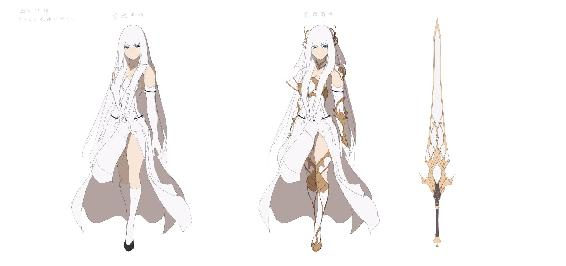
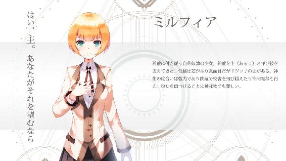
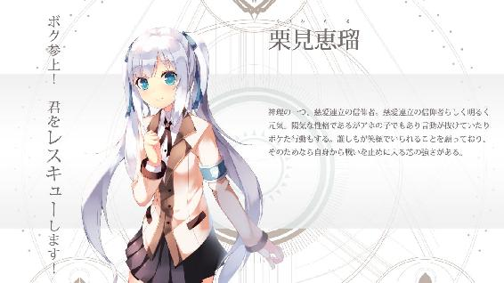
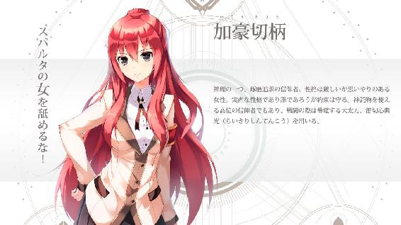
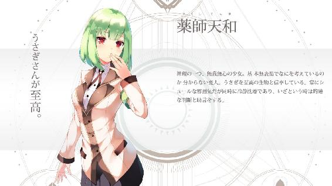

| 天下界の無信仰者（イレギュラー） 3巻 慈愛連立編 | |
| 奏せいや | |
| (2017) | |
天下界の無信仰者 第三巻
---------------------------------------------
奏 せいや

ウリエル






プロローグ
白亜の塔が空に伸びていた。
教皇宮殿と呼ばれるその建物はゴルゴダ共和国を代表する巨大シンボルだ。まずでかい。なによりでかい。見る者を圧倒する全長３００メートルの全容は地上からは見ることは出来ない。さらに総教会庁の本部ということもあり存在感がある。
その高く聳え立つ教皇宮殿上層の会議室にて、教皇エノクは椅子に腰かけていた。目の前には聖騎士隊の隊長たちが着席している。
「教皇様、お誕生日おめでとうございます」
着席していた隊長たちが立ち上がりエノクへお祝いの言葉を送る。
今日はエノクの誕生日。この国の信仰上の代表者である彼の記念日に皆誇らしげな顔をしている。そこには聖騎士一位、ペトロの姿もあった。
彼らかの言葉にエノクは小さく手を上げる。
「ありがとう。こうして祝ってもらえて私も嬉しい限りだ。だが、状況はそれを許してはくれない。座ってくれ」
エノクからの言葉に隊長たちは着席する。表情は引き締まりせっかくの教皇誕生祭であるにも関わらずこの場は重苦しくなっていた。
「彼らの動向はどうだ」
教皇エノクの問いにペトロが答える。
「国務庁、行政庁とも見張ってはいますがまだ動きは見られません。ただし神官庁では我々の動きに不信感を持ち始めている者が増えているようです」
「あからさまに装備を整え過ぎたからな」
「時間がありません、仕方のないことでしょう。いっそのこと天羽の襲来を彼らにも告知しますか？」
「............」
ペトロからの提案にエノクは目を伏せると黙考した。しばらく無言の時間が経ち、エノクはそっと目を開けた。
「いや」
その答えは否定、たとえ同じ慈愛連立の信仰者といえど教えることは出来なかった。
「シカイ文書に記された天羽の侵攻は隠さねばならん事実だ。その秘匿は我々の義務でもある。もしそれが明るみになれば混乱を招くだけだ。慈愛連立の信仰者が負う傷も大きい。また情報の共有は漏洩の危険性を増す。スパルタのビスマルク宰相が知れば黙っているはずがない」
「たしかに」
直面する危機に対し、両者は対策とリスクを考えていく。
「しかし、隠し通すならば本日の教皇様の誕生祭、是が非でも成功させなくては」
そこへ一人の隊長が言う。それに他の隊長たちからも賛同の声が上がった。
「神官長派の狙いが正確に分からぬ以上、やつらからの妨害を考慮し、警備には例年以上の人員を割いています」
「パレードに使われる道路、また道具は事前ぎりぎりまで精査、パフォーマーの本人確認はもちろんのこと教皇様のフロート車には騎士を囲うように配置。また数名と聖ペトロ様にも搭乗してもらう予定です」
隊長たちからの報告にペトロも彼らを見つめ力強く頷いた。
「いや、私は一人でいい」
「教皇様？」
だが、当の本人であるエノクが顔を横に振った。
「楽しみにしている催しが物々しければ、民の期待に水を差すことになる」
「ですがそれはあまりにも危険です」
教皇の身を案じるペトロからしてみれば気が気ではない。エノクの言っていることは理解できるが認めるには危険が大き過ぎる。
「聞こえないか、この声が」
そこで、教皇はぽつりとつぶやくようにそう言った。
エノクは背もたれに体を預けると穏やかそうな表情で瞳を閉じる。
この部屋ではここにいる彼らの声しか聞こえない。外から音が聞こえてくるというのも上空百メートルではあり得ない。
だが、耳を澄ませば聞こえてくる。それは彼らの神化によって強化された聴覚もあるが、なによりその声が大きい。
地上から百メートルちかい高さのここにまで響かんほどに、この日、ゴルゴダ共和国の民は歓喜していた。教皇誕生祭。待ちに待った当日を迎えて。彼の功績に、彼のあり方に敬服し、感謝し、喜びを共有していた。
「大勢の声だ、とても。今か今かと待ち侘びている楽しそうな声。毎年多くのみながこの日を祝ってくれる。私のためにな。それに、私は応えたい」
静かで穏やかな声だった。まるでこのまま眠ってしまうのではないかと思うくらいに、教皇エノクは地上から聞こえる喧騒にくつろいでいた。
「教皇様しかし」
「それに、天羽降臨を狙っているのは『彼ら』だけだ。慈愛連立の信仰者はそうではあるまい。私は一人でいい。警備の騎士は道路沿いに。例年通りだ」
エノクは瞳を開け体を起こした。この場の最高責任者の指示とあっては誰も拒めない。
「分かりました。ですが、せめて私一人だけでも傍に置いてください。それが最大限の譲歩です」
ペトロはエノクの気持ちを汲みつつも自分の意見を主張した。民の期待に応えんとする気持ちは分かるが安全性を軽視は出来ない。
「......そうだな」
ペトロの立場もある。エノクは素直に応じた。
「時に、ヤコブはどうしている。姿が見えないようだが」
「彼には別の任務に就いてもらっています。彼の弟を引き入れるために」
「そうか」
エノクは小さくつぶやいた。目がわずかに細められる。
「申し訳ないが、この事態だ。彼にも働いてもらうしかない」
「当然の責務ではありますがね。彼もそう思っているでしょう」
対してペトロは強硬な態度だ。この危機的状況で戦わないとするのは甘えでしかない。そう思っている。
「だが、彼の苦しみは分かる」
「教皇様......」
それでも、エノクは目を伏せた。ヤコブの弟、彼を戦いに引き込むことにエノクも異論はない。ただし、抵抗がないと言えば嘘になる。本当ならばさせたくはないと、目を閉じた表情は悲しそうだった。
「胸が、痛むな」
エノクは胸に、片手を置いた。
＊
先日の襲撃事件から休校が続く神律学園は被害の修復を急いでいた。本来なら大勢の生徒で賑わう中庭は建築業者が出入りを繰り返し工事を進めている。
そこへ聖騎士第二位のヤコブは一人で訪れていた。茶色い髪が歩く度にゆさゆさと揺れる。いつもの甲冑は外し白のコートに長ズボンを穿いている。顔はフードで隠し、同伴してきた部下には門の前に車と一緒に待機してもらっている。
係りの者に待つように言われ一階廊下で待ち続けることしばらく。彼に声が掛けられた。
「いやー、こんな事態にお客さんが来ていると言われ誰かと思いましたが、やはりあなたでしたか」
ヤコブに向かって一人の男が近寄ってくる。
声は明るく朗らかだ。クセのある黒い髪をした顔は柔らかな笑みを浮かべ、白の僧衣を身に纏っている。
神愛たちのクラス担任教師、ヨハネだった。
ヨハネもヤコブと同じ慈愛連立の信仰者だ。その証に彼の左腕には慈愛連立を示す白のハートの腕章が取り付けられている。
ヤコブといえば慈愛連立だけでなく世界的にも有名な信仰者だ。ここにいるのも名前を伏せてある。そんな相手を前にしてもヨハネはいつもの調子を崩さず、そんな彼にヤコブは声をかけた。
「久しぶりだな」
それは親しくない兄弟に掛けるような、そんな声だった。
ヤコブが不機嫌そうな態度で接してくるのを、ヨハネは受け流すように答える。
「そうですね」
短い、とても短いやり取り。その後沈黙が続く。しばらくしてから口を開いたのはヤコブの方だった。
「状況は」
「おかげさまで見ての通りのご覧の有様ですよ。校舎は崩れ授業の日程は遅れています。ああ、かといって誤解しないでくださいよ？ 私たちも暇というわけではなくてですね。遅れた分の授業を取り戻すため資料や課題の作成で大忙しなんですから。授業計画も練り直しです。ああ、忙しい忙しい。無駄話が出来る人が羨ましいですよ」
「相変わらず性根は腐ったままか？」
「さて、どうですかね」
ヤコブからの鋭い視線に晒されるがヨハネは涼しい顔だ。
「込み入った話でしょう？ 場所を変えましょうか」
そう言いヨハネは歩き出しヤコブも後を付いて行く。
ヨハネが先頭になって歩いていくが、そこで背後のヤコブにも聞こえるように言葉を吐いた。
「いきなりの襲撃、突然の来訪。めちゃくちゃですね」
ヤコブは「フン」と鼻を鳴らすだけだった。
歩いてすぐヨハネは足を止め客室の扉を開ける。
「どうぞ。お茶は出しませんよ、長居はしないのでしょう？」
中には対面に置かれたソファがあり間にはテーブル、部屋の隅には食器棚があった。
ヤコブはソファに座りヨハネは窓際で立つ。長居はしないという彼なりのアピールだ。
二人は入室したがヤコブはすぐに本題を口にはしない。電気が点けていない部屋は薄暗く、どうにも気まずい空気が流れる。
話す気配のないヤコブに代わって、先に口を開いたのはヨハネだった。ブラインドカーテンの一部に指を掛け隙間から外を覗く。視線の先は工事現場だ。
「それにしてもやってくれますねぇ。先日の襲撃してきたあの兵士、見れば教皇軍の特殊部隊じゃないですか。見た時は目を疑いましたよ。昔とは武装がやや異なっていましたが。しかし任務のためならお構いなしの猪頭は変わっていないようですね」
「懐かしいか？」
「笑えない冗談ですね」
ヨハネはブラインドカーテンから指を離しヤコブに振り返る。
「それで、いつから最新鋭の武装をした汚れ役部隊の後始末を、伝統ある聖騎士隊がするようになったのです？」
「いいや、ここに来たのは俺個人としてだ」
「それはそれは」
ヨハネはヤコブの対面にあるソファの後ろに回り背もたれに手を置いた。その後視線を下げる。
「ひどいものだ。あの破壊の爪痕が他者を助けるのを信条とする慈愛連立の行いなど。おぞましいにもほどがある。彼らには使命感以外の心はないんですかね」
「お前こそひどい言い草だ、お前の古巣だぞ」
「だからですよ」
ヨハネを顔を上げる。さきほどから自分を見つめる男に向かい背筋を正した。
「ここにあなたが来た理由は分かります。ですので初めに言っておきましょう」
正面を向け、ヨハネは毅然とした態度で言い切った。
「お断りします。お引き取りを」
「そう言われて俺が退くと思うか？」
だがヤコブも退かない。重い腰は上がることなく鋭い表情のまま見つめてくる。
そこにいるのは教師だ。しかしヤコブの目はそうは言っていない。真剣な眼差しで、目の前の男にかつての異名を告げる。
「教皇軍デバッカー部隊所属、聖騎士第三位、ヨハネ・ブルスト」
「元ですよ」
仰々しい言い方にヨハネは苦笑して答える。今では教師のヨハネだがそんな風に呼ばれていた時もあった。
「知っているはずだ、『兄さん』。私はもう戦わない。戦意というのが完全にへし折れていましてね」
「天羽の襲来だ、お前も聖騎士なら知っているはずだ」
ヨハネの目がヤコブに向かう。けれどすぐに下を向いてしまった。
「神官長派が動き出している。かつての惨劇を現代で再び行うつもりだ」
気まずい空気がさらに重苦しくなっていく。言葉は短くともヤコブの気配には異を言わせない圧力があった。
しかし、ヨハネは俯いたまま。その姿勢には陰が差し弱々しい立ち姿だった。
「それでも、私は......」
声にも寂しさが混じる。
「腑抜けたな」
そんなヨハネを叱咤するようにヤコブは厳しい口調で言ってくる。
「かつては第三位として活躍したお前が、今ではそのザマか」
兄からの挑発にヨハネはいつもの笑顔を作った。
「ええ、その通りですよ。このザマです。ですがね、私はこれでいいと思っているのですよ。子供たちの学び舎を躊躇いもなく戦場に変える彼らを見て確信しています。私は今の方がいいと。戦いなどという虚しい行いをするくらいなら、ここで、子供たちの成長を導いてあげる方がよほど素晴らしい」
「それは罪滅ぼしか？」
ヤコブの目は変わらない。眼光はヨハネを掴んで放さないでいる。
「かつてのお前は信仰心の塊だった。任務以外目に入らず、強固な信仰心ゆえに疑うこともなく、任務を全うできる男だった」
ヨハネの過去。それを知っている者は少ない。本人ですら記憶の底に封印している。
この学園で誰が思うだろう。かつてのヨハネが、学園を躊躇いもなく襲撃できるあの兵士たちと同じ、特殊部隊に所属していたなど。
しかも、そこでのヨハネは聖騎士第三位というエリートだ。
そこで、彼はいったいなにをしてきたのか。それを知る者はこの学園にはいない。
「彼らを見て昔の自分でも思い出したか？ 実績が罪悪感に変わり、今の行いに贖罪を求めていると？」
「......分かりません。そうかもしれないし、もともと向いていたのかもしれない。確かなのはこの職を気に入っているということです」
「......お前が教職とはな、変わるものだ」
「まったくですね」
ヤコブの言葉にヨハネは「ははは」と弱々しく笑う。乾いた笑い声が部屋に消えると、この場は沈黙となった。
無言の間、ただ時間だけが過ぎていく。胸の内に宿る泥のような思いが沈殿するのを待つように、なにかが変わるのを時間に任せる。
そんなヨハネに、ヤコブは声をかけた。
「『あれは』、それほど辛かったか？」
鋭い口調は変わらない。
けれど。次の言葉を言う時、ヤコブの意気がわずかに下がった。
「『魔術大戦』は」
魔術大戦。ヤコブがそう言った時、ヨハネが握るソファの背もたれがぎしりと軋んだ。
「信仰者と魔術師による最後の戦争。被害は出たものの、結果は我々の圧勝だった。だが、あれは正義だ。やつらは滅ぼさねばならん悪だった」
「いいえ、それは違います」
力のないヨハネだったが、はっきりと否定した。
「正義？ 悪？ 意味のない線引きだ、まったく以て」
ヨハネはソファから手を放すと壁に背もたれた。今のヨハネにはまるで枯れ木のような寂しさを感じさせる。
「私は、かつての私を許せない。そのあまりの愚鈍さに首を締めたくなりますよ」
俯いた顔。輝きを失った瞳。忘れられない後悔にヨハネの思考は鬱屈した思いへと埋まっていく。
「人を守るために戦う？ 誰と？ 敵とはなんだ？ 簡単なはずなのに。なぜ私は、あんな当たり前のことに気付けなかったのか」
ヨハネは思い出している、以前の自分が成した行いを。
他人はそれを偉業と称えるだろう。
強大な信仰心、崇高なる行動。この時代では最大の名誉だ。己の信仰に殉じる。その輝きと誇り。
他人は彼に憧れるだろう、尊敬の念を抱くだろう。同じ信仰者としてそれは当たり前のこと。
けれど。
「私の敵。それは、人でしかなかったというのに」
正義の概念などしょせんは価値観の押し付けだ。側面から見た印象を脚色と誇大で見繕い、化粧とドレスアップできれいに見せているだけ。
素顔を、誰も見ようとしない。
正義の仮面に隠された、その本質とはなんなのか。
「気づいてしまったんですよ。今まで敵だと思っていた、人とすら思っていなかった彼らが。悪だと誰もが言い、事実、信仰者を滅ぼさんとした彼らが」
それをヨハネは見てしまった。仮面を取り外し、そこにあるもう一つの顔を見てしまった。今まで信じてきたものとは別の顔。
その衝撃は、ヨハネの信仰に亀裂を入れた。
「我が子を守るために、庇って死んだのですよ」
もう一つの顔は、信じていたものとあまりにもかけ離れていた。
理想の仮面。
現実の素顔。
それを目撃した時の、過去の記憶が当時の感情とともに蘇る。ヨハネは片手を額に当てた。
「あの時の顔が忘れられない。そして、目の前で親を亡くし泣きわめく子供の声が耳から離れないんですよ。今でも」
今も記憶の中で燃え続ける戦場の業火。そこに木霊する多くの悲鳴。
名誉はない。
誇りはない。
残ったのは後悔だけだ。
「同じじゃないですか。我々と。誰かを愛し、そして守ろうとする。同じ人間なんですよ。それを敵と断じ、滅ぼす虚しさ」
ヨハネの意気は消沈としていた。
「兄さん、私はもう戦えない」
「............」
ヨハネの言葉は痛切だった。大き過ぎる悲しみと後悔に押し潰されそうなのを必死に耐えて立っている。
ヨハネはもう、戦える状態ではなかった。
しかし。
「馬鹿者が！」
ヤコブは怒鳴った。まるで落雷を思わせる怒号で。
ヤコブは前に出た体を落ち着かせ椅子に座り直す。
「お前の気持ちは理解しているつもりだ。しかしだ、お前には参加してもらう。このままではお前はなに一つ守れなくなるぞ。ここの生徒も」
ヤコブは言った。弱り切ったヨハネを、それでも厳しい瞳で見つめる。
「お前はなにもせず、その時が来るのを待つのか？ その時になって戦っていれば未然に防げていたかもしれないと後悔するのか？ なぜ知りながら戦わなかったと糾弾する生徒に頭を下げるのか？」
ヤコブの言葉にヨハネは答えない。黙ったまま聞き入れる。
「ヨハネ。お前に、なにもしないことなど出来ない。それを、なによりお前が許せないはずだ」
このままでは天羽が襲来し地上を襲い始める。そうなれば当然ここの生徒も襲われる。それを知りながらなにもしないのは見捨てるのと同じだ。
そんなことをこの男が許せるか。いいや許せない。ヨハネはそんな男ではない。むしろそんな男ではないからこそこうして苦しんでいるのだ。
「守るためだ、戦え」
そう言うとヤコブは立ち上がった。そのまま歩き扉を開ける。
「門の前で待っている」
そう言い残しヤコブは去っていった。扉は閉められ客室にはヨハネが取り残される。
ヨハネは壁に背をもたれたまま顔を上に向けていた。どんよりした空気が流れ気分は暗い。
そのままじっとしていると、ヨハネはゆっくり息を吸い、そのまま深く吐き出した。
「......皮肉なものだ。守るために、誰かを傷つけるなど......」
気分は憂鬱だ、自ら自分の墓を掘るような。
けれどヨハネは壁から離れた。そして扉へと歩き出す。
どの道、立ち止まっているわけにはいかない。危機が迫っている。
ヨハネは扉を開けた。その瞳は足元ではなく、正面を向いていた。
第一章 拉致
ペトロたち聖騎士隊の襲撃を受けた後、俺は恵瑠と一緒にサン・ジアイ大聖堂へと向かっていた。早くミルフィアたちと合流しないと。しかし街中では指名手配のビラと報道がされ一夜にして恵瑠は有名人、どこでバレるか分からない。
顔を隠すため途中で白のキャペリン帽子を買い恵瑠にかぶせた。恵瑠はそれを目深にかぶり俯きながら俺の隣を歩いている。
「ねえ神愛君、大丈夫ですかね？」
「ないよりマシだろ」
俺たちはなるべく人通りの少ない道を選びながら歩いている。連中は手段を選ばない、なるべく早くこいつを安全な場所まで連れてやりたかった。
「普通にしてりゃバレないさ。大人しく俺の隣歩いてろよ」
「うん」
恵瑠は小さく頷くとそれからは一言もしゃべらなかった。時折周りを警戒して小さな顔を左右に動かしている。そんな仕草から不安なのが伝わってきた。心配に声をかけたいが話すわけにもいかない。けっきょく無言のまま歩くだけだ。
そうして歩き続け、サン・ジアイ大聖堂に行くため仕方がなく大通りへと出る。白い建物が並び車道に面した道を歩く。人通りも多く対面から来る人たちが横切る際には話し声も聞こえてきた。中には恵瑠の指名手配の話題もある。
まったく。どんな報道をされたか知らないが良いように報じられてるわけがない。暗殺事件の最重要人物だとか、はては国家転覆に信仰心が低いやつが自棄でも起こしたとか。人事だと思って好き放題言って笑ってやがる。くそ。
「いかんいかん」
俺は顔を振る。そいつらに文句を言いたくなるがそれで騒ぎを起こしたら最悪だ。俺は隣にいる恵瑠にそっと声をかけてやる。
「気にすんな、あんなの便所のラクガキさ。面白半分でてきとうに言ってるんだよ」
「うん......」
俺はあえて明るい口調で言ってみるが恵瑠から返ってくる声は悲しそうだった。なんというか、元気がない。
それもそうか。こいつは人間と仲良くしたくて天羽を止めたっていうのに、その人間にも嫌われるなんて救いがない。
どうしようか。考えてみるがいい案が浮かばない。苛立ちに頭を掻く。ちらりと恵瑠の様子を見てみても帽子が邪魔で顔が見えないし。くそ、いい仕事してるぜ。
その時建物の壁にもたれながら恵瑠のことを話している二人組がいた。話の内容はやはり面白おかしく脚色した悪口だ。
ちっ。てきとうなこと言いやがって。俺は二人を横切ったあとも背後を振り返りやつらを睨みつけていた。
「まったく、一人くらいまともなやつはいねえのかよ。なあ？ ん、おいどこ行った？」
と、俺は振り返るがそこには恵瑠がいなかった。慌てて周囲を探すが人が多くすぐに見つからない！
「しまった！ わき見の最中に見失うとかッ」
俺は周囲を慌ただしく見渡した後、恵瑠を探して走り出した。
＊
恵瑠は地面を見つめながら歩いていた。見えるのは自分の足と舗装された道だけだ。
そんな中、周りから自分のことを悪く言う話が時折聞こえてくる。
それが、彼女には辛かった。かつての過ちを償いたくて天羽を止めたのに、結果論とはいえこういう目に遭うとは。
「ボクは......」
知らず恵瑠はつぶやいていた。
その時、ふと隣から神愛の気配がしないことに気付いた。それで顔を上げてみる。
「神愛君？」
そこには神愛の姿がない。慌てて辺りを見渡すが姿が見えなかった！
「しまった！ 足元見てる最中に見失うなんて！」
慌てる。最悪の事態だ、早く見つけて合流しなければ。仲間と合流する前に隣人が消えるとかホラー映画みたいな展開になっている。
恵瑠はすぐに周囲を見渡すが、その時だった。小学生くらいだろうか。道の隅に自分よりも小さな女の子が立っており、それも泣いているようだった。
「おかあさん......」
どうやら母親とはぐれてしまったようだ。
つぶやきは小さく道を行き交う人には届いていない。女の子が困っているのに気付けたのは恵瑠だけだ。
だが、ここで恵瑠が助けに行けば正体がバレるかもしれない。残念だが彼女を助けるわけにはいかない。とりわけ緊急性のある問題でもなさそうだ。時間が経てば誰か気づくか母親が探してくれるだろう。
普通ならそう考える。だけど。
「ねえ、どうしたの？」
恵瑠は、考える前に話しかけていた。
恵瑠は女の子の前に立っていた。まだ幼児の女の子が恵瑠を見上げる。
「え？」
「お母さんとはぐれちゃったのかな？」
「......うん」
恵瑠は笑顔で話しかけるが女の子は悲しそうに顔を下げてしまった。
「君のお名前はなんですか？」
「......エリザ」
恵瑠の質問に女の子は小さい声だが答えてくれた。
ならば今度は自分が応える番だ。恵瑠はニコっと笑うと元気よくガッツポーズを取る。
「ボク参上！ 今から君をレスキューします！」
「え？」
「だから大丈夫ですよ、ね？」
恵瑠は笑った。彼女は慈愛連立の信仰者、困っている人を助けるのが教えの、心優しい女の子だ。目の前で泣いている人がいる。困っている人がいる。
人を助ける理由なんて、それだけで十分だ。
今、泣いている女の子を助けるために、恵瑠は笑顔で近づいた。
「ほんとに？」
「うん！ 任せてください！」
不安そうな女の子に恵瑠は頷き、彼女の横に並ぶ。そして街行く人々に向け、両手を口に当てて叫んだ。
「エルザちゃんのお母さぁああん！」
「エリザです」
目の前を歩いていく大勢の人々に聞こえるように。困っている人を助けるんだと、恵瑠は力いっぱいに叫んだ。
「エリサちゃんのお母さぁああん！」
「エリザです」
隣にいるエリザちゃんから冷静なツッコみを貰いつつ、恵瑠がもう一度叫ぼうとした時だった。
「エクザ------」
「エリザ！？」
「お母さん！」
母親らしき女性が駆け寄ってきた。その女性にエリザちゃんも抱き付く。どうやら見つけてもらえたようだ。
よかった。二人の再会に恵瑠はにこにこしながら見つめていた。
だが、母親がお礼を言おうと恵瑠を見た時だった。
「あなた、もしかして指名手配の人！？」
「え......」
温かい気持ちに冷水を掛けられたように表情が青ざめていく。バレた。母親は急いでエルザちゃんを抱きかかえると恵瑠から離れていった。
「私の娘になにをするつもりだったの！？」
「いや、違うんです！ ボクはただ！」
「お母さん、この人はそんなんじゃ」
「エリザ、あなたは黙ってて！」
恵瑠とエリザが揃って説明しようとするが母親は聞く耳を持ってくれない。
「誰かぁ！ 指名手配犯よ、私の娘に手を出そうとしたわ！」
「待ってください、ボクはただ助けたくて！」
恵瑠は説得するが街を歩いていた人たちの足が止まる。一斉に恵瑠を注目してきた。次々に「ほんとうだ」と声が上がる。
恵瑠はすっかり町の人々に囲まれていた。人垣が生まれ非難と冷たい目で見てくる。「最低だ」「なんてやつだ」心無い言葉が飛んでくる。そこに、彼女を信じてくれる者はいなかった。
ただ困っている人を助けたかった。それだけだった。
しかし、その結果得られたのは感謝ではなく疑心と非難だけだった。
人を救おうとしただけなのに、自分は救われない。
恵瑠は俯いた。この現実に、胸が締め付けられるほど苦しくなる。
「ボクは......」
誰も助けてくれない。
「ボクは......！」
味方などいない。
まるで、ここに居場所なんてないように。
だけど。
「おい」
そんな時だった。
「静まれ静まれ！」
彼は、やってきた。
一人の少年の大声が響く。ここにいる全員が彼に注目した。恵瑠も顔を上げ声の主を見つめる。
そこにには、人垣を分けて来る神愛の姿があった。
「神愛君......」
この場の人たちは誰しもが指名手配犯の恵瑠を見つけ非難している。おまけに娘に手を出そうとしたと言われれば空気は最悪だ。
だけど、神愛は違った。
いったいなにをするつもりなのか？
神愛は自分の腕章を無理やり引き取ると、それを全員に見せつけた！
「慈愛連立の信仰者が。この、黄色のダイヤが目に入らぬかぁ！」
「その腕章は！？」
町の人々が驚く！
「ここにいる俺を誰だと心得てやがる。畏れ多くも天下界唯一のイレギュラー、宮司神愛だぞ！ 俺様の御前である。頭が高い、控えろ控えろぉお！」
町の人々を黙らせながら神愛は前に進んでいく。さらに神愛の口上は続く。
「俺さん、僕さん、こらしめてあげなさい。いくぜおらぁあああ！」
「お前がやるんかい！」
町民の一人がツッコむ。
神愛は恵瑠を助けるために現れた。しかし人々は畏まるどころか返ってきたのは当然悲鳴だった。
「きゃあああ！ イレギュラーよ！」「どうしてイレギュラーがこの場所に！？」「出て行けイレギュラー。神を信じない不届き者が！」「イレギュラーなんて火あぶりだ！」
「おいいいい！ イレギュラーっていうだけでなんだその反応は！？」
静まり返った空気が一転さきほどよりも大きな罵声となって返ってくる。もう恵瑠そっちのけだ。ただの犯罪者よりも無信仰者の方がよっぽど性質が悪い。なにせここは天下界、神を信じぬ不届き者など火あぶりの刑にされてもおかしくない。
しかし、そっちがその気なら神愛もその気だ！
「ふざっけんな！ てめえらの家ぜんぶに火ぃ付けてやろうか！ 顔全員覚えたからな！」
「きゃあああ！」
まさしく火に油である。
「早く衛兵を呼ぶんだ！」「やっぱりイレギュラーは最低だ！」「こんな危険人物見たことがない！」
「んだとオラぁあ！？」
神愛が怒鳴り散らすと街の人々は蜘蛛の子を散らすように逃げて行った。そんな彼らを神愛はいつまでも睨みつけていた。
「くそ、ふざけやがって」
苛立ちが収まらないのが見ていて分かる。
「神愛君、どうして」
「ん？」
そんな神愛を恵瑠は見上げていた。だがそれは怒っていることよりも別のことが気になっていたからだ。
「どうして、自分がイレギュラーだってこと言ったんですか？ そんなことしたらみんなから嫌われるって分かってたはずなのに」
それが恵瑠には分からなかった。
あの状況で大勢の人から拒絶された。信じてもらえなかった。それはとても辛く悲しいことだったのに。なのに神愛は自らその状況へと飛び込んだ。自分でイレギュラーであることを明かし全員から非難された。
恵瑠にはとてもではないが真似できない。あんな辛く悲しい目に遭うなんてこと。
「自分の正体を明かすのが怖いか？」
神愛が恵瑠を見つめる。その顔は穏やかだった。さっきまでの苛立ちは消え、恵瑠を優しく見つめていた。
「お前だけに辛い思いなんてさせねえよ」
それはいつもの彼だった。軽口で、少し乱暴で、いい加減で。
でも、優しい神愛だった。
「友達だからな」
神愛は、そう言うと笑って手を伸ばしてくれた。
恵瑠はようやく理解した。
なぜ正体を明かしたのか。
それは、自分を助けるためだった。わざと自分に非難を向けさせたのだ。
誰も助けてくれないあの状況で。
彼だけは、自分を守ってくれた。
「うん」
その手を、恵瑠は掴んだ。
さきほどまであった辛い気持ちも悲しみもぜんぶが消えていた。
彼がそばにいる。
それだけで。
恵瑠は明るさを取り戻していた。
＊
人垣ができていたからもしかしてと思い覗いてみれば案の定恵瑠だった。それを助け俺たちはなんとか合流できていた。
「大丈夫か恵瑠？」
「うん。神愛君のおかげで大丈夫です！」
「そうかい」
最初見た時は死にそうなくらい悲しそうな顔してた恵瑠だが今ではいつもみたいに明るい顔をしている。それで俺も安心できた。
「顔がバレちまったな。こうなったら急いで行くか！」
俺は握った恵瑠の手をひっぱり走り出そうとした。
だが、そこへ声がかけられた。
「そこまでだ」
聞き覚えのある男の声だ。声から滲み出る威圧感は聞いただけで分かる。
「ちっ」
振り返ると、そこには予想通り部下の騎士を連れて立つペトロの姿があった。黒い髪が風を受けて小さく揺れている。
俺はやれやれと顔を振った。恵瑠から手を放し前に立つ。
「まったく、お前のあいさつはそこまでだしかないのかよ？ 初めて会ったらおはようございます、お元気ですかだろ？」
「無駄話をするつもりはない」
ペトロは片手を向けてきた。その手が一瞬光る。するとペトロの腕の中に恵瑠が捕らわれていた。
「なに！？」
すぐに振り向くが恵瑠がいない。一瞬で移動させられたのか？
「恵瑠！？」
「放してくださいいい！」
ペトロの腕の中で恵瑠が暴れているがびくともしない。
俺は急いでペトロに駆け付けようとすると、さらにペトロの手が光り兵士二人が消えた。そして俺の背後に現れ羽交い絞めにしてきた。
「くそが！ 放せてめえら！」
両腕を一人ずつ捕まえられ身動きが取れない。
「撤収だ、得るものは得た」
「恵瑠ぅううう！」
「神愛君！」
そう言うとペトロは消えた。恵瑠を持ったまま。
「待てよてめえ！」
俺は叫ぶが目の前にはペトロも部下も、恵瑠もいなかった。消えてしまった。
「お前は留置所だ、指名手配犯擁護の疑いで逮捕する！」
「恵瑠を返しやがれ！」
後ろの二人を振り解こうとするがそもそも恵瑠がどこにいるか分からない。追いかけようがない。
くそ、甘かった。自分の不甲斐なさに腹が立つ。
恵瑠が攫われた。悔しい思いがずっと胸の中で暴れていた。
＊
教皇宮殿の広いフロア。白い空間には以前数百という騎士が並んでいたが今はいない。台の頂上に置かれた椅子に教皇が座り、その前にいるのは二人。聖騎士ヤコブと、彼が連れてきたヨハネだった。二人は教皇を前にして恭しく頭を下げる。
「これはこれはエノク様。お久しぶりです。見たところお変わりないご様子で。お元気そうでなによりです」
「久しいな、ヨハネ」
久しぶりの再会にエノクも表情を緩ませる。
だが、次の言葉に顔を暗くした。
「君が隊を抜けた理由は知っている。だが、状況が状況だ。すまないが君も参加してほしい」
申し訳なさそうな、けれど彼は慈愛連立のいわば長だ。へりくだった態度ではない気丈な声だ。
その言葉にヨハネは無言だった。答えを返さず沈黙している。
「失礼だぞ、ヨハネ」
「これはすみません、感動の再会にしばし我を忘れていました」
兄であるヤコブからの注意にヨハネは頭を掻き軽い調子でとぼける。
そこへ新たな足音が加わった。
「これはまた。お久しぶりですペトロさん。あなたもお元気そうですね」
「ヨハネか」
現れたペトロは立ち止まり教皇に一礼する。それから改めてヨハネを見つめてきた。
「久しぶりだな。ずいぶんと雰囲気が変わったようだが」
「わたし今では教師なんです。それに自分で言うのもあれですが、これでも人気があるんですよ？」
「ふん。自分で言うな」
ペトロとヨハネで小さな笑いが生まれる。
ペトロは表情を切り替えると教皇を見上げた。
「例の娘を確保しました。現在は下の階で監禁しています」
「例の娘とは？」
そこへヨハネが質問する。学園を出てここに着いたものの詳しい説明はまだ受けていない。
「俺が説明する」
そこへヤコブが前に出た。まだ真相を知らないヨハネを真剣な顔で見つめる。
「落ち着いて聞け、ヨハネ」
説明をする前に一言置いて、ヤコブは話した。
「君の持つクラスにいる生徒。栗見恵瑠は、堕天羽だ」
「なんですって？」
ヨハネの表情が変わる。驚愕に細い目が開かれヤコブを見る。
「今監禁されているのは、その恵瑠だ」
ヨハネは言葉を失った。世界から色がなくなっていくような錯覚と心が漂白されていく感覚がする。
衝撃がヨハネの意思を砕こうとしていた。
ヨハネの信条、彼の信仰のすべてを。
人助けとは？
戦う理由とは？
------いったい、なにを守りたかったのか。
＊
その頃よりも少し前のサン・ジアイ大聖堂の一室。
「ねえ、神愛と恵瑠だけど本当に大丈夫なんでしょうね？」
豪奢な待合室で加豪は焦りを露わに室内の二人に聞いていた。というのも、昨日ゴルゴダ美術館から別れて一度も会っていないことに加え、昨夜の報道である。
「昨日のニュースのあれ。きっと恵瑠落ち込んでると思う......」
同級生の指名手配の報道に加豪は俯いた。普段は明るく元気な恵瑠でもあんなことをされれば傷つくはず。さらに怯えた状況に落とし込められれば心配にもなる。
表情を暗くする加豪だが、そこへ声がかけられた。
ミルフィアだ。
「私もそう思います。すぐにでも合流しなければ。ただ、恵瑠には主がついています。主ならきっとなんとかしてくれます」
ミルフィアは心配しつつも気丈な表情だった。恵瑠は今危機的な状況にいるが神愛がなんとかしてくれると信じている。
ミルフィアの顔を見て加豪は頷いた。
「そうね。恵瑠は一人じゃない、あいつが一緒にいる。ただ、他にも気がかりなのがあのヤコブっていう男が言っていたこと」
加豪はいつもの表情に戻るが別の不安要素に再び呟いた。顎に手を添える。
「神官長派が天羽の再臨を目論んでいるって話。もし本当なら」
かつて天羽が地上に降り立ったのは加豪も知っている。そこで人々に布教したことも。人類を管理下にするために侵攻してきたことまでは知らないがここまでの知識なら持ち合わせていた。
だが、当時とは違い現代ではすべての人が信仰者だ。そこへ天羽が現れ布教などされたら琢磨追求と無我無心の信仰者が黙っていない。
最悪、すべての信仰者を巻き込んだ、『三柱戦争』に発展しかねない。
それは、なんとしても防がねばならないことだ。
「ですが、それはあり得ません」
三柱戦争という最悪の未来。それを危惧する加豪だがミルフィアはきっぱりと否定した。
「確かに二千年前、地上には天羽は現れました。ですが天界紛争を経て天羽は撤退し、天界と天下界を繋ぐ天界の門は封鎖され天羽の出入りは出来ません。開けようにも封印がされており、その鍵も『紛失』したと聞いています。一部の天羽が地上に残っていたとしてもそれはごく少数のはず。天羽が再び地上に現れるのは可能性の低い話です」
「それはそうだけど、本当に可能性が低いならここまでの動きをする？ これがそこらのオカルトサークルとかなら気にしないけど、相手は教皇正規軍よ？」
「それは......」
二人の間で憶測が飛び交う。信憑性と危険性に話の行き先は海に漂う流木のように揺れていく。
すると今まで黙っていた天和が口を開いた。
「神官長派は天羽再臨を目論でいる。彼はそれしか言わなかった。ここでどれだけ議論しても答えは出ないわ。それよりも宮司君たちを探しに行く方が有意義だと思う。指名手配されている栗見さんが見つかるのは時間の問題だわ」
答えの出ない議論をいつまでしていてもそれは不毛だ。どちらにせよ恵瑠を守り通せばいいのなら、二人と合流する方が確実だ。
「はい。私たちもすぐに主たちを探しに行きましょう」
「そうね」
天和の意見に賛同し三人が部屋を出ようした時だった。
「大変です！」
職員の人が慌てて部屋へと駆け込んできた。
「いったい何事ですか？」
ミルフィアが聞く。
「たった今入った情報です。栗見恵瑠は教皇派に捕らえられ、宮司神愛も留置所に入れられたという報告が」
「主が！？」
「なんですって！」
「栗見さんの行方は？」
「現在では分かっていません」
三人は顔を見合わせた。
「どうするミルフィア？」
「ともかく、主が捕まっている留置所へと行きましょう。そこで当時の状況を聞きます」
「いろいろ大変ね」
加豪は愚痴をこぼすがすぐに表情を引き締めた。
三人は場所を聞くと部屋をとび出した。三人の先頭をミルフィアが走る。その顔は焦りに歪んでいた。
「主、待っていてください！」
恵瑠が教皇派にさらわれた。さらに神愛も捕まっている。自分が仕える彼のピンチにミルフィアは必死な表情で駆けていた。
＊
恵瑠が攫われた。おまけに俺まで捕まり取り調べ室に座らせられている。
両手は椅子の後ろで手錠をかけられていて身動きが取れない。狭い部屋に小さなテーブル、対面には俺を連れてきた二人の騎士がおり一人は座っている。部屋は薄暗くスタンドランプの光がぼんやり灯っていた。
ここに来てからどれだけ経っただろう。こうしてにらみ合ったまま無駄に時間だけが経っている。
「なあ、カツ丼はどうしたカツ丼は。定番だろうが」
「カツ丼はない」
「定番なのに？」
「ない」
「親子丼は？」
「ない」
「うな丼は？」
「ない」
「天丼は？」
「ない」
「うどんは？」
「ない」
「今までのどんの中に一つだけ仲間外れがいるんだがどれだと思う？」
「黙ってろ」
「ちっ」
俺は舌打ちしながら視線を逸らした。
「ふん、イレギュラーのクズが」
「なに？」
「知ってるはずだ、あの恵瑠って女の正体を」
俺は騎士を睨むと男も不機嫌そうな顔で俺のことを睨みつけてきた。
「なぜあんな奴を庇う。あいつは多くの人間を殺したんだぞ？ それが慈愛連立の信仰者として人間にまぎれてた。なにかを企んでいるに違いない！ あんな化け物、さっさと殺して欲しいくらいだぜ」
部屋の入口前で立っている騎士も「まったくだ」と口をそろえる。
だが、俺には納得いかなかった。
「そんな言い方するなよ......。お前があいつのなにを知ってる？ あいつはな、そのことをすごく悔やんでる。反省してるんだよ！」
恵瑠は本当は優しいやつなのに。過去の過ちはひどいものだったかもしれないが、今はそれに苦しんでる。なら許してやってもいいんじゃないのか？
「どうだが。ただの人殺しだろ？ いや、大量殺人者だ。今まで生きてきただけ幸福なんだ。その分苦しんで死ねばいいものを」
男の言葉に後ろの男も笑っていた。
それで、俺は立ち上がった。手錠で繋がれた椅子も持ち上がる。
「貴様！ それ以上動いたら斬るぞ！？」
騎士の二人も立ち上がり鞘から剣を抜く。だが、俺は止まらなかった。
「あいつのことを知らないくせに。てめえらこそ」
俺は神理を発動する。全身が薄く黄金に包まれる。それによる強化で俺は手錠を引き千切った。
「なに！？」
まずいと思ったが、我慢出来なかった。
「これ以上、あいつを侮辱するんじゃねえ！」
俺は右腕を振り上げた。右手に集中する黄金のオーラを纏い、目の前の男を殴りつける。
「があああ！」
「ぎゃああ！」
男は吹き飛び背後の男も巻き込んでいった。さらに扉にぶつかるとそのまま弾き飛ばし出口が開く。
俺は肩を回しながら入口から出た。すでに建物から警告音が鳴り響いている。かなり大事になっちまったが手が出てしまったんだから仕方がない。うん、仕方がない。それよりも早く恵瑠を探しに行かないと！
俺がそう思っていると声が聞こえてきた。
「主！」
「ミルフィア？」
廊下を走ってミルフィアが駆け付けてきたのだ。それにミルフィアだけじゃない、加豪と天和も一緒だ。
ミルフィアが目の前で立ち止まる。
「主、大丈夫ですか？ 捕まったと聞きました。なにかお怪我はありませんか？」
「心配すんなミルフィア、俺は大丈夫だ」
「どこが大丈夫よどこが！？」
するとミルフィアの後を走っていた二人が追いついた。加豪が顔を顰めて倒れている騎士二人を見ている。
「留置所で衛兵殴り倒しておいておまけに脱走？ このどこが大丈夫なの？」
「しゃーねえだろ、成り行きだよ成り行き」
「成り行きなら仕方ないわね」
「天和はてきとうなこと言わないで。神愛が調子乗るでしょ」
「どうします主。すぐに他の係りの者がやって来るはずです」
「そのわりにはなかなか来ないな」
俺は廊下を見るがまだ駆け付けてくる気配がない。
「今日は教皇誕生祭ですし、ほとんどの人員はそこの警備に回っているのでしょう。どうやら最低限の人数しかいないようです」
「よし！ この隙に逃げ出すぞ。そして恵瑠を奪還する！ お前らもいくぞ」
「ちょっと待って。本気でこのまま脱走するつもり？」
俺は走り出そうとするが加豪から苦情が入った。
「しゃーねえだろ、成り行きだよ成り行き」
「成り行きなら仕方ないわね」
「天和お願いだから黙ってて」
加豪が額に手を当て顔を振っている。
「なんだよ加豪、恵瑠がピンチなんだ。急がなくちゃならないんだよ！」
「分かってるわよ！ まったくもーう、はいはい分かった。どうしてあんたはいつもトラブルばかりなのよ」
「文句は後だ、まずは走れ！」
俺たちは走り一階廊下の窓から外へと飛び出した。なんとか逃げ切ることに成功し建物の角に手を当て息を整える。
「はあ、はあ。なんとか逃げ切れたな」
「サイテー。まさかこんなことになるなんて」
「大丈夫って言ったろ？」
「いきあたりばったりのどこが大丈夫なのよ」
加豪は不満そうに吐き捨てる。まあ分かるけど。でも分かって欲しい。
するとミルフィアからも心配した顔をして俺に近づいてきた。
「主。私からもいわせていただきますが、あまり無茶な行動は控えてください。心配です」
「んだよ！ そんなに俺の行動が無茶だってか？」
「......はい」
くそ！
「そもそもな、お前らが昨日先に襲撃受けるなんてヘマするからこうなってんだろうが！」
「！？」
俺は三人に向かって叫ぶが、その瞬間ミルフィアの肩がビクッと震えた。
「ん？ ミルフィアどうした？」
「いえ、なんでもありません」
なんで顔を背けるんだ？
「それで。こうして宮司君と合流出来たわけだけど。これからどうするの？」
そこで天和が聞いてきた。こいつは相変わらず無表情だな。
「そうだな。まずは今後のこと話し合わないと」
「ねえ宮司君。栗見さんだけど途中まで一緒にいたんでしょう。今どこにいるか知らないの？」
「わりい。恵瑠は聖騎士のペトロってやつに持っていかれた。一瞬で恵瑠を捕まえるとそのまま消えちまったんだ。どこに行ったかは分からねえ」
ペトロと二度目に出会った時、あいつは俺の背後にいたはずの恵瑠を自分の腕の中に出現させすぐに消えてしまった。いきなりのことに防ぐのも追いかけることも出来ない。早業だった。
「そもそもあいつらなんなんだ？ いきなり現れたり消えたりしたぞ」
ペトロは出現した時も帰る時も空間からだった。それも自分だけでなく他の人も空間を移動させている。あんなのめちゃくちゃじゃないのか。
「超越者です、主」
「オラクル？」
なんのことだか分からない、初めて聞く言葉だった。
「それについては後で説明します。それよりも恵瑠の居場所をなんとかしないと」
オラクルというのがどういうものか気になるが今話すことじゃない。脱線してしまったが恵瑠の居場所についてなんとかしないと。
「なあ、ラファエルやガブリエルは知らないのか？ 調べてるんだろ？」
「むこうでも探してくれてるみたいだけど、まだ見つかってはいないようね」
俺は地面を蹴った。その場を回りなにかいい案がないか考えるが出てこない。
「どうするんだよ、時間がないぞ！ あいつらは容赦なく恵瑠を襲ってた。今も無事だって保証はないんだ」
焦る。時間がない。でも場所が分からないんじゃ助けようがない。
「くそ、知ってる奴はいないのかよ」
居ても立ってもいられないのに、もどかしい思いだけが溜まっていく。
その時だった。壁に貼られた広告紙が目に入った。
『教皇誕生祭パレード！ 午前十時半から開始！ 進行通路はこちら』
「............」
そこには今日が教皇の誕生祭であることとパレードの道順が地図で書かれていた。さらにはあのペトロも参加すると写真が載ってある。
恵瑠のことですっかり忘れていたが今日は教皇の誕生祭だ。当然そこには教皇もいるし、あのペトロも出場する。
それで俺はある覚悟を決めた。
「ミルフィア、加豪、天和。お前たちはさきにサン・ジアイ大聖堂に戻って恵瑠の居場所が見つからないか聞いてきてくれ」
「主は？」
ミルフィアが聞いてくるが、俺は三人に背を向けた。
「俺はちょっと野暮用だ」
「こんな時に？」
背中から加豪の声が聞こえてくる。
「トイレ だよ。すぐに戻るさ」
そう言って俺は歩き出した。三人から離れていく。
一人で道を歩きしばらくしてだった。
「なにも言わず、お一人で行くつもりですか？」
背後からミルフィアに声をかけられ足が止まった。どうやら一人だけついてきたらしい。
「別になんでもねえよ。心配すんなって。お前はあいつらと一緒にさき帰ってろ」
背後から足音がする。ミルフィアは俺を追い抜くと前に回り込んできた。
ミルフィアの小さな顔。そこにある青い瞳が、俺を真剣な眼差しで見上げていた。
「なりません主。危険すぎます」
「ミルフィア、俺はさきに帰ってろって言ったはずだぜ」
「はい。主はそう言いました。ですが」
ミルフィアが一歩前に出る。不安そうな顔で俺に近づいてくる。
それは、前からでは考えられないことだった。
「お願いです、主」
かつてのミルフィアなら、俺の言うことなら一言返事で従っていた。それが本人の意思とは反することでも。
そう、どんな命令でもだった。
『命令だ。もう、二度と俺の前に出て来るな』
泣くほど辛いことでも。泣くほど悲しいことでも。
『......はい。我が主......、あなた、が......、それを望むなら......ッ』
ミルフィアは、はいと言っていた。
だけど、今のミルフィアは違う。前と同じように俺と接してくれるのに、ちゃんと自分の意見を言ってくれる。ただ従うだけの奴隷じゃない。
ちゃんと自分の意思のある、女の子に変わってきている。
そんなミルフィアが、心配そうな顔で俺に言ってくるのだ。
「私を、主の傍にいさせてください。もう、主と離れたくないんです」
「ミルフィア......」
きれいなミルフィアの目が俺をまっすぐに見つめている。その声に彼女の想いが伝わってくる。きっと別れてから俺のことを心配してくれてたんだと思う。俺が捕まったと聞いてもっと心配かけさせたと思う。
ミルフィアは俺の前に立って引き下がらない。
ミルフィアは、こんなにも俺のことを思ってくれていたんだ。
「分かったよ」
そんなミルフィアの気持ちを裏切れない。こいつの変化を誰よりもうれしく思ってる俺だから、ここでいいえなんて言えなかったんだ。
「よし」
俺は表情に気合を入れた。そして見つかった行き先に顔を向けた。
「いくぜ」
「はい」
二人揃って、俺たちは走り出した。
第二章 最大の信仰、最強の力
とある薄暗い部屋の一室、硬質な壁に閉ざされた場所だった。広さはあるがここが寂しく感じるのはなにもないからか。薄闇と静寂が部屋を満たしている。
そこへ光が差し込んだ。厚い自動扉が開きそこから現れたのはペトロだった。扉は閉まられここは再び暗闇になる。同時に一か所がライトアップされた。ペトロは照らされた場所へと近づいていく。
「これが、かつて地上を炎で覆い尽くしたという伝説の天羽。ウリエルか」
そこには、十字架で固定されていた恵瑠がいた。両腕と両足は光輪で固定されておりピラミッドを思わせる高台の上に設置されている。床には円形の魔法陣が薄い青色を発していた。
空間の固定技術。恵瑠の周囲は空間と切り離され認められたもの以外は通さない。
ペトロは魔法陣に足を踏み入れた。本来ならば不可侵の領域にやすやすと入り十字架に縛られた恵瑠を見上げる。
「君のような者がな」
恵瑠は気を失っていた。細い四肢は固定され、垂れた頭からは白い髪が二つ下がっている。
「ん......」
ペトロに気付いたか、恵瑠は目をさまし顔を上げた。
「ペトロ......？」
「目覚めたか」
ここには二人以外誰もいない。こうして二人が出会い話し合うのは初めてだった。
「まさか、こういう形で伝説の天羽と出会うとは思っていなかった。ウリエル」
「そうですね。ボクもです。聖騎士第一位のあなたの名前は、よく聞いていました。素晴らしい信仰者であり騎士だと」
恵瑠は縛られた体の痛みに顔を引きつりながらも笑顔で答える。
「そうか。だが忘れることだ。ここにいる男はお前に一切の慈悲を与えん」
だが、ペトロは厳しい表情で剣を抜いた。その切っ先を恵瑠の首筋に当てる。
「答えてもらおう。天界の門をどう開くつもりだ？」
「............」
恵瑠は目を伏せるだけで答えなかった。それに業を煮やしたかペトロが大声で迫る。
「答えろ！」
恵瑠は俯いたまま、悲しそうな声で言う。
「知りません」
「答えないつもりか」
「本当です。本当に知らないんです！」
恵瑠は顔を上げた。懸命に訴えるがペトロは信じない。
「いや、お前は知っているはずだ」
脅迫するように剣を押し付ける。
「天界の門に施された封印。それを解くための四つの鍵。その内失われた鍵こそが、お前のはずだ、ウリエル」
「！？」
ペトロから言われた言葉に、恵瑠は驚きのあまりしばらく言葉を失った。
「......どうして、それを」
天界の門の鍵。その事実はシカイ文書にも記されていない秘密だった。少なくともこの事実を知っているのは天羽だけのはず。
「お前は鍵としての資格を失った。天界の門を開くためにはお前に鍵としての資格を取り戻す必要がある。その方法を言え。でなければ永遠にこのままだぞ」
「待って下さい！ ボクは本当に知らないんです！ 天羽を再臨させ人々を襲うなんてなにかの間違いです！」
恵瑠は叫ぶ。ペトロの表情は不動のまま見上げている。
「信用のおける筋から得た情報だ」
「誰が言ったのか知りませんけど、そんなのウソに決まっています！」
恵瑠は否定する。天界の門の鍵は失くしたまま、扉は開かない。よって天羽の襲来などあり得ないと。目指すだけ無駄な話だ。
だが、ペトロが発した言葉に恵瑠は再び驚いた。
「監査委員会委員長、ラグエルだ」
「え？」
先日、何者かに殺害されたラグエルの名前に、恵瑠は体が小さく震えていた。
「まさか、ラグエルがそう言ったのですか？」
ゆっくりと顔が下がっていく。
「そんな......、ラグエルが」
ショックに気が沈む。どういうことか分からない恵瑠は混乱するが、めげずに顔を上げた。
「でも、ボクは本当に知らない。お願いです、信じてください。ボクだって、人が襲われるなんてこと嫌なんです！」
必死な思いで告げた。懸命に伝えようと言葉を出した。
だが、ペトロの目は冷たかった。
「ウリエルの言い伝えは知っている」
冷徹な瞳が恵瑠を睨みつける。彼が知っている彼女の正体は見目愛らしい娘などでは断じてない。
「その手で、いったいどれだけの人間を屠ってきた」
その言葉に、恵瑠の表情がみるみると青ざめていく。
「どれだけの街を破壊し、どれだけの悲鳴をかき消した」
ペトロからの言葉に、胸の奥から後悔と罪悪感が溢れてくる。
かつては輝いていたもの。
信条。
誇り。
理想。
情熱。
そのすべてが、否定される。
「お前の正体は、ただの人殺しだ」
人殺し。ペトロからそう言われ恵瑠はがっくりと顔を下ろした。全身から力が抜け、空虚な気配が漂う。
それでもぽつりと、恵瑠は呟いた。
「信じていたんです......。これで、すべてが良くなるんだって......」
恵瑠の言葉をペトロは黙ったまま見上げていた。
そこで扉が開く。
「ペトロ様、お時間です」
部下からの報告にペトロは剣を下ろした。
「お前の罪」
そう言ってペトロは踵を返す。離れていく足音に恵瑠は憔悴した顔をなんとか持ち上げる。
ペトロは開かれた扉の前に立っており、顔だけをこちらに動かした。
「その真の罪は、己の行いを悔いたことだ」
その言葉を最後にしてペトロは出て行った。
扉が閉められる。静寂が戻り音がなくなる。
「............」
恵瑠は顔を下ろし、無言の空間に一人取り残されていた。
＊
ペトロが恵瑠の尋問を終え時刻は午前十一時。晴天に恵まれた今日この日、教皇宮殿正門前の道は大勢の観客で賑わっていた。教皇を一目見ようと集まった人々で熱気にあふれ、それを道路沿いに並ぶ騎士たちが見守っている。観客の視線は正門の奥にあるフロート車に向かっていた。
まるで舞台の一つのように白く巨大な車には装飾と音響装置が備えられ、車の上には段があり、一番上には教皇の座る椅子が設けられていた。
そしてついに、パレード開始の時刻とともに教皇が宮殿入口から現れた。大きな扉は開かれ多くの奏者と共に歩いてくる。白銀の刺繍が輝く教皇の白衣と白帽子に身を包みエノクは小さく手を振った。その姿に観客は歓声を上げ、大きな歓迎の声にエノクは微笑み車の台に乗り込んだ。
パレード用の車の台にはペトロも搭乗し、エノクよりも低い段に立った。三メートル近い場所から見下ろせば門を出た道路沿いにぎっしりと人が集まっている。
エノクは穏やかな笑みで手を振っている。ペトロも形だけ手を振って観客に応えるが、鋭い表情で装着したインカムに声を飛ばす。
「状況は？」
『異常なしです』
「発車しろ」
大きな正門が開かれる。先に騎士の一列が歩き出し、続いて楽器を持った奏者たちが音楽を奏でながら後に続く。その後に車はゆっくりと動き出した。
道路は街中の人々を集めたかのような歓声に包まれている。そのまま車は進み教皇宮殿から離れ繁華街へと入った。十階建て相応の大きさの建物が道路沿いに並び建物を繋ぐ垂れ幕には教皇へと向けられたお祝いの言葉が書かれている。道路沿いに入れなかった人は建物の二階や三階の窓から教皇に手を振っていた。そんな彼らにもエノクは手を振って応える。
ペトロは辺りに不審な動きがないか監視していた。これまでのところ異変はない。予定通りに進行を続けている。
神官長派の高官たちによる天羽降臨の計画。そのために彼らがどんな行動をしてくるかは分からない。今もなにかを狙っているか。
「どうしたペトロ。疲れているな」
すると民衆に手を振りながらエノクが声をかけてきた。
「いえ」
教皇からの心配に咄嗟に否定するものの、彼が気を張っているのは傍目から見ても明らかだ。
「素直には楽しめんか」
そんなペトロにエノクは若干語気を下げる。
ペトロの近くから彼へ向けて黄色い声が飛ぶ。ペトロは彼女たちに振り向き手を振った後、他の人々にも手を振りながら話し出す。
「最後まで安心は出来ません」
油断は出来ない。本当ならこの行事も中止にしたかったのが本音のペトロだが、そうしてしまっては中止の理由を巡って疑心を広げるだけだ。それも避けなくてはならないことだった。
不安は尽きない。
だが、そんなペトロにエノクから思いがけない言葉が贈られた。
「すまんな、私のわがままでお前には苦労をかけている。ここにいる多くの笑顔のために、お前には辛い思いをさせた」
「そんな」
ペトロは慌てて否定した。こうしてパレードを開くことには利点も多くある。それは教皇一人のわがままではない。この催しを楽しみにしている人々の期待に応えようとしていた教皇の気持ちを知っている。その優しさを理解している。それを実現させたいとペトロも願っていたから努力したのだ。それを辛いと思ったことなど一度もない。
そこでエノクはペトロに振り返った。
みなに向ける顔と同じ穏やかな笑み。その笑みにペトロはハッとなる。
「ありがとうな。こうしていられるのもお前のおかげだ、ペトロ」
ありがとう。たった一言で今までの苦労が報われる。
「......はい。教皇様」
ペトロは目を伏せ頭を小さく下げた。
このパレードを開いてよかった。ここにきて初めてペトロはそう思えた。
憧れであり、国民のすべてが慕う慈愛連立の最高の信仰者。この人の役に立ててよかったと心から思える。
なにも不安がることはない。この行事は成功させる。そして天羽降臨も阻止すればいい。
すべては予定通りに進む。これ以上の問題など起こるはずがない。
ペトロは自身にそう言い聞かせた。
だが、その時だった。
「待てぇええええ！」
大声が上空から響いたのだ。
「なに」
見上げれば建物から飛び出した二つの人影があった。その人影がパレードの道路に降り立つ。それは一人の少年と少女だった。
「なんだ君たちは。すぐにここから離れなさい！」
パレード進路上に現れた少年と少女に前衛の騎士が近づいていく。
騎士の一人が少年の肩を掴んだ。
「退いてくれるか」
「があああ！」
だが、少年の右手が黄金に光ると同時、騎士は投げられ大きく飛んでいった。観客の中へと入っていき悲鳴が上がる。
突然の乱入者。その見覚えのある姿にペトロは驚愕した。
「バカな......」
計画が狂う。想定が崩れる。計算が乱れる。
大誤算だった。
教皇誕生祭という世界有数の行事に神官長派らが割り込むならいざ知らず、一学生が乗り込んでくるなど。馬鹿でもそんなことはしない。
では、目の前にいるのはなんなのか。
「貴様！ なにしに現れた！？」
残りの騎士が二人の前に並ぶ。剣を抜き乱入者に向ける。
だが二人は臆さない。これだけの大舞台に敵として現れておきながら、大胆不敵に対峙する。
「俺の友達を助けにきた！」
自信満々に、高らかに叫ぶ。
そこにいたのは金色の髪をした少女。
そして、黒い髪の少年だった。
それは天下界に生まれたただ一人のイレギュラー。存在自体があり得ない想定外の存在。
ペトロの計画をぶち壊す、その者の名は------。
「恵瑠の居場所を、教えてもらうぜペトロ！」
無信仰者、宮司神愛だった。
＊
俺はパレードに使われている広い道路の中央に立っていた。目の前には十人近い騎士がおり、その後ろには高台を思わせる車にペトロと老人が立っている。
騎士が俺たちを睨みつけてくるが俺は無視してペトロを見上げた。そこにいる恵瑠を攫った張本人に向かって大声で聞く。
「ペトロ！ 恵瑠は今どこにいる！？」
恵瑠の居場所はこいつなら知っている。恵瑠を攫ったこいつは許さない。
俺は睨み上げる。絶対に恵瑠の居場所を聞き出すと熱意が視線に宿る。
台から俺を見下ろすペトロだが、その顔は怒相を浮かべ目が吊り上っていた。静かではあるが強烈な怒りが津波のように押し寄せてくる。
「少年。本気で慈愛連立を敵に回したようだな」
声からもひしひしと感じる。
「言ったはずだぜ。俺は友達を助けるためなら相手が誰だろうと関係ないってな」
「やってくれる。お前は、自分がなにをしているのか分かっているのか」
ペトロは怒りに我を忘れそうなほどだった。この年に一度の大祭りはこいつにとっても特別なものだったに違いない。
でも、俺にだって譲れないものがある！
「......約束したんだよ」
「なに？」
俺は右手を握り込んだ。拳を見つめる。
「ずっとそばにいるって。なにがあっても助けると約束した」
俺に不安と真実を明かしてくれた恵瑠。勇気を出して俺に告白してくれたあいつの思いが俺にはある。
あいつの勇気に応えるためにも、俺は立ち向かわなくちゃならないんだ。
「俺は！ 友達と交わした約束は絶対に破らない！」
俺は拳からペトロに視線を向けた。あいつがどんなにキレていようが強かろうが、それでも俺は引き下がらない。
「どうした、予想外だったか？」
「想定外......！」
俺を見下ろしながらペトロが忌々しく呟く。
「やつを拘束しろ！」
ペトロから指示が飛ぶ。目の前の騎士たちが近づいてきた。
俺は両手に黄金を纏う。ペトロから居場所を聞くにしてもまずはこいつらを倒さないと近づけない。
だが、そんな俺をミルフィアが右腕で制してきた。
「ミルフィア？」
「主、下がっていてください」
ミルフィアはそのまま前に進んで行く。足取りはしっかりと、ミルフィアは気丈にも男たちの前に立った。
「抵抗するな！ 女子供といえど容赦しないぞ！？」
騎士たちから激しい口調で言われるがミルフィアは怯まない。まっすぐな視線で騎士たちを見つめていた。
「己の使命に順じ剣を持つあなたたちには敬意を払います。ですが、我が主も友人のために体を張って戦っています」
声は凛としていた。まっすぐとした姿勢、澄んだ戦意が伝わってくる。
それは目の前の騎士たちを上回って余りある、強者の威厳だった。
「あなたたちには、ここで退いてもらいます」
瞬間、ミルフィアの体が一瞬『ブレた』。まるでピントの合わない眼鏡で見たように。
直後だった。
「がああああ！」
ミルフィアは騎士たちの背後に立っており、十人もの騎士が全員吹き飛んでいた！
騎士は全員地面に倒れている。ミルフィアの動きに成す術もなく。
強い。目に見えないほどの高速移動。ミルフィアの神化はそこいらの信仰者を超えている。
「くっ」
前衛の騎士が倒れたことでペトロの表情がわずかに歪む。
俺たちの周りはすでにほかの警備に当たっていた騎士によって囲まれている。奏者や観客たちは避難するよう誘導されていた。
「いいだろう、私が相手になる」
ペトロが一段降りた。腰に下げた剣の柄に手を添えて、俺たちを倒さんと一層眼光を鋭くしてきた。
「待て」
だが、老人がペトロに声をかけた。
「教皇様」
ペトロが足を止め振り返る。
「教皇......」
初め見た時からそうだとは思っていたが、俺は改めてそこにいる老人を見上げた。
あれが教皇エノク。白髪にしわの多い表情は八十ちかい年齢を思わせるが背筋はピンとしている。物静かな佇まいには気品がある。しかし内には強大な力を秘めているのを感じる。こんなにも落ち着いているのに、貫録というのを肌で感じてしまう。
「ペトロ。彼が例の少年か？」
「はい」
「そうか」
俺たちは騎士たちに囲まれ、観客たちも慌てて避難している。この場は一気に物々しい雰囲気だ。だが、その中でさえこの男は落ち着き、堂に入った佇まいだった。
「第四の信仰者。君はなぜ邪魔をするために現れた」
「白々しんだよ」
怒気を混ぜ、俺はエノクに理由を突き付ける。
「お前らが栗見恵瑠を襲ったのは知っている。そして今日は拉致までしやがった。俺はその恵瑠の居場所を聞くためにここに来たんだ！」
「たった二人でか？ いささか以上に物足りない気がするが」
「関係ねえ！」
俺は叫んだ。この状況で二人だけで飛び込むなんて無謀かもしれない。多勢に無勢だ。だけど、時間がないんだ。
こうしている今だって、恵瑠は捕らえられているんだから。
「俺の大事な友人が、今！ 大変な目に遭ってるんだよ。だったら相手が誰だろうがすぐに助けなくちゃならないだろうが！」
今も苦しんでいるあいつを助けるためにも、もたもたなんてしていられない。
「なるほど」
俺の答えにエノクは静かにつぶやいた。なにか思うところでもあったのか、どこか納得した様子だった。
「確かに似ているな。エリヤの面影がある。見境なしに行動するところは特に」
そう言う時エノクの表情が少しだけ笑った気がした。だがすぐに元に戻る。
「指名手配の少女だが、君の言う通り私たちが確保している」
「てめえ」
悪気があればいいというものでもないが、まるでなんでもないような言い方に怒りを覚える。
「だが、それも平和のためだ。また彼女の素性は知っているはず。引き渡すことは出来ん」
「ならここでお前を倒して、無理やりにでも居場所を聞き出してやる！」
「そうか。なら、こちらも引き下がるわけにはいかないな」
エノクが段を下りていく。そのままペトロの横を通り過ぎた。
「教皇様？ お待ちください、ここは私が」
「下がっていろ」
エノクの歩みは止まらない。戦意を宿した目にまっすぐ歩いてくる姿には優雅さすらある。
「本丸直々かよ」
覚悟はしていた。ここに乗り込む時点で。
いや、いつか戦うことにはあるんだろうという予感はしていたんだ。恵瑠を狙う黒幕が教皇派だと聞いた時から。
エノクは段の中央で足を止めると、直後、街から人が消えていった。
「なに！？」
さきほどまでいた騎士や観客が全員、一瞬で消えたのだ。ざっと千人近くはいたはずなのに。ここには俺とミルフィア、教皇とペトロだけになる。
人気のない都市に、俺たちだけが取り残されたように立っていた。
「なんだ！？」
「空間転移です。ですが、これだけの人数を一瞬で......」
観客は俺たちの戦いに巻き込まれないように避難させたってことかよ。この出来事にはミルフィアも少なからず驚いている。
そんな俺たちを余所に教皇は厳かな声で告げてきた。
「かかってくるがいい、第四の信仰者。その信仰、どこまで届くか私が見測ろう」
ゴルゴダ共和国教皇。慈愛連立最高の信仰者。それは慈愛連立で最強の信仰者ということだ。
その男が、己の信仰の具現、奇跡を口にした。
「出でよ、神託物」
それは、生涯を信仰に捧げ貫いた男の神託物。
最大の祈りは最強の力に変わる。
「人が祈りと希望を合わせ救済を望む時、人類の守護者は現れん。人の願いを守るため、天上の知と力もて敵を打ち払え」
エノクが喋る最中、はるか上空に円形の陣が浮かび上がっていた。
「あれは！？」
まるでこの場一帯を覆うほどの白い魔法陣が空に描かれ、輝きが増していく。
そして、それは現れた。
「来い------メタトロン」
エノクが片手を横に切る。
直後、魔法陣から一体の神託物が降りてきた。
瞬間この場を地震が襲う。そう思うほどの揺れだった。着地の振動は大地を揺らし世界に君臨する。
「うそだろ......！」
それに、驚愕した。
そこにいたのは白い巨人だった。
全長百メートルはあるだろうか。建物なんか比較にならない。周辺の一番高い建物でも大人と子供くらい違う。
全員が白の神託物だった。服は着ておらず肌は人間の質感ではなく石の彫刻のようだ。盛り上がった筋肉は芸術的なまでに均等が取れており、背中には巨大な光輪が浮かんでいる。
これがゴルゴダ共和国最大にして最強の神託物。
メタトロン。
「まじかよ」
神託物の強さや形はその信仰者の信仰心に比例して大きくなるというが、でもこんなのはめちゃくちゃだ。町全域を見渡すほどの巨体。その迫力と圧迫感は山に等しい。
まさかこんなにデカいなんて。
「受け切れるか？」
「まずい！」
エノクの言葉に合わせてメタトロンが片手を持ち上げた。それだけでなんて迫力だ。しかもあれだけでかい体だからか動くだけですさまじい風が巻き起こっている。
メタトロンにとって、ただ歩くという行為が地震と竜巻みたいなものだ。
メタタトロンの動きはゆっくりに見える。
「な！？」
だがそれは目の錯覚で、打ち出された拳は猛スピードで向かってきた！
「主！」
メタトロンの一撃が俺に当たる直前、ミルフィアが前に現れた。
「ミルフィア！」
迫る拳をミルフィアが両手で受け止める。その衝撃で地面が大きく陥没し、衝撃による爆音が響き渡る！
「ぐっ！ ぬ、うう！」
ミルフィアの足場であるアスファルトにみるみると地割れが走る。
「はあああ！」
ミルフィアは叫ぶとメタトロンの拳を押し返した。メタトロンの体も引いていく。拳が離れると素直に拳を引っ込め直立の姿勢に戻った。
「大丈夫かミルフィア！？」
メタトロンの一撃を伏せいだものの直撃を受け止めたミルフィアはその場に片膝をついてしまった。
「はあ！ はあ！」
俺は駆け寄り心配するがなんとかミルフィアは立ち上がってくれた。
「すみません主、大丈夫です」
ミルフィアが俺を見つめる。その顔にはまだ疲れの色が残っていたが、それでもミルフィアは笑ってくれた。
「無理すんな」
「ですが、これが私の望みです」
ミルフィアは笑みを浮かべてそう言った後、表情を険しくさせ正面を見る。
「教皇エノク。歴代の教皇の中でも最も優れた信仰者と言われている彼は間違いなく慈愛連立で最強の存在です。私でも勝てる見込みはありません」
俺は再びメタトロンを見上げた。神託物を出せるだけでもすごいことなのに、それをここまで巨大化させている。最強に相応しい力と大きさだ。
だが、ミルフィアは歩いて俺の前に立つと、エノクに話しかけた。
「ですがエノク。私は退く気はありません。あなたの信仰が崇高なるものであろうとも、私は主のために使命を果たします」
「ミルフィア？」
俺の前にはミルフィアの後ろ姿がある。漲る戦意を感じさせる小さな背中。だが、その張り詰めた戦意に違和感を覚えた。
ミルフィアは、背中越しに言ってきた。
「主。メタトロンは私が引き付けます。その隙に主はエノクを」
「ちょっと待て！ お前、まさかあいつと一人で戦うつもりか？」
俺は聞くがミルフィアは振り返らなかった。
「ですが、これが最も合理的です」
ミルフィアは一人で戦う気だ。
ミルフィアの言う通り、メタトロンを二人がかりで倒すよりも本体であるエノクを倒した方が勝率は高いかもしれない。
でも、だからといってあんな神託物とミルフィアを一対一で戦わせるなんて！
俺は心配から反論しようとしたが、その前にミルフィアが言ってきた。
「大丈夫です、主」
今からあれと戦うというのに、その声は優しかった。
ミルフィアが振り向く。
彼女の顔は、明るかった。
「私、けっこう強いですから」
ニコっと笑い、ミルフィアは正面に向き直る。その後気を引き締めた声が聞こえた。
「メタトロン。教皇エノクの神託物」
目の前には最大の敵。ミルフィアとメタトロンの大きさは人と蟻ほどだ。
「その巨体と力は強大な信仰心の表れ。そこまでに至ったことには敬服します。ですが」
しかし、ミルフィアは諦めていない。負ける気などない。
信じているんだ。
自分ならやれると。
その彼女が、威厳と覚悟を込めて告げる。
「我が主を害するというのなら、あなたを『弾圧』します」
瞬間だった。
ミルフィアを中心にして大気が震え出した。
そして。
ミルフィアは、詠唱を口にした。
「おお、古き王よ。我らが主は舞い降りた。古の約束を果たすため」
直後、大気のうねりが一層激しさを増していく。
「我らは仰ぎ天を指す。己が全て、委ね救済をここに願おう」
それは約束の歌。 彼女だけが知っている、原初の神を称える祈祷だった。
「天が輝き地が歌う。黄金の時は来たれり」
ここに彼女の信仰が現れる。世界の始まりから続く彼女の祈り。
「おお、我が主。あなたがそれを望むなら！」
ここに、ミルフィアは己の信仰を示す！
「真理------思想統一！」
全身全霊の祈りがこの場に現れた。
ミルフィアは右手をメタトロンに向ける。
次の瞬間、手の平から黄色の光線が放たれた！
猛然と発射される光線は大気を揺らしメタトロンの胸部に直撃する。
被弾箇所から白煙が上る。しかしメタトロンは不動のまま直立しており傷一つ負っていなかった。
「さすがですね」
だけどミルフィアは悲観していない。むしろ予想通りのように声はしっかりしている。
ミルフィアが再び右手を向ける。
すると今度は手の平に黄色の円陣が浮かび上がった。模様は回り出し中心に光が集まっていく。
ミルフィアは再び発射した。それは最初の五倍はあろうかという光線だった。膨大な火力に竜巻のような風圧が生まれその反動に地面の欠片が飛び散っていく。
ミルフィアの攻撃にメタトロンも危ないと思ったのか、初めて左腕でガードした。ミルフィアの放射を受け続け、腕を横に振り抜き光線をかき消す。
すさまじい攻撃と耐久の激突だった。それもそのはず。相手は最大クラスの神託物にして、その盾に矛を立てるのはミルフィアの真理。
思想統一。彼女が持つ二重属性の力のうちの一つ、弾圧。敵対する相手を倒し封殺することに特化した、彼女だけの力だ。
メタトロンは横に振った腕でミルフィア目掛け拳を打ち付ける。ミルフィアはすぐにその場を跳ぶと建物の三階付近まで跳躍し、さらに壁を蹴って宙を飛んだ。
「ふん！」
その最中ミルフィアが腕を振るう。
直後、メタトロンの全身を囲うようにいくつもの円陣が浮かび上がった。前後左右、数十にもなる黄色の魔法陣がメタトロンを囲い込む。これでは回避も防御も不可能だ。
「ハッ」
ミルフィアは開いた右手を閉じた。それを合図にして円陣が一斉に放射される。
光線の全発射。全身を打ち付ける光線がメタトロンを蹂躙する。
「すごい」
その光景に、俺はしばし見入っていた。圧巻だった。
ミルフィアの真理、思想統一。三柱の時代において俺だけを慕い、俺だけに従うという彼女の想いそのもの。それを力に変えて彼女は戦っている。
ミルフィアが地面に着地した。十メートル以上の上空から落ちてきたことによりズドンという重い音を響かせる。
見上げる先には白い煙が立ち昇っており様子が分からない。
やったのか、まだなのか。
するとメタトロンが小さく体を動かした。それだけで大質量が生む風圧で白煙が一瞬で掻き消える。
そこにいたのは、無傷で立ち続けるメタトロンの姿だった。
「そんな、うそだろ」
あれだけ受けてビクともしないのかよ。
怪物だ。ミルフィアも強いが、こいつも常軌を逸している。
これが慈愛連立最強の神託物、メタトロン。
こんなのどうやって倒すんだ？
「主、今のうちに！」
そんな俺にミルフィアが叫んだ。それでハッとする。
そうだ、迷ってる場合じゃない。ミルフィアが戦ってくれている。俺に出来るのはそれに報いることだ。
「うをおおお！」
走り出した。地面を蹴って宙を飛び、そのままフロート車にいるエノクに拳を打ち付ける。
だが、
「そこまでだ」
俺の拳は突如現れたペトロの剣によって防がれた。
「くそ！」
黄金の拳と剣で火花が散り、ペトロが剣を振り抜く。俺は回転しながら一番低い段に着地した。
「てめえのあいさつにはなんて返せばいいんだよ！？」
ミルフィアの負担を減らすためにも一秒でも早くエノクを倒したいのに。
「そこ退けペトロ！」
「退くわけがないだろう」
ペトロはエノクの前に立つと剣を構えた。
「教皇様。あなたの護衛を務めている以上、ここは私が引き受けます」
「仕方があるまい」
「ちっ」
二対一。メタトロンと戦っているミルフィアもそうだが、こっちも厳しいのは変わらないか。
だがチャンスはある。相手は油断していて二人同時にはかかってこない。その隙になんとか倒すしかない！
俺は突撃しペトロも前に出る。再び拳と剣撃が衝突した。
その間にもミルフィアとメタトロンの戦いは続いている。ミルフィアの放射が次々にメタトロンに直撃する中、それを意にも介さずメタトロンは攻撃を仕掛けていた。メタトロンの拳が振るわれミルフィアは地面を蹴って回避する。巨大な拳は地面を直撃し、圧倒的な破壊力が大地を爆散させる。さらには片足を持ち上げ走り回るミルフィアめがけ踏み潰してきた。その衝撃に建物のガラス窓が一斉に砕け散る。
巨体に裏打ちされた防御力と攻撃力。まさに完璧だ。こんなのどうやって倒せばいいのか。
だがミルフィアだって負けていなかった。ミルフィアの手の平の先に魔法陣が浮かぶが、背後にも無数の魔法陣が現れたのだ。幾条もの光線がメタトロンを襲っていく。
いくつもの直撃にメタトロンがよろめきその隙に『ミルフィアが姿を消す』。
直後現れたのはメタトロンの顔面だった。至近距離から手を向け魔法陣を展開する。この距離ならあるいは！？
だが白煙の中からメタトロンの巨腕が現れた。白煙から現れたため反応が遅れてしまい手の平が命中してしまう。まるでピンボールでも弾いたように、ミルフィアは上から下に吹き飛ばされてしまった！
「ミルフィア！？」
ミルフィアは建物の中へと突っ込んでいった。俺はペトロの剣撃を打ち払い振り向く。
まずい、直撃した。
ペトロとの戦いを中断しミルフィアのもとへ走った。建物はばらばらに崩壊しその真ん中にミルフィアは仰向けに倒れていた。
「大丈夫かミルフィア！？」
声を掛ける。するとミルフィアは瓦礫の中から起き上がった。
立っているものの多少ふらついている。衣服は所々破けていた。まだ動けるみたいだが表情はキツそうだ。片腕で体を抱き締めている姿勢から痛みを耐えているのが分かる。
「ミルフィア、怪我は？」
「大丈夫です、まだ動けます」
そうは言うが、ミルフィアの声は引きつっていた。
当然だ、一撃とはいえあんなのを受けてまだ無事なだけでもすごい。普通なら即死しててもおかしくないんだ。そんな攻撃を受けてミルフィアは立ち続けている。
これ以上無理はさせられない。そう思い声をかけようとした。
「それに」
だが、ミルフィアの目は諦めていなかった。彼女の青い双眸は今でも戦意を湛え、自分の戦場を見つめていた。
「時間はかかりましたが、整いました」
「整う？」
ミルフィアの言っていることが分からず辺りを見渡す。だが特に変わったところは見られない。いったいなにが整ったというのか。
そこで、俺はふと空を見上げてみた。そこには青空に浮かぶ雲がある。
その雲が流れていき、隠れていたものが現れた。
「あれは！？」
晴れた雲の先にあるもの。
それは全長十メートルはあろうかという巨大な魔法陣だった。狙いはメタトロンの頭上。上空二千メートルから地上を狙う神秘の砲口が発射の合図を待っていた。
ミルフィアの狙いはこれだったのか。今までの攻撃、そのすべてが実は陽動。本命の一撃を気づかれないようにするための時間稼ぎでしかなかったんだ。
メタトロンも上空に設置された魔法陣を見つけた。次に片膝を付くとエノクとペトロを片手で覆う。阻止しようにもあの高さではどうあっても間に合わない。
「主、跳びます」
そう言うとミルフィアは俺の手を掴んだ。
次の瞬間、気づけば俺は元の場所から数十キロは離れた建物の屋上に立っていた。
これは空間転移か？ 発射前にいち早く避難する。
ここからでもメタトロンの巨体はよく見える。
相手に防ぐ術はない。ならばあとは放つのみ。
この戦いを終わらせるため、ミルフィアは決死の一撃を撃ち放つ。
「落ちろ」
ミルフィアの掛け声と共に、魔法陣は発光し全エネルギーを地上へと放射した。
神愛は攻撃の瞬間を見つめていた、。
ミルフィアが自分の身を危険に晒しながらも完成させた渾身の魔法陣。それが、ついに発射する。
いくつもの雷を束ねたかのような光線は、成す術もなくメタトロンを直撃した。
光は一瞬にして空間を呑み込み破壊する。音すら掻き消え建物は一瞬で消し飛び超高熱が空間を満たす。酸素は瞬時に燃焼され生物はバクテリア一匹生きては残さない。
天空から地上へ放たれたもの。
それは破滅の光。
破壊の業火。
あらゆるものを力でねじ伏せる、圧倒的『弾圧』だった。
「すごい......」
数十キロ離れているのに今起きたことが信じられない。ミルフィアの一撃はここまで爆風が届いていた。
ミルフィアの攻撃が直撃した場所は火の海だ。舗装されたアスファルトはすべて蒸発し黒焦げの大地が広がっている。空間は熱で屈折し歪んで見える。辛うじて見えるのは破壊された建物の影と燃える大地だけだ。あとは影になっていてよく見えない。
まさに絶対的。ミルフィアの渾身の一撃が逆転勝利となった。
それはいいが、なんていうかこれ------
「ていうか、容赦なさ過ぎだろ！？」
これじゃ敵を倒すどころか街がめちゃくちゃだ。
「う......」
この惨状は当の本人も誤算だったようだ。
「う、じゃねえよ！ お前のドジっ子レベルは都市を壊滅させるつもりか！？」
「主！ 私はドジっ子ではありません！」
「お前はどの口が言うんだ！」
説得力ゼロだぞこいつ。
「いや、主その、これは善処した結果なんです」
「善処っていうか焦土と化してんじゃねえか！ どーすんだよこれ！？」
都市は丸焦げ。
なにもない。まさに戦場跡地だ。
「私はただ主を守りたい一心で------ ？」
その時、なにかを感じ取ったのかミルフィアの顔が攻撃した場所に動いた。焦っていた表情を引き締める。
ミルフィアは真剣な態度に切り替わっていた。
「どうやら、届かなかったようですね」
「？」
ミルフィアの言葉に俺も攻撃した場所を見た。
瓦礫の影とぼやける空気によく見えない
だが、よく見るとそこに動く影があった。壊れた建物の影かと思っていたが、それが立ち上り始めたのだ。
「ばかな......」
この時、俺は正真正銘、驚愕した。
陽炎で揺らめく空間に聳え立つ巨人の影。
すべてを破壊された爆心地の中心で、メタトロンは無傷で立っていた。
「おいおい、冗談だろ」
信じられない。建物が崩れあちこちで炎が燃えている場所で、メタトロンだけは何事もなかったかのように悠然と立っている。絶望しかないような場所で、その出で立ちは神々しいほどの威容だった。
ミルフィアも俺の隣で驚いている。
「この攻撃が通じないとすると、神徒クラス......。まさか『六十年でそこまで』」
鋭い目つきで遠方にいるメタトロンを見つめていた。
だが、それは脅威に感じているだけではなく、他に思うところがあるような......。
「主、街の件は大丈夫です」
「え？」
ミルフィアが俺に振り向いた。
「それよりもここは一旦撤退しましょう」
「あ、ああ、そうだな。勝てる気しないぜこんな化け物」
ミルフィアの提案に賛成し俺とミルフィアは逃げ出した。居場所を聞くつもりだったが今の俺たちじゃどうあっても無理そうだ。
俺は逃げる間際最後に一度だけ振り返った。遠くにいる巨人を視界に捉える。
くそ。
俺は悔しい思いを胸に逃走した。
＊
ミルフィアの攻撃が終わった後、メタトロンの足元には教皇エノクとペトロが立っていた。神愛とミルフィアが逃走したことによりエノクはメタトロンを消す。全長百メートルの巨体は光の粒子となり天へと帰っていった。残されたのは教皇と聖騎士、そして建物の瓦礫だけだ。
「やりますね、あの少女。三次元ですが超越者です。それにこの火力、侮れない」
ペトロは街の惨状を見渡す。辺りは壊滅状態だ。この場も余熱で本来なら息をすることも出来ない高温だがそこは信仰者。物理耐性を持つ彼らには通用しない。
「迅速に対処しなければ」
「そうだな。だが先にすべきことがある」
さきほどまで歓声に満ちていた場所の有様に、しかし二人は悲観することなく気丈としている。
それは異常なことと言えた。本来なら絶望に唖然とするか狂乱してもおかしくない光景だ。ここはまるで崩壊した世界のようで、犠牲者がいないとしてもこの有様は変えられない。これでは住居はもちろんのこと経済にだって打撃を受ける。戦略兵器を使用されたのと変わらない。
そんな惨状であるというのにエノクは動揺すらしていなかった。静かに数歩進み焦げ付いた大地を踏みしめる。そして見る影もなくなった街の残骸に向け手を翳した。いったいなにをするつもりなのか。
するとエノクの足元から光が広がっていった。円形に、それは水面に小石を落としたように広がっていく。
そして、街が復元していったのだ。
それは時間の逆行か。いいや、そんなものではない。復元でもない。書き換えているのだ。この世界そのものを。
気づけば目の前に広がるのは破壊前の街並みだった。十階建てにもなる建物が並び道路にはヒビ一つない。街路樹の葉の一枚の誤差なく世界は元通りとなっていた。
「お見事です」
「なに、もともと直す気だった。最初は私が壊していたしな」
焦土と化した街を瞬く間に修復するその神業にペトロは頭を下げる。エノクの返事に顔を上げた。
「全力を挙げやつらの検挙に当たります」
「うむ」
ペトロは強い意志で教皇に告げる。誕生祭のパレードを阻止されただけでなく都市を壊滅させられたのだ。ここまでのことをされて黙っていることなど出来ない。
そんなペトロの視線に軽く頷き、エノクは神愛たちが転移した場所を見た。数十キロ離れた場所の屋上だ。
「それにしても、あの少女」
その場所を、まるで懐かしむかのように見つめていた。
「......まさかな。『もう六十年も経っている』」
そのつぶやきは名残惜しさを感じさせる響きがあって、言うとエノクは踵を返した。
「宮殿に戻るぞ」
「はい」
エノクの言葉にペトロは返事をし、二人の姿は瞬時にこの場から消えた。
残されたのは新品の街。
そこに、彼らの激闘を残すものはなにもなかった。
＊
誕生祭のパレードに乱入者が現れ中止になった知らせは当然のこと神官長であるミカエルの耳にも入っていた。サン・ジアイ大聖堂の一室で腰掛けながら、ミカエルはいつもの薄笑いを浮かべている。
そこへ部屋の扉を乱暴に開きサリエルが現れた。赤い髪を振り乱し、その表情はイラついているようだった。
「おい、どういうことだミカエル。誕生祭のパレードにちゃち入れるなんて聞いてないぞ」
サリエルは三メートルほど離れた場所で立ち止まりミカエルを見下ろす。足を組んで佇む男に事態の説明を求めるがミカエルはどこ吹く風だった。
「止めろよサリエル、私だって想定外のことなんだ。計画にこんなものはない。好き勝手に放置しすぎたかな」
ミカエルは足を組み替えた。
「驚いたよね〜。バカ？ いや、普通バカでもしない。あんな残念なやつがいるとは。まったくもって残念残念」
「ラファエルはとんだとばったちりだったな」
「残念だよね〜」
今頃行政庁長官としてあれこれ頑張っているはずだ。不憫である。
「にしても、パレードに乱入して教皇と聖騎士に喧嘩売るなんて正気とは思えないね。まあ必死なのは認めるけどさ」
さきの事件、たったの二人で慈愛連立に弓引く愚か者は有名人だろう。新聞各社が紙面いっぱいに書き連ねるのは予想がつく。また、それに圧力をかけ規制をかけるのも目に見える。
だが、サリエルにしてはそんなことはどうでもよく、気になっているのは今後についてだ。
宮司神愛という当初には予定になかった存在。それがこうも大事を起こすようなら修正が必要だ。
「なにはともあれあの二人と戦って生き延びたんだ。そこらの連中じゃ手に余るだろ」
教皇と聖騎士と戦い生き残った事実。そして都市を焦土とかした破壊力。
実力はある。それは認めるしかない。
「どうするんだ」
サリエルの真顔の質問に、ミカエルは顎に手を添え少しのあいだ思案した。
「いや、彼ら次第だな。大筋に変更はない」
「ヌルイな」
サリエルはミカエルの答えを蔑むかのように言い捨てた。
「そもそも、ラグエルの件から計画には狂いが生じてる。ただの雑魚と受け入れたが事情が変わった」
そう言うとサリエルは背を向けた。
「どうするつもりだ」
「なに、ちょっと手伝いをしてやろうと思ってね」
扉へと向かっていく。その足取りはしっかりとして、目標を持って進んでいた。
「あいつの絶望を増すための生贄が、調子に乗ってちゃお終いだろうが」
声には増悪が宿っている。長年くすぶり続け、なお消えることのない執念の臭いを漂わせていた。
「駄目だ」
「ああ？」
だが、そこへ掛けられたミカエルの言葉に振り返る。どういうことか睨むがミカエルはほくそ笑んだままだった。
「今は動くな。君の役目はそれじゃないだろう？」
「冗談か？」
「真面目だが？」
この場が一気に一髪触発の気配へと変わる。すぐにでも殺し合いが起きそうなほどの雰囲気で、二人は黙ったまま見つめ合っていた。
「別に彼が死んでもらうのはどっちでもいいんだどさ」
にらみ合いは続くが、サリエルが動かないのを見てミカエルが話し始めた。
「君が動くっていうのがね。相手はこう考えるだろう。何故君が彼を殺す？ 彼を殺すことにどんな利がある？ 止めてくれ、勘づかれるような真似はなしだ。こっちからは適当に軍を派遣して、あの少年はせいぜいむこうさんに任せるさ。都市をめちゃくちゃにされて血眼だろうしね。聖騎士あたりが処分してくれるさ」
「それがヌルイっていうんだよ」
サリエルはやれやれと呆れ気味に、かつ攻撃的な態度だ。
「第一、待ってるだけってのが性に合わねえんだよ。あの裏切り者だって本当なら俺がぶち殺してやってもいいんだが『それじゃ意味がねえみたいだしよ』」
言いながらサリエルは腰から拳銃を取り出し人差し指で回し始めた。好戦的な言動と相まって彼の凶暴性が現れている。
「堕天羽を元に戻す方法か、めんどくせえ。いやらしく出来てんのな、俺らじゃ駄目ってとこが特によ」
サリエルは回転させていた拳銃をきれいに掴まえ腰のガンホルダーに戻した。
「だが、ようは絶望すればいいんだろ？ そのために小僧をそばに置いといたんじゃねえのかよ。頃合いだ、あのガキには死んでもらう」
「話を聞いていなかったのかい？ サリエル」
再び部屋を出ようとするサリエルをミカエルは引き留める。
「あの小僧が処分されようが、偶然と奇跡が重なり救出に成功しようが結果は変わらない。急くなサリエル」
サリエルは顔だけで振り返り横目で見つめる。
そんな彼へ、ミカエルは自信に満ちた顔で言う。
「君にとっては残念だろうが天羽の長はこの私だからさ。どんなに残念な頭の持ち主でも議論の余地がないことくらい、残念なくらい分かるはずだ」
「......ちっ」
ミカエルの言い分は正しい。なにを言おうがミカエルの方が位が上な以上サリエルは逆らえない。
サリエルは振り返り今度こそ観念したかのように両腕を小さく広げた。
「分かったよ」
残念だが上司からの命令とあれば仕方がない。サリエルは開き直ったかのように皮肉った笑みを浮かべた。
「ああいいぜ、従いますとも天羽長様よぉ。待てばいいんだろ。待ってやるさ、俺がどれだけ待ったと思ってやがる」
熱情がぶり返る。サリエルは拳を握り込み、怒りを堪えながら言葉を絞り出す。
「あいつとの決着がつくのなら、いくらでも待ってやるさ」
そう言って拳を解いた。湯気のように漂っていた怒気はなくなり平静を取り戻していく。
「お互い我慢してきた身だ、てめえの気持ちには共感してんだ。だからよぉ、俺の邪魔はするんじゃねえぞミカエル」
「もちろん」
念押しの言葉にミカエルは当然の態度だった。
「君の邪魔はしないさ。共に成就を祈ろうじゃないか。二千年前から続く使命と名誉。それを、取り戻す時がようやく訪れる」
ミカエルの目つきが鋭いものに変わる。普段の嘲るものではない、獲物を狙う鷹のような目だった。
「ふっ、待ち遠しいねぇ」
「ああ」
サン・ジアイ大聖堂の一室で二人は静かにその時を待っていた。
それは執念。
それは復讐。
身を焦がすほどの思いを解放するために、今か今かと情勢を見守っている。
まだ、彼らは動かない。動くのはこのさきだ。その時こそ己が思いを解放する時。
「今度こそ」
ミカエルは、静かに呟いた。
＊
エノクとペトロとの戦いが終わってから俺はミルフィアと逃げていた。街並みの路地を縫うように走り抜けていく。どこかを目指しているわけではないが、とりあえずあそこから少しでも離れないと。
「くそ、にしてもやられたな」
もともと行き当たりばったりの勢いだけの作戦だったがまさかあんなものを出されるとは思わなかった。おかげでこちらの収集はなし。恵瑠の手がかりは未だゼロだ。
「主、大丈夫ですか？」
焦りを口にしてしまったからかミルフィアが聞いてくる。俺は足を止めた。
「ああ。俺はな」
顔が下を向く。俺は大丈夫だが、今もこうしている間に恵瑠の身になにかあるのではないかと思うと心配でいられない。
無事でいてくれよ。
そう、祈るしかない。
「神愛ー！」
「見つけた」
「お前ら」
すると俺たちの背後から加豪と天和が駆け付けてきた。
「どうしてここに？ サン・ジアイ大聖堂に向かってたんじゃないのか？」
「向かってたわよ。そしたらパレードでどでかい神託物が見えたからどまさかと思って急いで戻ってきたんじゃない。そしたら着いたら着いたでどこかに飛ばされるしさ」
加豪は不満を次々と言っていくが、突然俺を睨みつけてきた。
「そんなことより」
そのままずんずんと近づいてくると顔を寄せ睨みつけてきた。
「なにしてんのあんた！？ 自分がなにしたか分かってるの！？」
顔面すれすれの距離から大声で叫ばれる。ちけえよ！
俺は顔を逸らすが加豪はまだ顔を前に出してくる。
「だ、だって仕方がないだろ」
「仕方がなくなんてない！」
言い訳は焼け石に水のようだ。すぐに怒声がぶつけられる。
そう言われても......。
俺は困るが、加豪は顔を引いていった。
それで俺を見つめるが、その瞳は悲しそうだった。
「どうしてそんなに心配かけるの？」
「加豪......」
さきほどまでの怒りが嘘のように加豪は消沈していた。
「どうして一言でも相談してくれなかったの？ 私たちのこと、そんなに信用できない？」
悲しそうな声と表情に俺も罪悪感っていうか、負い目を感じてしまう。加豪の顔から目を逸らしそうになる。それほどまで加豪の俺を見る目はその、辛かった。
「そうじゃなくて、お前らまで巻き込めないだろ？」
「それが信用してないって言うんじゃない。他にも方法はあったでしょう。あんた、こんなことして、もう引き下がれないじゃない。神愛まで捕まって、ずっと牢屋の中で過ごすかもしれないのよ！？」
加豪の必死な声は胸が引き裂かれているように辛かった。さっきの怒りも心配の裏返しだったんだ。
慈愛連立を敵に回したこと。それにより俺は大罪人だ、死ぬまで追いかけられるだろう。
それに加豪は胸を痛めていた。自分のことじゃないのに、俺のことを思って泣きそうな顔をしている。それが俺にも辛い。
でも、だからこそ、加豪の思いに応えるように、俺も真剣になった。
「加豪」
しっかりと相手を見つめて、まっすぐな思いで。俺も本気になって、加豪に伝えた。
「俺に、引き下がる気なんてないんだ」
俺の言葉に、加豪は驚いたのか無言になる。
「お前の言う通りだよ、俺が馬鹿だった。なんとかしなきゃならないって頭に血が上ってさ、周りが見えてなかった。お前たちにも心配かけた。すまなかったよ。でもな、お前たちに止められても、俺はきっと行ってたと思う」
「......どうして？」
俺の言葉に加豪が静かに聞いてくる。それに、俺はフッと笑った。
「お前はさっき牢屋で過ごす人生が恐ろしいって言い方してたけどさ」
俺はなんでもないことのように言う。でも、きっと周りからは悲しそうに笑っているように見えたかもしれない。
「俺は、お前らがいない人生の方がよっぽどこええよ」
「............」
俺の言葉を聞いたまま、加豪はじっと俺のことを見つめていた。そのうち、耐えきれなくなったように目を地面に逸らした。
「あんた、今までどれだけ辛い人生送ってたのよ......」
「はは」
乾いた笑い声が漏れる。どれだけと言われも。さて、どれだけなんだろうな。でも、俺から言わせればそんなのけっきょく過去でしかない。今は違う。こんなにもいい友達に囲まれている。
だからこそ、その友達のためなら、人生だって賭けられる。
「すまなかった。今はそれしか言えねえ。でも、俺は恵瑠を助けたいんだ」
「ふん。分かったわよ」
俺の意思が通じたようで加豪は不貞腐れた顔をしていたものの認めてくれた。申し訳ない気持ちはあるがとりあえずホッとする。
「天和も悪かったな。心配したか？」
「全然」
「そこはしとけよ......」
それはなに、信じてたの？ それともどうでもよかったの？
なにはともあれこうして合流できた。それはよかったことだ。
「それにしてもよくここだって分かったな」
「天和が建物の屋上にいるのを見つけてね。けっこう遠かったけど」
「まあ、なんとなく」
「お前よく分かんねえけどすげえわ」
天和には不思議な力でもあるんじゃないのか？ いや、元から不思議なんだけど。
「それでこれからは？ どうせ行き当たりばったり作戦なんだろうけど」
「なに言ってんだ、すごいんだぞ。行き当たりばったり作戦の生存率百パーだぞ？」
「それ百か零しかないじゃない！」
「主、ともかく今後の行動を決めなければ」
「うーん」
腕を組んで頭を捻る。一番の目的は恵瑠を助けることだが、それよりも今は逃げることが先決だ。
「まずは隠れる場所かなー......」
とはいえこれだけのことをしてしまった以上、もうサン・ジアイ大聖堂は当てに出来ないし。頼りになる慈愛連立の信仰者もいない。それで隠れる場所といったら。
「............ッ」
「神愛、どうしたの？」
思い付く場所に嫌な思いが過る。それが顔にも出ていたんだろう、加豪が聞いてきた。
「んー......」
俺は答えなかった。まだ迷いがある。本当はすごく嫌なんだが、しかし他に頼りになる者はいない。となれば残された場所は一つ。嫌という感情で避けて通れるほど甘い状況でもない。
「仕方がない」
俺は観念するように呟いた。
「主、まさか！？」
俺の態度に察したのかミルフィアが近づいてくる。驚き心配しているような表情で俺に聞いてきた。
「主、いいのですか？」
「しゃあねえだろ」
「でも、あの場所は」
そう言うミルフィアの顔には陰が差し込んでいた。どうしてそんな顔をするのか、ミルフィアがなにを言わんとしているのか、俺にはよく分かる。
「ねえ、さっきからなんの話？」
加豪からの再度の問いに俺はミルフィアから加豪へ振り向いた。
「とりあえず今日泊まれる場所さ。宿は手配書が回ってて使えないだろし」
「で、その場所って？」
加豪が首を傾げる。それで俺はため息を一回吐いてから答えた。
なんだって、あそこは人生で最悪の場所だからだ。
「俺の実家さ」
第三章 望まれない子供
小高い丘の上。よっぽどのことがない限り人が寄りつかない静かなところに俺の家はあった。
青空のもと白い塀に囲まれた二階建ての家。庭の整理が行き届いていているところから親父は元気そうだ。記憶の中にある風景とそのままの姿がそこにはあった。
俺たちは丘を登る道の途中で足を止め、離れた場所から家を見つめていた。
「神愛の親、慈愛連立だったんだ。知らなかった」
「母親だけな。親父はお前と同じだよ」
俺は家を見上げ続ける。なんとも言えない気持ちだった。ぼんやりとしていて薄い、そんな感情。感覚。不安と懐かしさ、それらが同時にあるはずなのにとても希薄に感じる。
「主、本当によろしいのですか？」
俺の過去を誰よりも知っているミルフィアが不安そうな声で確認してくる。
「ここまで来て帰ってたらただの間抜けだろ。......行くさ」
俺は覚悟を決め、加豪と天和に振り向いた。
「二人はここで待っててくれ。それで悪いんだけど」
次に俺はミルフィアに顔を向ける。
「ミルフィアは、一緒に来てもらっていいか？」
「当然です、主」
不安な心にミルフィアは力強く頷いてくれた。
それが素直に嬉しい。
ミルフィアは両親とも面識がある。俺一人だと話がこんがらがることも彼女がいればいいブレーキになると思う。
心配だったんだ、普通に話ができるのか。平常心を保てるのか。
「行ってくる」
俺はミルフィアと一緒に歩き出した。整備された土の道を上って行き、俺たちは家の前に立つ。
「............」
俺は門の扉を開けた。
足を踏み入れ見渡せば庭の隅にある菜園が目に入る。俺たちは近づき、そこでしゃがみながら手入れをしている後ろ姿に声をかけた。
「親父」
「え？」
白のＴシャツに首にはタオルを巻いて、振り返った顔は頼りがいのなさそうな優男。
それが俺の親父、宮司義純だった。
「神愛君......？」
親父が立ち上がる。表情は唖然としていた。一拍の間を置いてこちらに近づいてくる。
「ミルフィアちゃんもどうしてここに？」
「御無沙汰しています」
久しぶりの対面にミルフィアが会釈する。
「たしか、神律学園は今閉校中で、生徒は寮で自粛中だろう？ 中には実家に戻る生徒もいたとは聞いていたけれど」
突然現れた俺たちに親父は戸惑っていた。焦っているのが傍から見ても分かる。
予想通りの反応だった。こんな感じだろうなってことは、誰よりも俺が分かってたはずだ。
そう、これが普通。
おかえりなさいなんて、言ってくれるはずがないんだ。
「なんだよ」
俺は、小さく呟いていた。
「息子が家に帰ってくるのがそんなに嫌かよ」
「いや、そういうことじゃないんだよ神愛君！」
「主」
俺のつぶやきに慌てて親父が否定してくる。ミルフィアもあまりそういうことは言わない方がいいと心配そうな目で訴えてきた。
「......悪い」
俺は親父から顔を逸らす。
自分でも、自分のことがよく分からない。表面上は静かなのに、胸の中ではなにかが引っ掛かるこの感じ。
さっきまで希薄だと思っていた感情。それは枯れていただけなんだ。枯れ木のように。でも、そこに火を放てば簡単に燃える。
俺の心境っていうのはそういうものなんだって、ようやく分かった。
「頼みがあって来たんだ」
「え？」
「今日、泊めてくれないか。俺とミルフィア、あと連れが二人いる。一日だけでいい」
脈絡もなくいきなり言われた頼みに親父はしばらく黙ったままだった。
「それは......」
迷ってる。だからすぐに答えが言えない。優柔不断なところも相変わらずだ。
それに、どうして迷っているのか、その理由もきっと昔と変わらない。
俺がそう思っていると、玄関の扉が開かれた。
「どうしたのあなた、お客さん？」
澄んだ声だった。優しそうで、穏やかで、品を感じる声が聞こえる。
それを聞いて、俺の体が跳ねた。
急いで玄関を見る。
そこには、一人の女性が立っていた。栗色をした長髪は絹糸のようになめらかで、身体は細く、白い服の上からカーディガンを羽織っていた。
「母さん」
宮司アグネス。俺の母親だった。
久しぶりの母親との対面。だけど、その人は俺を見つけるなり顔を凍らせてた。
「神愛......？」
優しい顔は玄関から出てきた一瞬だけで、驚きと恐怖を混ぜ合わせた顔で見下ろしてくる。
「どうして？」
責めるような言い方に、なにも言い返せない。
「............」
「どうしてここに来たの？」
なにも言えない。俺は耐えかねて視線を下げた。
「............」
「まあまあ、落ち着いて。せっかく来てくれたんだ」
そこで親父が宥める声で母親に近づいていった。けれど、母親は止まらなかった。
「もうここには来ないでと言ったはずよ！」
「落ち着いてアグネス。一日だけ泊まりたいみたいなんだ。いいだろう？」
「泊まる？」
「まずは部屋で休もう、ね？」
「どうしてそんな！？」
親父は母親の肩に手を置きながら家へと入っていった。しばらくして親父一人だけ戻ってくる。
「彼女は今自室で休んでる。きっと突然のことだったから驚いちゃったんだね」
「............」
「泊まりの件だけど、僕から説得しておいたから。大丈夫だよ」
「............」
「ありがとうございます」
なんとか話を通してくれた親父にミルフィアは頭を下げた。
親父は弱々しく笑ったあと家へと戻っていった。
扉が閉まる音と同時にミルフィアが顔を上げる。ミルフィアは心配そうな顔で俺を見てきた。
「主？」
俺を心配してくれるが、けれど答えず歩き出した。
「加豪と天和を呼んでこようぜ」
「............」
俺は門の入口へと近づいていく。ミルフィアはなにも言わずついてきてくれた。
「なんとか許可は得たからさ、今日一日だけなら泊まっていいってよ」
玄関前で待っていていた二人へと声をかける。今日一日だけとはいえ隠れられる場所を確保できたんだ、朗報だ。
でも二人とも喜ぶ仕草はなく、加豪はミルフィアと同じ悲しそうな顔で俺を見つめていた。そんな加豪が聞いてくる。
「神愛。あんた平気なの？」
真剣な声。俺のことを本当に心配している。
俺はすぐには返事を出せなかったが、努めて明るい声で答えた。
「ハッ、なに言ってんだ。俺が傷ついてるように見えるのか？」
いつもの調子で手を広げて見せてやる。
「ええ」
加豪は、真顔で即答した。
「............」
少しだけ時間が流れる。
「行こうぜ」
俺は玄関へと歩いていく。加豪はなにやら言いたそうだったが、歩き出した俺になにも言わずみんなついてきた。
玄関を開ける。来客用のスリッパは人数分あったのでみんなにはそれに履き替えてもらい、俺は居間へと続く扉を開ける。
ダイニングキッチンの前にはテーブルと椅子があり、ベランダ側にはソファと近くに本棚が置いてある。静かな空間で、キッチンでは親父がお茶を淹れていた。
「お邪魔します」
「お邪魔します」
俺のあとに続いて加豪と天和も居間へと入り他人の家を見渡していた。
「ああ、いらっしゃい。君たちが神愛君のお連れさんだね。今お茶を出すから適当に座って。ミルフィアちゃんも」
親父からの勧めに加豪と天和、ミルフィアがテーブルの椅子に座る。
「俺はいい」
「いらないのかい？」
「ああ」
俺はなんだか距離を取りたくて、離れたベランダ側にあるソファに座った。
親父はテーブルに三人分のティーセットを並べ紅茶の入ったカップを置いていった。
「はじめまして。神愛君の父の宮司義純です。息子がお世話になっているみたいで。ありがとうね」
にっこりとした笑顔で加豪と天和を迎え入れる。
「いえ。私は加豪切柄です。本日はありがとうございます、一日お世話になります」
「薬師天和」
「ミルフィアちゃんはお久しぶりだね」
「はい」
親父は自分の分の紅茶もテーブルに置き椅子へと座った。紅茶を一口飲むとカップを受け皿へと乗せる。
そうすると親父は表情を切り替え、恐る恐る加豪と天和に聞いてきた。
「その、一つ聞いていいかな？」
聞いてはいけないことを聞くような、前置きとして言われた言葉はそう伝えていた。
「君たちはその、神愛君のお友達でいいのかな？」
それは、無信仰者の友達なのかという問いだった。
天下界唯一の無信仰者として生まれた俺は初めから世界の嫌われ者だった。神を信仰しない不届き者というのはこの時代失礼や常識知らずなんて話じゃない。背徳、裏切り者に等しい。例えるなら生まれた時から人殺しだった感じかな。殺人者なんて誰が好きになる？ そんな奴世の中からいない方がいいってみんな思う。
もしくは、豚を食べてはいけないという宗教があるとして、その中で常に豚を食ってるみたいな。嫌われて当然。それこそ襲われてもおかしくない。
イレギュラーっていうのは、そういうものなんだ。
それだから、親父も慎重に質問している。君たちは殺人者の友達なのかって。
でも、
「はい」
「ええ」
加豪と天和は、そうだと即答してくれた。
「ほんとうに！？」
二人の答えに親父は大声で驚いていた。体が前のめりになる。親父は顔をホッとさせると浮いた腰を椅子に落ち着けた。
「そうか、そうだったのか......。いやぁ、そうじゃないかと思っていたが。はぁー、そうか。よかった」
心底安心したという感じで、傍から見ればぐったりとしていた。しかしすぐに顔を上げ二人を見つめる。
「ありがとうね。君たちが友人でいてくれて、僕もうれしいよ」
親父のお礼に加豪が小さく顔を横に振る。
「私たちが自分で選んでしていることですから」
自然な表情で言われた言葉に親父も納得したように「そうか」と頷いた。
「この家には私と妻の二人で住んでいてね。ただ、妻は体調が悪くて。もしかして、見てたかな？」
「はい」
「そっか」
玄関前でのやり取りを見られていたことを知り親父の笑顔に陰が入る。
「妻は、慈愛連立の信仰者でね。ちなみに僕は琢磨追求で。君も琢磨追求かな」
加豪は頷く。腕章というのはこういう時一目で分かるから便利だ。
「君は強そうだけど、僕は見た通りだめだめでね。不甲斐ない信仰者だ。でも、彼女は違う」
自虐に苦笑いしていた親父だが、母さんの話に変わって笑うのを止めた。
「彼女は素晴らしい信仰者だったんだ。誰にでも手を差し伸べて、皆が幸せな世界になればいいと。だから彼女は神理に感謝していてね、信仰は違えど信仰者になれば病気や怪我で苦しむことは少ない。だから神理を広めてくれた神に感謝して生きなければならないと、それが彼女の口癖だったよ」
懐かしむような言い方だった。親父の顔もどこか安らかに見える。
だけど、それもすぐに終わってしまった。
「ただ、その......君たちも知っての通りそういうことでね。彼女は疲れているんだ。そっとしておいてくれないかな」
親父からの頼みに二人は静かに返事をした。
「分かりました」
「ん」
「ありがと」
親父は紅茶を飲み干すと席を立った。
「ゆっくりしていってね。僕は妻の様子を見てくるから」
自分の食器を流しに置くと、親父はそのまま居間から出て行った。
「いい父親じゃない。琢磨としてはちょっと優し過ぎるかもしれないけど」
加豪が紅茶に口を付ける。親父の淹れた紅茶が気に入ったのか小さく笑っていた。
「ケッ、別にそんなんじゃねえよ」
他人から見るとどう映るか知らないが、あんなの臆病なだけでやさしいわけじゃないさ。
「でも、喜んでたじゃない」
なんだが、加豪は笑顔のまま横目で俺を見てきた。加豪の顔を俺も横目で見つめる。
「あんたに友達がいることを知って、あんなに安心してさ。なんだか私まで安心しちゃったわ」
「なんでだよ」
俺は顔を天井に向ける。
「だって、それだけあんたのことを心配してくれてたんでしょう？ いいことじゃない」
「............ふん」
俺は視線を加豪とは反対側に向けた。
「母親の人はきれいだったわね」
「関係ねえよ」
天和の言葉をやる気のない声で否定する。
「ミルフィアは顔見知りだったみたいね」
「はい。私は幼い頃からよくお邪魔していたので」
テーブルから椅子を引く音がする。見ればミルフィアが立ち上がり俺に近づいてきた。
「主、気分はどうですか？」
「なんだよ突然」
「いえ、ただ」
ミルフィアはそのまま俺の隣に座った。以前は跪くこともあった彼女だが止めろと言ってからすることはなくなっていた。
ミルフィアは俺を見つめてくる。
「私は、主の小さい頃を知っています。どれだけ苦しんでいたのかも」
俺とミルフィアが初めて出会ったのは何歳の頃だったか。俺がまだ子供で庭で泣いている時、目の前に現れたのは今でも覚えてる。それからそばにいてくれたミルフィアは俺の苦しみを誰よりも知っている。
だけど、ミルフィアが言いたいのはそういうことではなさそうだった。
「でも、今は昔とは違います」
「なにが言いたいんだよ」
俺はぶっきらぼうに言う。
「主には友人がいます。この気に家族との溝が縮まればいいなと」
「ないない、そんなこと。それに縮めてどうするんだよ。あるわけないだろそんなこと」
俺は手を振ってミルフィアの期待を否定する。
だって、ある訳がない。そんなこと。
俺が親父と母親と仲良くなるだって？
期待するだけ無駄だ、そんなこと。
俺は軽い調子で言ったつもりだったのだがミルフィアとしては思うところがあるようで答えなかった。口端を持ち上げてはいるものの目は寂しそうだった。
なんだかな。そんなつもりじゃなかったんだけれどミルフィアは俺のことを心配しているようだ。
「そうだ」
それで話題を変えようとして俺はまだ聞いていないことを思い出した。
「ミルフィア、加豪たちと別れる前にオラクルとか言ってただろ？ あれはなんだったんだ」
「あれですね」
思い出したようにミルフィアは顔を上げ俺を見つめてくれた。
「ではこの機会に信仰者の位階について説明します」
「クラス？」
信仰者についてはだいぶ知っていたつもりだがまだ知らないことがあったのか。ミルフィアは「はい」と言うと説明してくれた。
「信仰者には神化の度合いによって位階分けをすることができるんです。まずは一番最初の段階である信仰者。これはそのまま信仰者と呼ぶことが多いですね。主を除いて天下界の人々は輪廻界を通って生まれるので、すべての人はプリーストとして生まれてくるわけです。プリーストは神化の恩恵があり物理耐性や異能耐性、また物理耐性無効、異能耐性無効が備わります」
「それは恵瑠から聞いたよ、美術館でな」
信仰するだけでそれらの能力が備わるんだから、やっぱり神化ってすごいと思う。
「そうでしたか。では次ですね。信仰を続けていくことで神化の度合いも高まっていきますが、それによって神託物が出せるようになります。そうした信仰者は高位者と呼ばれるようになります。この位階になるとその人固有の能力である神託物が出せるだけでなく、さらに強力な耐性と耐性無効を身に付けます。そのため高位者になるとそれ未満の信仰者では傷つけることが出来なくなるんです」
「へぇ」
要は、同じ信仰者同士でもプリーストとスパーダじゃ無信仰者と信仰者くらい差があるってことか。いや、神託物もあるからもっとになるな。スパーダというだけでプリースト相手には無敵ってわけだ。
「加豪すげえじゃん」
俺は加豪に振り向いてそう言うと、加豪は紅茶を飲みながら反対の手を小さく持ち上げた。
「それでこの位階にはまだ続きがありまして。さらに信仰心が高くなれば次元すらも操ることが出来るんです」
「次元だって？」
おいおい、そんなこともできるのか。
「はい。空間である三次元、そこに時間を加えた四次元、さらに五次元である並行世界。最初は三次元だけですが、神化が進めばいずれ五次元すらも操れるようになります。主は聖騎士が突然現れたと言っていましたが、あれは空間を操り転移していたからです。そうした次元すらも操れるようになった信仰者のことを超越者と呼ぶのです」
「オラクルか......」
俺の目の前に幾度となく現れたペトロ。聖騎士と呼ばれる慈愛連立のトップクラスの信仰者のあいつはそのオラクルだっということか。なるほど、さすがというわけだ。
ちなみに気になったことを聞いてみた。
「並行世界って？」
聞きなれない言葉だ。いったいどういう次元なんだろう。
「並行世界とはある世界から分岐した別世界のことです。並行世界は私たちがいる世界と同じとは限らず、たとえばその宇宙では主は女性かもしれませんし、違う学校に通っているかもしれません。もしくはまったく違う世界かもしれない。そうした独自の発展をした別世界が無限に存在しているんです」
「無限ねぇ」
たしかに似たような世界が無限にあれば無限の可能性があるってことだし、女である俺がいても不思議じゃないってわけか。
「超越者、特に四次元以上に到達した信仰者なら自分の時間を止め不老になることもできますから、目指す価値はあると思います」
なるほど。四次元以上の超越者は時間を操れる。ようは自分の時間を止めたり戻せば若いままでいられるわけか。
「そういうことか」
それにしても、どうしてお前はそこで語気が強くなるんだ？
「それで次が最後になるのですが」
「まだあるのか！？」
これ以上なにがあるっていうんだ、もう十分だろ。
「はい。神理が人に及ぼした影響はとても大きいものです。生まれた時点で耐性持ちなど神理のなかった時代からすれば反則もいいとこです。ですが、神化が人類史に与えた影響はそれだけではありません」
その時、ミルフィアの顔が一瞬だけ暗くなったのを俺は見逃さなかった。
どうしてそんな顔をしたのか俺には分からなかったけれど、もしかしたら。
ミルフィアには前世がある。そして俺にも。ミルフィアの根拠のない言い分ではあるけれど。でももしそれが本当ならば。ミルフィアは神理のない時代も生きてきて、そこにあった驚きも、そして悲劇も目撃してきたのだろうか。
天羽の襲来も。
二柱戦争も。
それからの時代も。
多くの争いを。
それは、とても悲しいことなんじゃないだろうか？
「神理を信仰する者は神に近づく」
ミルフィアは真剣な声でそう言った。
「それは神化と呼ばれる。いるんです、実際に神となった者たちが。思っただけで世界を自由に操れる存在。それが位階の頂点、神徒。神化によって神となり、全能の力を得た人間たちです」
「そんなのがいるのか？」
神化というのは神に近づくということだが、そのレジェンドというのは神そのものになったというわけか。
「神徒となった信仰者は高位な役職なり地位についています。その国を代表する信仰者ですからね。全能とは世界改変、もしくは因果律の操作を差します。それにより世界を自由に作り替えたり操ることができるわけですね」
「いや、世界を操れるわけですねって、それかなりすごいことなんじゃねえの？」
ミルフィアは平然と話しているがこれってかなりすごいことだろ？ だって世界だぞ？ それを自由に操れるなんて、それこそ金持ちハーレムなんでもありの天国状態だろ。
「そんなことができるならやりたい放題だろ」
「いえ、実はそうでもないんです」
「？ どういうことだ？」
世界改変とか難しい言葉は俺にはよくわからないが、でも全能っていうのになれば世界を自由にできるんだろ？ ならやらない手はないと思うのだが。
「神徒は全能ですがあくまでも神化によって得た全能なんです。たとえば慈愛連立は人を助ける神理ですから、その神徒となれば人助けの神のようなものでしょう。逆説的にその人では他者を害することに全能は使わないということです」
「なるほど」
その神理を極めているからこそ全能の用途が限定されているわけか。慈愛連立の神徒なら人を助けることに力は使えるだろうが、それ以外には使えない、というか使おうという考えそのものがない。もし煩悩のまま使おうものなら神徒足り得ないということだ。
ミルフィアとの話はその後もしていたがけっこう長引いてしまい、気づけばかなりの時間が経っていた。
それからどうするという話になったが、まずは泊めてもらうだけでは申し訳ないということで夕食を作ることになった。ちょうどカレーの材料が揃っており、菜園で取れた野菜を使ったカレーライスだ。出来上がるころには外は暗くなり、テーブルには人数分のカレーライスと付け合せのサラダ。オニオンスープが並んでいた。
「ふぅ、なんとか出来たわね」
「はい。上出来だと思います」
テーブルに並んだ料理を前に加豪とミルフィアが自慢げに話し合っている。調理の大部分を加豪とミルフィアが行なっており、天和と俺はおまけくらいのものだった。一応あいつらが頑張っているのにただ眺めているだけというのも心苦しいので俺も参加していた。
初めての共同作業にも関わらず息の良さを発揮したミルフィアと加豪ペアは調理を振り返り話が盛り上がっている。
「以前にカレー作ったことあるんだけど、具材を鍋で炒めてたら焦げついちゃって。今回はフライパンで炒めてから鍋に移したから失敗しないでよかったわ」
「分かります。物によっては焦げ付きやすですからね。私は以前煮込み過ぎで荷崩れを起こしてしまいました」
「分かる分かる。カットの大きさとか火加減で崩れちゃうもんね」
「............」
女子力たけえなあ〜。
かなり眩しい。そんな二人を俺と天和は隅から見つめていた。
「天和、お前なにしたんだ？」
「じゃがいもの皮剝き」
「すげえな」
「宮司君は？」
「たまねぎの皮剝き」
「やるわね」
俺たちは席に着く。隅から俺、その隣にミルフィア、加豪と座る。俺の対角の席に天和が座り、対面二つの席は空いていた。
そこへ奥から親父が出てきた。
瞬間気持ちが下がる。
やっぱりだめだ、親父や母さんを見るとどうしても暗くなる。
そんな俺とは反対に親父はテーブルに並んだ料理に興奮していた。
「うわー、これはすごい。これを君たちが？」
「はい。加豪にもだいぶ手伝ってもらいました」
「私もしたわよ」
「すみません。勝手に使わせてもらって」
「ううん、自由に使っていいと言ったのは僕だからね」
親父はテーブルの料理ににこにこしながら俺の対面の席に座った。
「神愛君うらやましいなぁ。こんな料理上手な女性に囲まれて」
「......そうだな」
乗り気のない声で相槌を打ちなるべく親父を見ないようにする。
すると親父の後に続いて母さんも出てきた。俯き加減で、雰囲気はかなり暗いというか乗り気ではなく、嫌そうな感じだった。
そこへ加豪が声をかける。
「お邪魔しています。加豪切柄と言います」
「薬師天和」
「すみません、ご挨拶が遅くなってしまって」
天和は相変わらずだが、加豪は礼儀正しく挨拶している。いつも思うがこういうのは丁寧だよな、育ちがいいのか。
すると俯いていた母さんが顔を上げた。
「いえ、私こそごめんなさい。お客さまがいらしているのに顔も出さないで。神愛のお友達ですってね」
「はい」
加豪の挨拶に母さんが微笑んでいる。弱々しい笑みではあったが、そこに嫌そうな感じはなかった。着席するとカレーに目を下ろす。
「おいしそうね。ありがとう」
母さんは小さくつぶやいた。加豪から「口に合えばいいのですが」と言われるが、「きっとおいしいわ」と小さく笑っていた。
そんな母さんの様子は珍しい。お客だからとはいえ笑顔を浮かべるなんて。
そっか、母さんも笑うのか。加豪と談笑を交わす母さんの姿を見てると別人のように思える。
それはそれで、なんだか寂しかった。
全員が出揃ったことで親父がみなへ声をかける。料理もあることだしあとは食べるだけだ。
「それじゃあ冷めちゃうし、そろそろ食べ始めようか」
親父の言葉を合図にそれぞれがスプーンを持ち上げる。それで食べ始めようとした時、母さんは一人だけ手を合わせ目を瞑っていた。最近ではしなくなっているという慈愛連立の食事前のお祈りだ。それでみなも食べるのを躊躇っている。
「私のことは気にしないで。好きに食べていいわよ」
食事の音がしないから分かったんだろう、母さんは祈ったままだったがみなへと声をかける。
だが、加豪はそうはしなかった。
「いえ、ここは倣います」
「優しいのね」
加豪は母さんと同じように手を合わせ目を閉じる。天和も目を閉じた。親父も嬉しそうにお祈りをする。
ミルフィアが俺を見てきた。するかどうかを問いかけてくる。
「......ち」
嫌だったが仕方がない、俺も目を閉じてお祈りをすることにした。
「もういいわ」
祈りの時間は終わり母さんから声がかけられる。
「ごめんなさいね。昔からの習慣なの」
母さんは加豪たちに小さく謝るとスプーンを手に取った。
「さあ、食べましょう」
食事が始まる。湯気の上がるカレーをスプーンで持ち上げみんな口へと運んでいった。
「うん！ これはおいしいね」
ミルフィアたちの作ったカレーに親父がおいしいおいしいとベタ褒めしている。ホッとしたようで加豪も笑顔でカレーを食べていた。天和は黙々と食べている。
それで、母さんがカレーを口にした。
「おいしいわね」
カレーを食べた時、母さんは微笑んだ。
元気はまだないけれど、母さんはどこか楽しそうだった。こんな風に大勢で食事をしたことなんてなかった。それがうれしいのだろうか。知らない母さんの一面を見つめるごとになぜか引け目を感じてしまう。
俺がカレーを食べながらそんなことを考えていると隣に座っているミルフィアが振り向いてきた。
「主、どうですか？」
「あ？ ああ、おいしいよ」
何気なく返事をしてあとはひっそりとカレーを食べていく。食卓に目を向ければ母さんと対面に座っている加豪でカレーについて話していた。
笑ってる......。
加豪と話している母さんの顔は自然な笑顔だった。まるで娘と談笑する母親のように。料理という共通の話題に話が続いていく。
こんな母さんは、見たことがない。
『主には友人がいます。この気に家族との溝が縮まればいいなと』
ミルフィアの言葉が思い出される。友人を連れてきた今なら変わるんじゃないかと。事実母さんは笑っている。俺の前では見せない笑顔を浮かべている。
何年も見たことなかったのに。
母さんは笑ってる。
俺はどう受け止めればいいのか分からず、黙々とカレーを食べていた。
「おいしいわね」
母さんの声が聞こえてくる。
「それ、神愛にも手伝ってもらったんです」
「え？」
加豪の言葉が聞こえ顔を上げてみる。見れば母さんが食べていたのはオニオンスープだった。手伝ったといっても皮を剥いてスライスにしただけだけど。
でも。
俺が手伝った料理を食べて、母さんがおいしいと言ってくれた。
もしかしたら、褒められたりするのだろうか？
すると母さんはせき込み、オニオンスープの入ったカップを、俺に投げつけてきた。
「余計なことしないで！」
カップが額に直撃する。割れた破片が地面に落ちて、俺はスープでびしょ濡れだった。
この場が一瞬で凍りづく。
「アグネス！ なにをするんだ？」
「主、大丈夫ですか！？」
「............」
親父が母さんを取り押さえる。隣ではミルフィアが急いで声をかけてきた。
俺は茫然自失としてしまって、額の痛みとか、母親にカップをぶつけられたとか、ぜんぜん頭が回らなくて。ただ、床に落ちてる食器の欠片を片付けないと思い、椅子から下りるとしゃがんで拾おうと手を伸ばした。
「あなたはなにもしないで！」
その手が、止まった。
「どうして余計なことをするの！？」
叫び声に、金縛りにあったように体が動かない。
「落ち着くんだ」
親父が必死に母さんを宥めている。ミルフィアも俺の隣にしゃがみ込んだ。
「加豪、タオルを持ってきてください！」
「え、ええ！ ......ってどこよ！？」
ミルフィアは加豪へ大声をかけてからすぐに俺に振り向くと肩を小さく揺らしてきた。
「主？ 主？」
その間、俺はずっと割れた破片を見つめていた。
はは、やっぱりな。笑っちまう。
昔から、ここはなにも変わっていない。そんなの分かっていたはずなのに。
俺は立ち上がった。
「大丈夫だって、大げさなんだよ」
「でも」
心配そうに俺を見上げてくる。
「まったく、心配し過ぎだって。俺は服が濡れたから、ちょっと自分の部屋に行ってくるわ。悪いけど片付け頼むな」
俺は階段を昇り一人二階へと消えていった。
＊
神愛が二階へと上っていくのを見送った後、ミルフィアは目つきを険しくして母親を見つめていた。
「主の母親といえど、危害を加えるというのなら黙ってはいられません」
目の前で大切な人が傷つけられればそれが相手の親だろうが我慢できないだろう。ミルフィアは怒りをあらわにアグネスを睨む。
だが、夫に押さえられながらも彼女はミルフィアを睨んだ。
「あなたも同じよ」
増悪し、仇を見るかのような目で。
「関わらないで」
彼女からの拒絶にミルフィアはなにも言わず睨むだけだった。
「ミルフィア、神愛の様子見てきてくれない？ お願い」
そんなミルフィアに加豪が声をかけてきた。ミルフィアは視線をそらさずアグネスを見つめていたが、しばらくして視線を切った。表情は悲しそうなものに変わっており、神愛が向かっていった階段を上がっていった。加豪もミルフィアの気持ちは分かる。それをここは耐えてもらって二階へと行ってもらった。
神愛とミルフィアがいなくなったことでアグネスも落ち着き始め、彼女を抱えている義純はアグネスを見つめた。
「とりあえず部屋に戻ろう、ね？」
アグネスの肩に手を置き義純は歩き出した。
「待って下さい！」
そこへ加豪が声をかける。
ミルフィアには二階へ上がってもらった。本当なら彼女が言いたかったことを我慢してもらい向かってもらったのだ。
なら、自分の役割は分かっている。
加豪は声をかけた。
「どうして、あんたことしたんですか？」
床には割れた破片とオニオンスープ。椅子から垂れたスープが床にぽたぽたと落ちている。
「加豪ちゃん、今はちょっと」
「どうして？」
義純は加豪を抑えようとするが、アグネスは答えた。力なく俯いて精神が不安定なのが分かる。
「あなただって分かるでしょう。あの子は神理を信仰していない。神理は多くの人を幸せにしてくれた。なのに、それを信仰しない。感謝しない。あの子はね！」
アグネスは顔を上げ、血走らせた目で加豪を見てきた。
「神を大切に思ってない。神すら愛せない、そんな人間が、家族を大切にすることができる！？ 友人も、恋人も、ぜんぶ！ あの子はすべてを裏切るわ。そういう子なのよ！」
それはアグネスという個人でなくとも天下界に生きる者なら誰しもが考えることだった。
どうして神理を信仰しない？ しない理由が分からない。
これほど素晴らしいのに。
すごいのに。
なのになぜしないのか。
馬鹿なのか？ 愚かという言葉すら当てはまらない。
まさに異端。きっと自分たちとは違うのだと、そう考えてなんの不思議がある。精神が、思考が、感情が、自分たちとは別の生き物なのだ。だから神理を信仰しない。
それが普通。アグネスの言っていることは一般論だ、ここに百人の傍聴者がいれば全員が顔を縦に振る。
その中で、加豪は静かに話し始めた。
「あなたの言っていることは分かります」
否定できない。無信仰者は全信仰者の敵だ、自分たちと違うというだけで嫌悪を抱く。
「私もそうでした」
それは加豪も同じだ。初めて神愛と出会った時、彼女だって神愛を嫌悪した。
「態度は悪くて、喧嘩腰で、いつも軽口ばかり。噂通りの最低なやつだなって、そう思いました」
初見、神愛に対する評価は最悪で、絶対に親しくなることはないと思ってた。
そんな時期もあったなと加豪はふっと笑みが漏れる。
「でも、違ったんです」
「違う？」
アグネスが聞き返す。
「あいつは誰かのために頑張ってた。その誰かのためになりたいって、必死に努力してた。私にこう言ったんです。あいつのためなら強くなれるって。それで思ったんです」
そう言った後、加豪は思い出を語る顔から真剣な表情へと切り替えた。神愛を否定する母親へと向け、まっすぐと、自分の想いをぶつけた。
「あいつは信仰している神理はないけれど、恩知らずなやつじゃない！ 無信仰者っていうだけの、私たちと同じ人間なんです！」
想いをぶつける。自分たちしか知らない神愛のことを知ってもらうために。
加豪は胸に手を当て、一生懸命に伝えた。
「あいつは今も傷ついてる。苦しんでる。それを今までずっと我慢してきた。ここに来てようやく分かった。あいつが、今までどれだけ辛い生活をしてたのか」
思い出されるのはパレード後に再会した時。あの時、神愛は言っていた。
『お前はさっき牢屋で過ごす人生が恐ろしいって言い方してたけど、俺は、お前らがいない人生の方がよっぽどこええよ』
牢屋よりも辛い人生とはなんだろう。それはこれだ。
親からも拒絶され、誰からも見捨てられ。
惨めな思いを自分の部屋で過ごすだけ。
そんな人生だ。
なんの価値もない。
泣くだけ無駄の、悲惨な人生だ。
それが、加豪にもようやく分かった。
だから叫ぶ。体が前に出る。こんなのは間違っていると。神愛の間違った悲しみを減らすために、加豪は主張した。
「あいつは乱暴なとこはあるけど、それでもいいやつです。それを私は知っている。だからあいつの友達なんです」
「私もよ」
天和からも同意が届く。
「あいつは今、友達のために戦っている」
「もしかして、パレードの襲撃犯って......」
義純が言葉を零す。すぐに察したことから薄々とは感じていたのだろう。事件当日に実家へ帰ってきたこと。
「信じてください！ あれは私もやり過ぎだと思うけど、でも、あいつは間違ったことなんてしていない！ 大切な友達を守るために戦ってるんです！」
加豪は前に出ていた姿勢を正し、最後に静かな口調に戻した。
「あなたは神愛の母親かもしれない。けれど、あいつのことは私の方が知ってるつもりです。どうか、あいつと向き合ってください。あいつの苦しみを治せるのは、あなただけだと思うから」
加豪は会釈する。
話が終わったのを見計らい義純はアグネスに視線を下ろした。
「行こうか」
ゆっくりとした足取りで二人は奥へと消えていった。
「......行ったわね」
「ええ」
天和から声をかけられ顔を上げる。言いたいことは全部言った。あとは届くかどうか。加豪は不安そうに息を吐いた。
「きっと伝わるわ」
そこへ天和から励ましが届いた。
「そうだといいけど。でも、心配なのは神愛の方よ」
加豪は階段を見つめる。この先にいる友人を思い浮かべる。気丈にしていたが本当は傷ついていたはずだ。普段が明るいだけにそれを思うと胸が痛む。加豪は心配だった。
「大丈夫よ」
「？」
しかし天和は落ち着いて様子だった。何故かと加豪は視線で問う。
「ミルフィアさんが付いてるもの」
それに対し、天和は答える。
天和の言葉に加豪は小さく笑った。納得の一言に表情が晴れていく。
「そうね」
心配はなくなっていき胸の内が軽くなる。
「あとはミルフィアに任せるわ」
階段のさき。そこにいる神愛とミルフィア。ここから先は彼女の役目だ。
「頼んだわよ」
呟いて、加豪は階段から視線を切った。
＊
二階廊下の突き当たり。そこが俺の部屋だった。扉をあけ中へと入る。
勉強机とベッド、それに小さな本棚。ここを出ていった時から何一つ変わっていない。
俺は扉を閉じた。
「ふぅ......」
瞬間、知らず入っていた力が抜ける。
電気は点けず、俺は暗闇の部屋の中ベッドに腰掛けた。そして額に手を当てる。
「スゥ......ハァ......」
胸の奥から感情が湧き上がる。抑えようとしても瞼の奥が熱くなる。
「ん、んんん」
漏れ出した泣き声を必死に押し殺す。声が震える。
泣いてはだめだと思うのに、溢れる。
『どうしてこの子には信仰がないの！？』
昔の言葉が蘇ってくる。俺を否定する母親の姿も。
『あなたなんか、生まれてこなければよかったのに！』
「っく」
目頭を強く押さえる。体が熱くなるが、なんとか気を鎮めた。
「はぁー......」
ゆっくりと息を吐く。瞼の奥の熱は退いてくれたが、気を抜くとまたぶり返しそうだ。
「主、ミルフィアです。いいですか？」
すると部屋のドアがノックされミルフィアがゆっくりと入室してきた。
ミルフィアは俺の前にしゃがむとスカートのポケットからハンカチを取り出した。
「主、拭きますね？」
ミルフィアは丁寧に俺の髪や頬を拭いてくれた。俺は床を見つめていたが、視界に映る彼女の真剣な顔は見えていた。
「主？」
ミルフィアがそっと聞いてくる。でも俺は答えられなかった。彼女が部屋に来てからなにも喋っていない。
そんな気力、どこにもなかった。
さっきまで泣きそうで、胸には穴が開いたようで、ただベッドに座っているだけ。
今は、なにも考えたくない。
その時、突然ミルフィアが俺の頭に腕を回し抱き締めてきた。顔がミルフィアの胸に押し付けられる。
ミルフィアの両腕に力が入る。当然のことにどういうことか分からない。なにより、
「うっ、ううう」
ミルフィアは、泣いていた。
「......どうしてお前が泣くんだよ」
「だって」
暗がりの部屋にミルフィアの嗚咽が響いていく。悲しい音色だ。だけど、
「主が、あまりにも辛そうだから」
その泣き声に、俺は救われていた。
俺のためにミルフィアは泣いている。抱き締めて、誰よりも辛そうに。俺よりも苦しそうに泣いている。
「いいよ、お前が泣かなくても」
俺は優しくそう言うのに、それでも流れる涙を止めようともせず、俺を抱き締め泣いていた。
ずっと。
ずっと。
いつまでも。
ミルフィアは、俺のために泣いていたんだ。
「ありがとうな、ミルフィア」
俺の頬を、一粒の涙が流れ落ちていった。
＊
それからしばらくしてミルフィアは俺から離れてくれた。俺は濡れた上着を着替えベッドに横になる。そして、ベッドにはミルフィアも横になっていた。
床に寝かせるわけにもいかず、ミルフィアには俺の横で寝てもらうことになった。
俺とミルフィア、二人並んで仰向けになっている。
「なんだか不思議な気分です。ここで寝るのは初めてではないのに」
「そりゃそうだろ。俺はベッドで寝てるのに、お前は奴隷が奴隷がとか言って床に座って寝てたもんな」
「それは！ その......それが正しいと思っていたんです......」
「はは」
懐かしいな。最近までのミルフィアはほんと頑固で甘えがなくて、自分を徹底して奴隷として振る舞っていた。こうしてお互い横になるなんてことなかった。これはきっと進展の証なんだろうな。
ミルフィアとは長い付き合いだ。ずっと俺の傍にいてくれた。
「なあミルフィア」
「はい」
思えば俺が黄金律を覚えようとしたのもミルフィアと友達になろうっていう気持ちからだ。彼女に傷ついて欲しくないって、これからも一緒にいたいって、そう思ってた。
「手、握ってもいいか？」
俺は顔だけをミルフィアに向ける。ミルフィアも顔だけを俺に向けていた。一瞬驚いたようだったけど、すぐに微笑んだ。
「......はい」
俺とミルフィアの手が触れ合う。見つめ合う中、指を絡め、握り合った。
「ミルフィア。これからも一緒にいてくれるか？」
俺が聞くと、ミルフィアは顔だけでなく体を俺へと向けてきた。
「言いましたよ、主」
金色の髪がさらりと流れる。青い瞳は暗がりでもよく分かった。ミルフィアは優しそうな眼差しで俺を見つめている。
「私は、ずっと傍にいます。これからもずっと。なにがあっても」
握り締める手に力を入れて、ミルフィアは変わらぬ宣誓を言ってくれた。
「ああ......。そうだったな」
それにふっと笑って、俺も手に力を入れた。
こうしていると胸に空いていた穴が埋まっていく気がした。
俺はミルフィアの安心感に包まれて、そのまま瞳を閉じていった。
＊
めぐる私の人生の中で、私は何度もあなたと出会ってきた。いろいろなあなたと出会ってきた。
時には妹として。
時には支援者として。
時には相棒として。
あなたと多くの時間を過ごしてきた。
そして、何度もあなたの死を目撃してきた。
次こそは、あなたを幸せにしてみせると、その度に思うのに。
なのになぜだろう、私は、あなたを幸せにできない。
いつだって、あなたには不幸が訪れて。
私は、自分が許せない。
そして、なによりも許せないのは。
なぜ、あなたは幸せになれないのか。
人生の終わりの時、私はいつもそれだけを思ってる。
＊
朝日の光が瞼を叩いてくる。俺は目をゆっくりと開けた。
「もう朝か......」
昨日はそのまま寝ちまったんだな。俺は上体を起こす。
「ん？」
そこで手が繋がれていることに気付き振り向いた。
隣にはミルフィアが俺の手を握ったまま眠っていた。健やかな寝顔で呼吸をしている。
可愛らしい寝顔だ。というか、ミルフィアの寝顔なんて見るのは初めてかもしれない。いつも俺より早く起きるミルフィアには珍しい。昨日は泣き疲れでもしたのだろうか。
「主......」
「なんだ、起きたか？」
呼ばれたので返事をしてみるがミルフィアは瞼を閉じたままだ。
「寝言か」
一体どんな夢を見ているのか。俺がいるらしいけど、寝顔からきっと悪い夢ではないんだろうな。
「主......ハンバーグ......」
「なに言ってんだこいつ」
時計を見れば六時前だ。起床にはまだ早い時間だが起きることにした。ミルフィアも起こしたほうがいいだろうか？
「んー......」
まあいいか、このままで。
俺は握るミルフィアの手をそっと解く。名残惜しい感じはしたけれど。
俺は部屋を出て扉をそっと閉じた。
リビングに降りるとソファに加豪と天和が毛布を被って寝ていた。俺だけ部屋で寝てしまい申し訳ないがまあこの二人なら許してくれるだろう。
そのままベランダのガラスから外の菜園を見ると親父の背中が見えた。
別に理由なんてなかった。ただ、自然と足は外へと向かっていた。
「朝早いんだな」
玄関で靴に履き替え、俺はしゃがんで作業をする親父に声をかけた。
「おはよう。まあね」
親父は振り返らず作業を進めている。親父の目の前にはピーマンやさやいんげんが実っていた。市販のものと比べると歪な形をしているが丁寧に育てられてたんだとなんとく分かる。
親父は作業を進めていたがその手が止まった。
「神愛君、昨日はその」
ああ、そういうことか。
「気にしてねえよ。いつものことだろ、初めてじゃないんだし」
「うん......。そういえば昨日ね、あれから加豪ちゃんが言ってたんだ、お母さんに」
「加豪が？」
親父は背中を向けたまま話す。
「君は恩知らずなやつじゃない。普通の人間だって」
「そうか」
加豪がね。あいつらしいといえばあいつらしいか。
「いいお友達だね」
「まあな」
あいつらには何度も救われてる。俺にとって大切な存在だ。
そこで、親父が聞いてきた。
「神愛君は、お母さんのことをどう思う？」
「............」
親父からの質問。それにすぐ答えられない。なんて答えればいいのか困る。
「それを俺に聞くかよ」
「やはり、恨んでいるかい？」
「............」
母親のこと。俺はどう思っているんだろう。
思い返すのは反吐が出るような思い出ばかり。いつも怒鳴られて、きつく当たられて、嫌なことしかない。
ずっとずっと、そんなんばっかりだった。
嬉しかったことや、優しくされたことなんて一度もない。
ただの、一度も------
「......さあな」
そう言って俺は踵を返した。
「お母さんなら------」
そこで声を掛けられた。
「裏庭にいると思うよ。花壇に水をあげている」
「............」
俺は止まっていた足を動かした。
母さんが裏庭にいる？ ハッ、だからなんだってんだ。行けってことか？ 行くわけないだろ。なんで行かなくちゃならないんだ。
「............」
そう思いながら、俺は裏庭に来ていた。
家の角からそっと裏庭を覗いてみる。家と塀に挟まれここは日陰になっている。まだ暗い。そこには花壇があり、その前に母さんは立っていた。
「............」
花壇の花を見下ろしている。その顔は元気がなく、寂しそうだった。
そりゃそうか。いつもそうだし、今日に限ってなにが楽しくて笑うっていうんだ。
でも。
「............」
その表情は真剣というか、なにやら考え込んでいるように見える。落ち込んでいる？ 横顔だけじゃ分からない。
俺は声を掛けようか迷っていた。でもなんて？ なんて言えばいい？
分からない。
俺はなにも言わずここから立ち去ろうとした。
その時だった。歩き出そうとした母さんがつまづいた。体が前に倒れる。
「あ」
俺は急いで駆け寄り、母さんを受け止めた。
「あ」
「あ」
目が合う。抱き締める形で見つめ合うため顔が近い。
お互いに固まっていた。なんて言えばいいか分からなくて。それでこのままじゃあれなので、俺は母さんを立たせた。それで俺は顔を逸らしてしまう。母さんも気まずそうに顔を逸らした。
俺はそっと母さんを見る。
「だいじょう............、いや、なんでもない」
大丈夫か聞こうとしたが、駄目だった。最後まで言えない。会話が怖いんだ。また怒鳴られそうで。
俺がうじうじしていると、母さんも俺のことを見てきた。
「神愛......」
「分かってる。すぐ出て行くよ」
俺はそう言い残し玄関へと向かった。
母さんは、なにも言わなかった。
居間へと入ると加豪が起きていた。戻ってきた俺に声をかける。
「おはよ」
「おお。悪いな、こんなとこで寝かしちまって」
「いいわよそんなこと」
加豪はソファから下りると俺に近づいてきた。その目は真剣で、心配そうだった。
「神愛、大丈夫？」
加豪の大きな瞳が俺を覗きこんでくる。
俺は小さく笑って加豪の肩を叩いた。そして横を通り過ぎていく。
その時の加豪の顔は、悲しそうだった。
すると二階から思いっきり扉を開ける音が響いた。そのまま勢いよく走る音がして階段にミルフィアが現れると、俺を見つけスッと力を抜いて手すりにもたれかかった。
「主、よかった」
「おはようミルフィア、どうしたんだよ。朝っぱらから騒々しいぜ」
「すみません主、おはようございます」
「おはよミルフィア」
「はい、加豪もおはようございます」
ミルフィアは加豪にもあいさつをするがすぐに俺を見てきた。
「主、起きたのなら私も起こしてくださればいいのに。その、心配しました」
起きて隣に俺がいないことに嫌な予感でもしたんだろう。さっきの物音もかなり焦っていたように聞こえる。
「まったく、どいつもこいつも心配性なんだよ」
俺はミルフィアと加豪に言う。なんでもないことのように普段通りに話す。
だけど、ふと気持ちが沈んでしまう。
「いつものことなんだって」
いつものこと。そう、いつものことなんだ。俺が生まれた時から。昨日のことは俺にとって日常なんだ。
ずっと変わらない。それをどう思ったところで、今更どうしようもないんだ。
「だから気にすんな。な？」
「宮司君はそれでいいの？」
「うをお！ ビックリした！」
俺の真横にはいつの間に起きたのか天和が立っていた。全然気づかなかった。
「だからお前は気配消して近づくんじゃねえよ、アサシンプロかてめえは」
「宮司君はそれでいいの？」
天和は俺を無視して同じ質問をしてきた。無表情ながらもまっすぐした目が俺を見てくる。そこには天和の芯みたいなのを感じた。
「俺は......」
天和の質問に言いよどむ。
俺はどうしたいのか。
このままでいいのか。
俺が望んでいることとは、なんなのか。
俺は知らず俯いていた顔を上げた。
「俺は関係ないさ」
そう言いながら天和の横を通り過ぎていった。
「メシにしようぜ、俺もなんか手伝うからさ」
台所で手を洗う。俺が動き始めたことに他のみなも朝食に取り掛かった。
朝食は完成し俺たち四人と親父の五人で食べた。母さんは家に戻るとすぐに自室に籠った。
「もう行くのかい？」
朝食の片付けを終え俺たちは家を出ることにした。玄関前に並び、そんな俺たちに親父が声をかける。
「これ以上迷惑かけるわけにもいかないしな」
「そうか」
親父は納得するとミルフィアたちに目を向けた。
「元気でね、みんな」
「はい」
「お世話になりました」
「ん」
親父に三人とも答え俺たちは出て行った。
玄関から庭を歩いていく。
「お母さんにはあいさつ出来なかったわね」
「いいんだよ」
加豪がつぶやく。けれど否定した。昨日あんなことがあったばっかりで。
それに、会ったところでなにを話せっていうんだ。あるわけがない。実際出来なかった。なにも言えなかった。
これ以上、会わない方がいい。
俺たちが庭の真ん中あたりを歩いていた。
その時だった。
「待って」
背後から声を掛けられたのだ。
「母さん」
振り返るとそこには母さんがいた。玄関前に立っており、白のワンピースにカーディガン。母さんはスリッパのまま俺に近づいてきた。
対面する。さっきのは不可抗力だとしても、今まで面と向かい合うことはなかった。いつもより近い母親の姿に俺は顔を背けた。
「......心配しなくても、もうここには来ねえよ」
わざわざ呼び止められて、なにを言われるかと思うと嫌な気分になる。
「違うの、神愛」
「じゃあなんだよ......」
罵声か、怒声か、取り乱して叫ぶ母さんの姿は見たくない。早く終わって欲しかった。
「ごめんなさい」
その時、聞こえてきた言葉に俺は耳を疑った。
「............え」
ゆっくりと顔を正面に戻す。そこには、母さんが小さく頭を下げていた。
これはいったい、どういうことだろう。
「ごめんなさい、神愛。あなたに辛い思いをさせて」
あの母さんが、俺に謝っている。
「あなたはなにもしていない。なのに私は勝手に決めつけて、酷いことをした。そのせいでいつも辛い思いをして。一人でずっと苦しんでた。あなたこそ、私が救わなければならなかったのにッ」
信じられなかった。目の前の光景が。
「ごめんなさい、神愛。私のせいでッ」
母さんは、泣いていた。涙を拭き取ろうともせず、両手は胸の前で握られて。
泣いていたんだ、俺のために。
「あなたは、決して私を許さないでしょう。母だと思うのも嫌でしょう。それでもいい。だけど、あなたの母として言わせて欲しい」
母さんは顔を上げた。涙で濡れた目で俺を見てくる。
そして、言うんだ。
次の言葉を。
「おかえりなさい」
その言葉を聞いた時、胸から熱い感情が湧き上がってきた。
「......ん」
それを必死に抑えた。瞼の奥から溢れる熱を我慢して。声が漏れないように口を閉じた。
「んんん」
でも、限界だった。
全身から溢れる感情は、俺の理性をふきとばした。
「うああああああ！」
泣いた。外聞もなにも投げ捨てて。
「あああああ！ うわああああああ！」
泣いた。今までの苦しみや悲しみを清算するように。
嬉しかったことや、優しくされたことなんて一度もなかった。
でも、どこかで求めていたんだ。母親に優しくされること。母親に認めてもらえること。
いつか、こんな日がくることを。
辛かった、今までずっと。
苦しかった、今までずっと。
悲しかった、これからもずっとそうだと思ってた。
でも。
認められたんだ、ようやく。
本当は、優しくされたかった。
笑顔を向けて欲しかったし、楽しく話しだってしたかった。
認めて欲しかったんだ、一人の息子として。
「うああああああ！」
我慢なんてできない。喜びとも嬉しさとも呼べないこの感情を。
「ああああああ！」
どうにかなりそうなほど、嬉しかったんだ。
今までの苦しみが報われたこの一瞬が。
俺は泣いた。そんな俺を母さんは抱き締めてくれていた。
幸せだ。想像も出来ないくらいに。
俺は幸せだったんだ。
歓喜の泣き声は、止まらない。
それから母さんは抱きしめる腕を解いた。俺は涙を拭き取る。でも駄目だ、すぐには収まらない。けれどそれは母さんも同じだった。見れば片手で涙を拭っていた。
そんな姿を見てホッとする。
俺はなんだか笑ってしまうが、周囲から突然甲冑を着た騎士が現れた。
「な」
見れば家を囲まれてる。そして正門に目を向ければ、
そこには鬼のような気迫。鋭い眼光を滾らせて立つ一人の男。
聖騎士第一位のペトロがいた。。
「宮司神愛。貴様を拘束する。理由は分かるな」
声にはすさまじい情念を感じる。猛獣のような闘志を強固な理性で押さえつけている。この男が感情に任せて動くことはないだろうがとてつもない戦意だった。
教皇誕生祭のパレードを襲撃したこと。
あれはゴルゴダ共和国の伝統ある祭りだ、それを邪魔されたとなればなんとしても捕まえなければならない。
「動くなよそこの少女、もし不審な動きを見せればただちに実力でいかせてもらうぞ」
ペトロはミルフィアを見ていた。その目は一瞬の動きも見逃さない気迫がある。
「くそ」
俺は改めてぐるりと見渡した。家を囲っている騎士たちの数は多い。いくつもの列が包囲している。これだけの人数をよく用意したなとも思うが、ミルフィアの攻撃を警戒すれば当然か。むしろそのために時間をかけてきたんだろう。
どうする。ここには俺たちだけじゃない、母さんと親父もいる。仕方がなかったとはいえ巻き込みたくはなかった。もっと早くに出ていれば。
下手には動けない。ここを押さえられた時点でどうしようも出来ない。
悔しいがなにも出来ない中、母さんが前に出た。なにをするつもりかと思ったが、母さんはペトロに話しかけた。
「久しぶりね、ペトロ」
「え？」
久しぶり？
どういうことだ、母さんとペトロは知り合いなのか？
母さんの言葉にペトロはしばらく黙っていたが、視線をミルフィアから母さんに向けた。
「こうして出会いたくはなかったが、しかしいずれこうなる気はしていた。それはお前も同じだろう、アグネス」
初対面の話し方じゃない。ペトロと母さんは知り合いだったのか。まったく知らなかった。
いや、そもそも俺は母さんのことを何も知らない。親父は優秀な信仰者だったと言ってはいたが、俺の知っている母さんとは結びつかなくて。
「お前の息子、宮司神愛は無信仰者として生まれてきた。そいつは多くの不幸を生む」
「主の侮辱は------」
「ミルフィア止めろ」
「ですが」
「............」
ペトロの言葉に即座にミルフィアが反応するが止めさせた。今もミルフィアが動いただけで周りの騎士が一斉に攻め込む気配だった。これだけの数で攻められたらこの家はめちゃくちゃだ。
「事実そいつはしてはならぬことをした。これ以上の不幸を生まぬためにも、そこの男を引き渡してもらおうか」
ペトロから母さんに催促される。パレードを襲撃した俺はれっきとした犯罪者だ。
俺は母さんを見つめた。俺の隣に立つ母さんはペトロに正面を向けている。いったいどうするのか。断るか、やはり引き渡すか。
母さんは、答えた。
「それは出来ないわ」
「母さん」
その答えに嬉しさが広がっていく。母さんの横顔は精悍としておりペトロ相手に堂々と対峙していた。
「なに？」
母さんの答えはペトロにも意外だったようで戸惑っている。
「まさか、逆らうつもりか？」
ペトロはまっすぐ睨みつけながら母さんの名前を呼んだ。
「アグネス・ボヤジュ」
「今は宮司アグネスよ、ペトロ」
それを慎ましやかに母さんは否定する。そのままの口調で母さんは続けた。
「あなたの要求には応えられないわ。この子は、私の息子なのよ」
「正気か？ 第一、お前は自分の子供を嫌っていたのではなかったのか？」
俺は顔を背けてしまった。ペトロの言っていることはなにより俺が一番知っている。俺を拒絶し一晩中泣いている姿は今でも夢に出るほどだ。
それに俺を生んだことで両親までも非難の的になりよく近所からいやがらせを受けてきた。こんな人通りの少ない丘に家が建ててあるのも人から避けるためだ。窓ガラスに石を投げられ何枚割られたことか。それで親父や母さんには迷惑をかけた。
母さんは俺のことを嫌っていたし、同時に苦しんでいた。
「......そうね」
母さんは視線を下げて話し始める。
「あなたの言う通りよ。私は自分の子が煩わしかった。でも、それは母親として失格だった。我が子と向き合おうとせず、自分の考えに縛られ、目の前の現実を見ようともしなかった。誰よりも苦しんでいたのはこの子だったのよ」
母さんは顔を上げた。その目は、強い意思に満ちていた。
「私が今後、母としてこの子にしてあげられることは少ないわ。でもね、だからこそ全力を注ぎたいの」
それは母としての決意表明みたいなものだった。今まで母親として出来ることをしなかった代わりに、これからはそれを全うしようと。
「慈愛連立の信仰者としては失格だぞ。馬鹿な真似は止めろ」
「馬鹿な真似、か。そう見られても仕方がないかもしれないわね。でも、考えてみてペトロ」
ペトロから非難されるが母さんの決意は変わらない。俺を守り通す気だ。その意思は固い。
でもこの時だけ表情を柔らかくして、母さんは微笑とともに言った。
「母が子を守る。そんなこと、当たり前のことじゃない」
その言葉にこの場の誰も口出しできなかった。否定できない。それほどまに母さんの言葉は共通の価値観で、母という存在そのものだったんだ。
母さんは微笑んでいた表情を引き締めると前へと歩いた。片手で俺を制してくる。
「神愛、離れていて」
その言葉には意思が籠っていた。まさか、ペトロと戦うつもりか？
「待てよ母さん！ そいつは！」
まずい。ペトロは強敵だ、そんなやつと戦って母さんが勝てるわけがない。
俺が呼び留めると母さんは立ち止まってくれた。戦うのを止める気になってくれたのかと思ったが、母さんは振り返った。
その顔は、嬉しそうだった。
「私のこと、母さんって呼んでくれるのね」
そして母さんは正面を向いてしまった。俺の目の前には母さんの背中が見える。息子を守ろうとして前に立つ、強い後ろ姿が。
もう、なにも言えなかった。その姿が強烈でなにを言っても変えられないと分かったから。
なにより、嬉しかったから。
母さんはペトロと距離を取りながらも対峙する。張り詰めた空気が漂い俺たちや一帯の騎士にも緊張が走る。
だが、そこで母さんが話し始めた。
「人よ、たとえ酷いことをされても許しなさい」
それは落ち着いた口調だった。
母さんの言葉を聞いてこれがいったいなんなのか、一瞬で理解する。
神託物の詠唱だ。でも、それだけじゃない。これは、俺のために言っている気がするのだ。
「優しさを疑われ、成功すれば敵が生まれ、正直であれば騙され、幸福であれば妬まれ、善いことをしても忘れられても」
母さんの言葉に俺は聞き入った。母として息子に贈る言葉を、俺は聞かなければならないと感じていたから。
「人よ、誠実に生きなさい。我々は成功するために生まれてきたのではない。誠実であるために生まれてきたのだ」
母さんの神託物の詠唱でありエールを。
「あなたは、あなたであればいい」
その言葉を聞いた時、俺は再び泣いてしまった。一粒の涙が頬を流れ落ちていく。
「神託物、招来」
詠唱を言い終え母さんは腕を伸ばした。母さんの足元は発光し空気は乱れる。
現れる。息子を守るための決意と慈愛連立の信仰が結び付き、愛の結晶、母さんの神託物が。
「愛を以て手を伸ばす者！」
直後、母さんの背後に一体の天羽が現れた。
それはこれまでの天羽とは違い修道女の姿をしていた。背中から生えた翼は体を覆うように閉じている。今まで見てきた慈愛連立の神託物とは違い、これは天羽でもどこか人間に近かった。
「聖騎士指定を二度も受けておきなが辞退したお前が、よもや敵として立ち塞がるとはな」
ペトロはそう呟くと母さんの背後で浮いている神託物を見上げた。
「『愛を以て手を伸ばす者。肉体、精神の苦痛を癒し飢餓すら満たす。それは精神的欲求すら満たし、結果的に戦意喪失に追い込む神託物」
視線を戻すと再度母さんを見つめる。
「聞いていないぞ。いつから神託物が出せるほど回復していた」
「ついさっきよ」
その問いに母さんは小さく笑った。
「これなら、たとえ超越者のあなたでも足止めくらいはできるわ」
「なるほど、どうりで動かん、いや、動く気になれんわけだ」
ペトロは右手を開いたり握ったりしているが一向に攻め込む気配はない。さきほどあった戦意はすでになく、落ち着いた様子だった。それはここにいる騎士全員がそうで士気がみるみると低下していく。
「神愛、教皇宮殿の二九階を目指しなさい。あなたの友人はきっとそこにいるはずよ」
「アグネス！」
母さんの言葉にペトロが叫ぶ。
「行きなさい神愛！」
母さんは振り返り大声で俺に言ってきた。
「今は抑えられても相手は聖騎士第一位、すぐに振り解いてくるわ」
「母さん」
「走って！」
再度叫ぶ。時間がない。迷ってる余裕すらないんだ。
俺は走った。俺の行動を見てミルフィアたちも走る。
俺は母さんの横を通るが、そこで足を止めた。
「ありがと、母さん」
それだけは伝えておきたかったら。俺は再び走り出した。
「頑張るのよ......」
母さんの呟きが背後から届く。
ああ、俺は諦めない。心の中で頷いた。
門の入口にいるペトロや騎士たちを素通りし、俺たちは包囲網を突破した。
目指すは教皇宮殿。今度はやつらの本拠地だ。
「待ってろよ、恵瑠ッ」
そこに捕らわれた恵瑠がいる。教えてくれた母さんに感謝しつつ、俺は急いで恵瑠のもとへと走っていった。
第四章 信念
「やつらがこちらに向かってくる。どうやらペトロがしくじったようだ」
「おやおや、優秀な彼にしては珍しいですね」
ゴルゴダ共和国を見渡す全長三百メートルの威容。芸術的にも美しいその建物の正面には大勢の騎士を連れて聖騎士第二位のヤコブとヨハネが立っていた。扇状に広がる白い階段の中央に二人が立ち隅に騎士が列を作っている。ヤコブも並び立つ騎士同様甲冑を身にまとい、ヨハネはいつもの白の僧衣姿だった。まるで部外者が迷い込んだような光景だがヨハネも一人の戦士としてここにいる。
「最近では失態が目立つがな。どうやらイレギュラーに苦戦しているらしい」
「はははは」
「笑いごとではない！」
陽気に声を出して笑うヨハネをヤコブが睨みつける。
「すみません。ただ共感してしまって。そうですか、ペトロさんでも彼は手を焼きますか」
神愛はいまや慈愛連立、ゴルゴダ共和国の敵だ。それを取り逃がしたにもかかわらずヨハネはどこか嬉しそうだった。
「やつは教皇誕生祭のパレードを襲撃した大罪人だ。なんとしても捕らえなければ我らの威光は地に落ちる。国民からも一日も早い解決を望む声が多い」
「......そうですね」
ヨハネは微笑んでいたが口調が寂しそうなものへと変わっていった。
ここに、自分の生徒たちがやってくる。
敵として。
そして戦わねばならない。慈愛連立の信仰者として、世界を守るために。
ヨハネを天を仰ぎ、そっと弱音を零した。
「これはいったい、どんな試練なのですかね」
今も天下界を見つめているという三柱の神。その一柱、イヤス。この世界を意のままに操れるその神はこの状況をどう思っているのか。
対決の時は、刻一刻と近づいてきていた。
＊
俺たちはペトロから逃げ切り街中を走っていた。
「教皇宮殿ってあれでいいんだよな？」
「はい」
俺は目的地を見上げた。ここにいればいつだって視界に映る巨大な建物。それは白い塔のように高く見失うことはない。
「まさかこんな形で恵瑠の手がかりを得るなんてな。どこの青い鳥だよ」
「主の母親は聖騎士の指定を受けたことがあるようでしたから。内部の事情にも精通していたのかもしれません。その二十九階というのが重要人を隔離するのに使われるフロアみたいですね」
俺たちは走って行くが教皇宮殿に近づくにつれ警備が厳しくなっていく。いたるところに騎士の姿が見える。また教皇宮殿に進む道にはぜんぶ検問が敷かれていた。車や通行人がチェックを受けている。
「主？」
「このまま行く！」
俺たちは検問のゲートに突っ込んだ。
「そこの君たち止まりなさい！」
「おい、あれはイレギュラーだぞ！？」
俺は右手に黄金のオーラを纏い検問所ごと吹き飛ばした。そのまま教皇宮殿へと走って行く。
「検問突破されました！ そちらに向かっています！」
俺たちは一直線に教皇宮殿を目指していく。
そして、正面へと到着した。
ここからでは教皇宮殿の全容は見えない。そもそも敷地が広いというのもあるがなによりその高さだ。さきの方は霞んで見える。正面入り口は扇状に広がった階段になっていた。その両端には何十人もの騎士が並んでいる。中央には不思議な形の盾を持った茶色い髪の騎士が立っていた。その戦意と威厳のある顔つきからペトロと同じ聖騎士だと分かる。
だが、それ以上に驚いたのが。
「ついに来ましたか」
茶色い髪の騎士の隣に立つ男が言う。
「宮司さん」
「ヨハネ先生！？ そんな」
それは、クラス担任のヨハネ先生だった。
「まさか、ヨハネ先生もなのか？」
ヨハネ先生は慈愛連立の信仰者だ。ゴルゴダ共和国に協力するのは分かる。
でも、そんな。あまりのことに戸惑ってしまう。
ヨハネ先生は優しい人だ。尊敬だってしてる。
なにせ、俺に黄金律を教えてくれた人なんだから。
今の俺にこれだけの友人がいるのはヨハネ先生のおかげだと言っていい。恩人なんだ。それが、敵として立ち塞がるってのか？
「............」
階段の上に立つヨハネ先生に言葉を失う。
「主、どうしますか？」
俺は見上げるが、隣からミルフィアが聞いてくる。
「......仕方がねえ、強行する」
でも、俺は決断した。
この先に恵瑠がいる。捕らわれ、苦しんでいるはずなんだ。もしかしたら手遅れになるかもしれない。
そんなのは、絶対に駄目だ。
「悪いが先生、あんたを倒してでも俺はそこを通らなきゃならないんだ。素直に退いてくれないか？」
無理だと分かっていた。こんなことを言ってもどうにもならないと。でも、気持ちに嘘は吐けない。本当なら戦いたくない。そう思ってしまう。
ヨハネ先生は寂しそうな笑みを浮かべていた。雰囲気は冷めていて、気持ちは俺と同じだと分かる。
戦いたくないんだ、先生も。
「その前に一つ聞かせてください。宮司さん、どうしてあなたはここを通ろうとするのですか？」
「そこに、恵瑠がいるからだ」
落ち着いた声だった。先生も、俺も。
「恵瑠が連れ去られそこに捕まってる。だから俺は助けに来たんだ！」
熱が籠った。理由を答える時、恵瑠を助けに来たことに気持ちが熱くなる。必死になる。平静でいるなんて出来ない。
ヨハネ先生にとっても恵瑠は大切な生徒のはずだ。
でも、ヨハネ先生は落ち着いていた。
「人助け、ですか。ですがそれでは矛盾している。言い方は酷ですが、栗見さん一人を見捨てればあなたはご自身と友人の身を守れるはずです。一人を助けようというあなたの行いで、あなたは自分だけでなく周りも危険に晒している。栗見さん一人とあなたたち四人。計算が合わないとは思いませんか？」
冷静に、論ずるように。教室で教えを説く教師さながらにヨハネ先生は説明してきた。一人と四人。たしかに計算は合わない。見返りとリスクを考えれば、どう見ても俺の行いは愚行だ。
だけど、俺は笑ってしまったんだ。
「ハッ、なに言ってんだよ」
つい笑みが漏れてしまう。
だって、それじゃブーメランだ。
「あんたより、リスク度外視で人を助けしようとする優しい人なんているのかよ？」
俺の言葉に、ヨハネ先生は答えなかった。
「ヨハネ先生、あんたがそんなこと言っても説得力皆無だぜ。神律学園にいる数百人っていう生徒に親しまれてたのに、イレギュラーに優しくしてくれたのは先生だ。なんで味方したんだよ？ 助けてくれたんだ？ 計算が合わないぜ？」
「............」
入学当初、みんなから恐れられ、軽んじられてきた俺はみんなの敵だった。嫌われ者だったんだ。そんなやつさっさと学校から去った方がみなのためだろう。
だけど、ヨハネ先生はそうはしなかった。俺の味方をしてくれた。
今でも感謝してる。あんたも俺を救ってくれた一人だ。
「先生、あんたなら言わなくても分かってるはずだ。誰かを守りたい、そいつを助けたい。それは理屈なんかじゃない、気持ちの問題だ！」
俺は叫んだ。自然に言葉が出てくる。思いと共に。
「そこに計算が必要か？」
両腕を広げた。小さく広げすぐに閉じる。
ヨハネ先生はすぐには答えなかった。階段から無言のまま俺を見下ろす。
すると、折れたようにヨハネ先生が口を開いた。
「ええ、分かっていましたよ。あなたは強情な人ですからね、こうなることはは予想していました。ただ、あなたの口から直接聞いておきたかっただけですよ」
ヨハネ先生から緊張が抜けていく。張り詰めた雰囲気に穴が開いたように。ヨハネ先生は納得したように息を吐いた。
「ふぅ......。気持ちの問題、ですか」
懐かしんでいるのか振り返っているのか、ヨハネ先生の寂しそうな雰囲気は俺にも分かる。
「人を助けるというのは素晴らしいことです。なぜならその行いは尊い。自分を差し置いても誰かを守ろうとする行動は美しい。ええ。私も、その尊さと美しさにこそ、憧れたのです」
そう言うと、ヨハネ先生は悔しそうにつぶやいた。
「そのために、私は......」
明らかに、ヨハネ先生は後悔している。苦しんでいる。いつもの笑顔は沈み陰が差している。
辛いんだ、ヨハネ先生も。生徒の前に立ち塞がり、生徒を助けに来た生徒と戦う立場に。本来なら逆でありたかった、逆であるために進んできたはずなのにと。
ヨハネ先生の言葉からは、寂しさと後悔しか感じない。
だけど、ヨハネ先生は微笑んだ。眼下の俺に笑顔を向ける。
「あなたの答えが聞けてよかった。......宮司さん」
眩しい笑顔だった。
俺を救ってくれた恩人の笑顔。いくら感謝したってしたりない。
そんなヨハネ先生が、再び笑って俺の背中を押してくれた。
「進みなさい、あなたの信仰に」
そう、言ってくれたのだ。
とびっきりの笑顔で。
「ヨハネ------」
茶色い髪の騎士が先生を睨むなりヨハネ先生は拳を打ち込んだ。騎士は盾で防ぐも押し合いになる。
「貴様！？」
「早く！」
先生が俺たちを急かす。ここを通るなら今しかない！
「主？」
ミルフィアの確認に、俺は全力で走った。
「いくぞぉおお！」
ヨハネ先生が開いてくれた活路を俺たちは上っていった。俺たちが動き出したことに階段の端に並んでいた騎士たちが止めに来る。俺たちは正面に群がる騎士を薙ぎ倒し、正面入り口へと駆け上がる。
「私に出来ないことを......。必ず救ってください、宮司さん」
「分かってる！」
倒し、吹き飛ばし、進んでいく。
背後から掛けられたヨハネ先生の声に、気持ちで答えた。
「恵瑠は俺が救う！」
ヨハネ先生に助けられ、俺たちは教皇宮殿の正面入り口を突破した。
＊
神愛たちが教皇宮殿に侵入した。この事態に正面入り口は騒然となるが、立ち塞がるたった一人の男に足止めされていた。
ヨハネ・ブルストは正面入り口に立つ。眼下の騎士たと対峙し、背後の入口を死守せんと立ち続ける。その姿勢に後悔はない。さきほどまでは後悔しか感じなかったというのに、裏切った今の方が清々しいほどだ。
それほどまでに、ヨハネはまっすぐとした眼差しをしていた。
「ヨハネ、なにをしている？」
穏やかではないのはむしろ階段途中に立つヤコブの方である。ゴルゴダ共和国を守るために召集した元聖騎士、さらに身内の人間が、裏切ったのだ。
「血迷ったか、ヨハネ！？」
入口前に立つ実弟を睨み上げ、ヤコブは怒りのすべてをぶつける。
「いいえ、私は初めからこうするつもりでしたよ」
対して、返ってきた声は穏やかな回答だった。
怒りの形相を浮かべるヤコブを前にしてヨハネの顔は穏やかだ。それは裏切り者の顔ではない。むしろ逆。ようやくあるべき信仰へと戻れたような、明るい笑みだった。
「兄さん。あなたの言っていることは分かります。守るために倒すこと。それは必要なことかもしれない。ですが、そのどちらも守らなければならない存在だとしたら？ 私はね」
ヨハネの姿勢はぴんとしている。背筋を伸ばし、両手を前で合わせる。それは黒板の前に立つ時と同じだ。多くの生徒の前に立ち、教える彼の姿。
「教師なんですよ。生徒を見つめ、教え、導くのが私の務めです」
そう、彼は教師だ。誰しもが認める神律学園の教師。その人望はイレギュラー宮司神愛ですら惚れ込むほどだ。彼が立派な教職員であることは言うまでもない。
それが、いや、だからこそなのか。ヨハネは大声で叫んだ。
「それが、生徒を倒すなんて何事ですか！」
目が見開かれる。気迫が突如として押し出され、溜めていた思いを全開にする。
「過ちを犯したからこそ今の私がいる。ならばこそ、私は二度と過ちを犯さないと決めたのだ」
過去の過ち。かつて大戦で味わった後悔を清算するために教師となった。その押し潰されんほどの罪悪感を一身に背負い、彼は退いたのだ。
守るために倒す。守るために殺す。目の前にある矛盾に気付いた時からヨハネはもう戦えない。
だが、
しかし、
だとしても。
自分が目指した慈愛連立の意思、人を助けようとする素晴らしさ。目の前にある守りたい存在に気付いた今は違う。
己はまだ無力ではない。ここで諦観するなどそんなものは無我無心の信仰者にでもやらせておけばいい。
彼は戦う。
「私は、もう、二度と！ 生徒を手にかけるような真似はしない！」
ヨハネは、慈愛連立の信仰者なのだから。
「これが私の信仰。私の慈愛連立だ！」
大勢の仲間、騎士を前にしてヨハネは叫ぶ。それは反逆の宣言だ。
同時に、慈愛連立としての表明でもあった。
人を守ろうとする意思、憧れた最初の輝きをヨハネは間違いなく纏っていた。
「そうか」
ヨハネの敵対にヤコブは一度俯く。理解はしているのだろう、ヨハネの思いを。兄として。彼の経歴を知る者として。ヨハネはもう十分苦しんだ。報われてもいいはずだ。
ヤコブは顔を上げる。弟でありかつての仲間を見つめた。
その視線はしかし、決別の目だった。
「ならば仕方があるまい、お前はここで倒れろ」
彼にも守るものがある。ゴルゴダ共和国という数多くの人が住まうこの場所、いや、世界を守るために。退けない理由があるのだ。それが、たとえ家族でも。
慈愛連立の信仰者だからこそ、守るために、倒すのだ。
慈愛連立が誇る信仰者、その両者が対峙した。その瞳はどちらも信仰に燃えている。守るという尊大な意思に輝いている。
小さなものを守るため。
片や大きなものを守るため。
同じ信仰を持つ者は、同じだからこそ対立した。
「侵入者を追え！ イレギュラーを捕らえろ！」
ヤコブの号令が放たれる。一斉に騎士たちがヨハネ目掛け走り出す。数は全部で五十人はいるか。階段を埋め尽くす騎士の群衆は津波のようだ。一人では抑えきれない。
普通の者ならば。
けれど、
「ここは通しません」
ここにいるのは元聖騎士第三位特殊部隊。第一線を退いた身なれどその信仰心に曇りはない。
ヨハネは両手で僧衣を捲ると腰へと手を伸ばした。そこにあるのは二丁の拳銃だ。ブラックメタルの光沢を輝かせ二つの銃口が押し寄せる騎士へと向かう。
伝統を受け継ぐ聖騎士隊の装備は甲冑と刀剣だ。兜で顔を隠し戦場を歩く姿は幾世を超えて不変の輝きがある。
対して特殊部隊は現代兵器を惜しむことなく使用する合理主義者だ。学園襲撃然り。鉄の意思と戒律で任務をこなす。信仰心を燃料に擦り切れるまで回る歯車だ。
ヨハネは発砲する。二丁の銃口はそれぞれが意思を持っているかのように別々の標的へと狙いを定める。
直後、撃たれた騎士は吹き飛んだ。
拳銃ではあり得ない衝撃だ。まるでハンマーで叩かれる薪のように人が飛んでいく。盾を構えていようがお構いなし。問答無用で吹き飛ばす暴力だ。
神化が違う。ヨハネの信仰心は聖騎士隊の者らをはるかに超えている。ヨハネの放つ銃弾も神化の影響によって強化され彼らを弾き飛ばしているのだ。神化の影響は信仰者の手から離れた時点から弱まっていくがそれでも強力。物理法則を超える神理もあって弾数は無尽蔵だ。銃弾は肉体をえぐってはいない。もしかしたらその衝撃に骨が折れた者もいるかもしれないが全員生きている。ヨハネの目的は殺すことではなく足止めなのだから。
気づけば階段周辺は横に倒れる騎士で埋め尽くされていた。階段の通りだけが開け、階下は絨毯のように騎士が打倒されている。
五十人もの聖騎士がたった一人に敗退した。
唯一残っているのは、階段途中に立つヤコブだけだ。
「感は取り戻せたか？」
「さて、どうでしょうね」
ヤコブの質問にヨハネは肩を竦める。両手はぶらんと下がっておりヤコブも無防備に立っている。
「お前が裏切ったのは信仰心が弱まったからだと思っていた。だが、違うようだ」
「兄さん。人助けにもいろいろあるんですよ」
「国を守れずどうやって人を守るつもりだッ？」
「目の前の人を救わずなにが守れるんですかッ？」
互いに睨み合う。意見は交わらない。同じ守るという意思でも根底が違うのだ。大きな視野で見るか、自分の視点で見るか。二人は見ている地点が違う。であれば守るべきものも違ってくるのは当然だ。
「どうあっても分かり合うことはなさそうだな」
「いいえ、分かり合っているはずですよ。少なくとも、私はそのつもりです」
「......そうだったな」
言うとヤコブは静かに剣を抜いた。それに合わせヨハネも銃口を構える。
ヤコブはヨハネを知っている。ヨハネもヤコブを知っている。互いに理解しているのだ。だからこそ和解はない。話し合いは不可能。
残されたのは互いの力をぶつけ合うのみ。それでどちらの信仰心が強いか分かる。これ以上ないほど明確に。
空気は緊迫に。視線は圧迫を。ここは一髪触発の戦場だ。守るため、退けない理由のために。
二人の信仰者は戦った。
「いくぞヨハネ！」
ヤコブは盾を構えた。大きさはマンホールほど。ホタテ貝を思わせる盾を左腕に付けており、それを前にして突進していく。右手には片手剣を握り締め突きの体勢だ。
すかさずヨハネも発砲する。銃弾一つで三十キログラムを超える甲冑一式を着た騎士が吹き飛ぶ高威力だ。攻め込むヤコブに集中砲火を浴びせる。これが他の騎士ならひとたまりもない。
だが、過剰掃射すら思わせる過酷な射線上でなおヤコブは無傷のままだった。
足は止まらない。突撃は止まらない。いくつもの銃弾を受けているがなんら足止めにもなっていない。
そもそも、着弾の衝撃すら発生していないのだ。風船でもぶつけているかのように無反動。
ヤコブの神化は防御という一点において極まっている。物理耐性×３を誇るこの盾は無敵の盾だ。そのすさまじさは見ての通り、ヨハネの銃弾すらシャボン玉の中を走っているに等しい。
ヨハネはすぐに足元へと照準を変える。盾の及ばない場所なら有効となる。
瞬間ヤコブは跳んだ。ヨハネの頭上を軽々と上回る。ヨハネは発砲するがヤコブは体を屈め盾でカバーしていた。
ヨハネは横へとすぐさま退避する。ヤコブは着地と同時に剣を振り下ろし地面を粉砕させた。爆弾でも爆発したかのように地面が砕け散る。もし受けていれば無事では済まなかった。
二人は正面入り口前に立つ。階段上という地形的有利はすでにない。さらに間合いが近い、ヤコブの剣が届く距離！
こうなっては拳銃が不利だ。間合いの距離は広いが標準は点でしかない。反対に刃物は距離は狭いが標準は線、範囲が広い。なにより防ぐ盾がない。
ヤコブが一閃した。ヨハネのこめかみを狙う正確な一撃が迫る。鍛え上げた肉体と信仰心による高速の剣撃、勝負ありだ。
それを、ヨハネは防いだ。
「ぬ！？」
ヤコブの眉が曲がった。本来ならこれで終わりのはず。しかしヨハネは立っている。
ヤコブの剣を、二丁の銃身で受け止めていた。それだけではない、今度は銃身で殴りつけてくる。二つの鈍器としてグリップの底や突きを繰り出す。
ヤコブは再び盾を構える。これでは間合いが逆転だ、剣が振れない。それを狙ってのことだろう、ヨハネの容赦ない打撃が続く。離れようとするヤコブを離さず猛烈に。さらに間合いが開けば蹴りも加える。
洗練された動きだ。隙あれば射撃するしたたかさ。ガン・カタと呼ばれる銃器による近接格闘術がヨハネの戦法だった。
左ひじの打突を盾に打ち込み右の銃身で殴りつける。負けじとヤコブが振るう剣を回って躱すと、その勢いのまま回し蹴りを放つ。盾によって威力は打ち消されるも足場にして後退しすぐさに射撃する。それをヤコブは盾を小さく動かしながら全弾弾き落した。
猛烈な攻防が続くが戦いは終わらない。ヤコブはすぐに駆け出しヨハネを突くとヨハネはそれを回って躱し射撃する。蝶のように舞い蜂のように刺す武闘（舞踏）だ。それを盾で防ぐとさらに剣を振る。その繰り返し。ヨハネは盾のない場所を撃ち、ヤコブもそれをすぐに防ぐ。攻防はすさまじい速度で行われ互いに回る戦いは一種のダンスにも見える。ヨハネの射撃音がリズムとなってスピードが上がっていく。
するとヤコブの姿が一瞬にして消えた。
「ん！？」
ヨハネは目を見開くがすぐに背後へと振り向いた。後ろに出現したヤコブが振るう剣を受け止める。二人は押し合いになるがヤコブは再び姿を消した。すぐに別の場所へと現れると剣撃を見舞ってくる。
「くっ！」
ヨハネは間一髪で躱すが表情が歪む。これでは間合いなどないに等しい。
超越者による空間転移、それによる奇襲攻撃だ。これでは防戦一方になるしかない。
ヨハネは全神経を集中させた。視界だけではない、聴覚まで使い敵の出現を察知する。なによりもそこは感、戦場で培ってきた戦士としての第六感が明暗を分かつ。
ヨハネは動いた。右からくるヤコブの上段斬りを横にずれて躱し、左からくる横薙ぎを屈んだ。すぐに上空からヤコブが振り被って下りてくるのを射撃する。ヤコブは消えるが右、背後、前と場所を変えて現れる。
その瞬間、ヤコブが現れると同時にヨハネは射撃した。唯一攻撃を与えられるカウンター。ヤコブが現れる瞬間を狙って撃ち、ヤコブはすぐに消える。瞬発的な攻防は間合いを無くした高速戦だ、剣風と銃声が鳴り響く。
ヤコブは出現すると盾を前に突き出しヨハネは体勢が崩された。その隙にヤコブは蹴り上げヨハネはガードしたものの地面を引きずられてしまった。
二人の距離が開ける。ヨハネは銃口を、ヤコブは盾と剣を構える。銃士と騎士の戦いはヤコブがやや有利なもののほぼ互角。どちらが勝ってもおかしくない勝負だった。
「腕は鈍っていないようだな」
「あなたがそう言うのでしたらそうでしょうね。自分で言うのもなんですが、ここまで競り合えている自分に私自身驚いていますよ」
「だろうな」
ヨハネの動きにはブランクを感じさせない。ここまでヤコブとやり合い立っているのがその証拠。他の者なら即座に倒されている。それはヤコブも認めていた。
強い。楽には勝てない。ヨハネも。なによりヤコブだ。
伝統的な武装は時代遅れの骨董品、実戦では役に立たないと考える者もいるだろう。そもそも剣と銃では勝負は見えている。なるほど確かに。しかしそれは前時代の話だ、まだ神理がなかった頃の。それこそ時代遅れの発想だ。
位階オラクルまでなれば次元に干渉できる。空間を転移できれば間合いは存在しない。それならばむしろ銃より剣の方が強い。武器などしょせんは道具。重要なのは扱う信仰者の格だ。
その点ヤコブは敵としては最悪だろう。空間転移によって常に間合いを取られる上にあの盾が厄介だ。こちらの攻撃を無効にされ一方的に攻撃を受けている。
攻め手に欠ける。ヨハネの苦戦はそこに尽きた。
ならば、残された手は一つだけ。
ヨハネは静かにつぶやき始めた。
「全ての、疲れた者よ、苦しむ者よ、私のところへ来るがいい」
「ほう」
その言葉に険しい顔のヤコブがさらに眉間にしわを寄せる。なぜならそれがなんなのか知っている。
「争う者よ、剣を捨て、悩める者よ、責めるのを止めよ。私は、汝らの嘆きと悲しみがなくなくなることを、誰よりも願う者。この地上から、全ての痛みが無くならんことを祈る者」
一定の信仰心を持たなければ得ることの出来ない神の恩恵。神造兵器。物質も霊的存在であろうとも、果ては以前にはいた魔術師が作り出した概念存在であろうともこれには敵わない。
これこそは、神が贈る栄光たる証だからだ。
「故に我らが天主イヤスよ、我が祈りに応えたまえ。救済の光にて照らしたまえ」
それをヨハネは表す。信仰者の中でも高位者の証となる神の贈り物を。
「神託物、招来」
その名も------
「神を見つめる深紅の能天羽」
ヨハネの背後に光が集い、そして弾ける。
そこにいたのは一人の女性型の天羽だった。名をカマエル。白衣に身を纏い赤い髪はウェーブがかかっている。右手には大剣を。左手には盾を。その目は戦意に燃え悪と永劫戦うことを誓った瞳を輝かせていた。純白の翼を広げ、いつでも戦える覚悟で剣を構える。
これがヨハネの神託物。大きさは人とさほど変わらないもののその身は高位の存在だ。
その神託物に睨まれ、しかしヤコブは臆していなかった。鋭い目つきを乱すことなく対峙する。
そのヤコブが口を開いた。
「信じよ、信じよ、信仰こそが我が力」
声に神気が宿る。己の信仰を言葉に変えて届かせるのだ、天に向かって。
「恐れることはない。今こそは耐える時。いかなる迫害に遭おうとも、死が頭上に降りるまで叫ぶのだ。我は信じ、信じる者は救われるのだと！」
ここに二つ目の詠唱が上がる。天上の神々に轟かせるのだ、あなたを称え、あなたの教えを信じる者がここにいると。
「神託物、招来」
ヤコブは剣を頭上へ掲げた。雷を思わせる大声で叫ぶ。
「神を見つめる勝利の権天羽！」
ヤコブの背後に光が集い、そして弾ける。
そこにいたのは一人の女性型の天羽だった。名をハニエル。黒い髪は長く六枚の翼を背中から生やしている。白衣を身にまとい両手用の戦斧を構えていた。その瞳は鋭くヨハネと同じ神託物を見つめている。
「それがハニエル」
ヨハネはヤコブの神託物を見上げた。六枚の翼と鮮烈な闘志、そしてハルバートの刃。勝利を司るとも言われるのがヤコブの神託物だった。
「兄さんの神託物。相変わらずすさまじい威容さですね」
「世辞はいいわ」
ヤコブは静かながらも凄みのある声だった。
「神託物同士の戦いだ、これからだぞヨハネ」
「分かっていますよ」
ヨハネも見上げる顔を戻し険しくさせた。
互いに睨み合うのは聖騎士クラスの実力者、加えて神託物だ。むしろ今までの激闘すら前座に過ぎない。
両者並びに神託物が構える。第二ラウンドの開始、改めて戦意を研ぎ澄ませた。
「フン！」
さきに動いたのはヤコブだった。ヨハネは発砲するが盾を構えた突進を迎撃することは不可能だ。
そこへヨハネの神託物が動く。上段から大剣を振り下ろす。盾はヨハネの銃弾を防いでいるので使えない。大気すら震わす剣撃を頭上目掛け振り下ろした。
「ハニエル！」
しかし、それを許すほどヤコブも神託物も甘くない。
ヨハネの神託物、スカーレット・エクスシアの攻撃をセブンス・プリンシパリティーズの戦斧が弾き返す。衝撃に火花と轟音が両者の頭上で鳴り響く。
地上ではヨハネとヤコブが、空中では上昇していくスカーレットとセブンスが武器を交える。
慈愛連立の信仰者は神託物として天羽を授けられる。その力はすさまじくスカーレットとセブンスの戦いは激烈だ。片手で振るわれる大剣をセブンスが躱せば延長線上の地面が地割れのように切り裂かれた。セブンスの突きをスカーレットが避ければ背後の建物が崩れ落ちる。並みの者なら観戦すら出来ない。戦うだけで周囲が崩壊していく。
いくつもの剣閃を交えセブンスが片手をスカーレットに向けた。それに対しスカーレットも大剣を消し片手を向ける。互いの手の平には天羽特有の文字の羅列が円形に広がり、光線を発射した。ぶつかり合う光線の威力に赤と黒の髪が靡く。両者は衝撃に弾かれるようにして吹き飛んだ。
その真下、地上ではヨハネとヤコブによる近接戦が繰り広げられている。衝撃を無効にする盾に苦戦するものの手数で圧倒していく。ヤコブは転移による奇襲でヨハネに襲いかかっていた。
その時、今しがた頭上で天羽が弾かれ地上に墜落したのを見てヨハネは二丁の拳銃を用いヤコブと建物に突っ込んだセブンスを牽制する。二丁拳銃の利点である対多数攻撃を遺憾なく発揮し敵の身動きを封じる。
その隙にスカーレットは瓦礫を押し退け上空へと飛び立った。消していた大剣を再び手にするとその刀身に天羽文字が巻き付くように現れた。ダイヤモンドダストのような輝きを纏い、地上にいるセブンスへと向け投擲する。それは音速を突破し空気が波紋状に広がった。
天羽の攻撃。それはただの物理的な攻撃ではなく概念的効果を帯びている。ただの壁ではこれを防げない。
「いかん！」
スカーレットの攻撃を見てヤコブが転移する。セブンスの前に立つと盾を構えた。さらに、その盾に変化が起きる。
盾が開いたのだ、まるで貝のように。そこから青白いオーラが十字に広がり前面をカバーした。
スカーレットの投げた大剣がヤコブの防壁に衝突する。衝撃に空気が荒れ狂い地面がひび割れる。
「ぬうう！」
神託物の一投にヤコブの表情も苦しく歪む。額からは汗が拭き出し必死に大剣の衝撃に耐えていた。
「ハニエル！」
ヤコブが叫ぶ。彼の言葉に背後のセブンスが起き上がった。
「セブンス・セフィラー・ネツアク！」
ヤコブの声に従うようにハニエルが片手を伸ばす。それによってヤコブの全身がほのかに緑色に発光した。
「うをおおお！」
ヤコブの声が轟く。カマエルの大剣とヤコブの盾の勝負は、大剣が逸れていき不発となった。
「なんですと」
その光景にヨハネが忘我一歩手前で見入っていた。
神託物の攻撃、さらに天羽文字によって格を上げたさきの一投を一人の人間が防ぐなど常識外れだ。さらに納得出来ない要因がある。
（さきほどの大剣の動き、不自然にブレたような）
大剣は一度消しすでにカマエルの右手に備わっている。
ヤコブは開いた盾を閉じる。それによって展開されていたバリア状の青いオーラは消えていった。
「なかなかやりおる」
「どちらがですか、今ので倒せないなんて聞いてないですよ？」
「今ので俺が倒せるぞ、なんて言ったか？」
「そういえば言っていなかったですね」
ヨハネは笑うがすぐに顔を引き締めた。
互いの距離は五メートルほど離れている。しかしオラクルにしては距離など意味をなさないため油断は出来ない。
「今の、なるほど。それがハニエルの力ですか。『勝利を引き寄せる第七の力』。自分の有利な方に確率が傾いてしまうとは卑怯ではないですか？」
天羽の中には時に特殊な力を授かった者がいる。そうした天羽が神託物として呼ばれることもあるのだ。
ハニエルもその一人であり、その力は『勝利を引き寄せる第七の力』。その名の通り勝利を引き寄せるこの能力は自分が有利になる確率が高まるのだ。コイン勝負なら本来勝てる確率は五割だが、この能力を使えば七割にも八割にも高まる。
「卑怯とは人聞きの悪い。崇高なる騎士は幸運を身に着け勝利を手に入れる。それのどこかおかしい」
「あなたが崇高な騎士を自称するとこですよ」
「どういう意味だ！？」
「そのままの意味ですよ」
ヨハネの軽口にヤコブは「ぬうう！」と怒りをあらわにしている。
「お前はやはり気に入らん！ 叩き潰してくれるわ！」
ヤコブが駆け出す。ヨハネもすぐに構えた。
カマエルとハニエルも動き出し大剣と戦斧をぶつけ合う。ヨハネはヤコブの剣を銃身で受け止めるがヤコブはすぐに消えてしまう。
（ここ！）
だがこれまでの戦いからヨハネもヤコブの傾向を肌で覚えていた。次の攻撃、それは背後だと確信して振り返りながら銃口を向ける。
しかし、
「うりゃあ！」
（なに！？）
ヤコブが出現したのは左、勘が外れる。銃身では防げない。ヨハネは急いで背筋を反らし突きを回避する。すぐに体勢を整えるがヤコブの連撃に今度こそ防戦一方になってしまう。
（狙いがつけられない）
ヨハネはヤコブの攻撃を躱すと建物を目指し走った。壁に背を当て荒れる呼吸を何度も繰り返す。
「はあ、はあ」
「ほう、死角を封じたか。ずいぶんと追い詰められてるなヨハネ」
正面にヤコブが現れる。その表情には余裕があった。苦しい状況に立つヨハネを見て笑っている。
「お前などしょせんこの程度よ。お前はここで倒れろ、俺はこれからあのイレギュラーをとっちめねばならん。あの調子者、よもやここにまで攻め込むとは。その傲慢この俺が叩き潰してくれるわ」
ヤコブは顰め面になるがヨハネから目を逸らしてはいない。本当ならばすぐにでも後を追いかけたいところだろう。ペトロだけでなく自分まで防備を突破されては居ても立っても居られない。そのためにも早々にヨハネと決着をつける必要がある。
「......いいえ」
「なに？」
神愛を追うこと。そのことに意識が向いていたヤコブにヨハネの言葉は後ろから小突かれたようだった。
ヨハネは壁に背を当て立っている。その姿は疲労困憊で表情にも疲れが見える。これまでの激闘で限界が近い。
そんな状態でなにを話すか。
それは、自分ではなく人のこと。
神愛のことだった。
「たしかに宮司さんは強情だ。けれどそれは傲慢なんじゃない。彼はね、必死なんですよ」
振り返るように静かな声でヨハネは話す。
「彼はね、誰よりも辛い人生を歩んできたんです」
ヨハネは過去を思い出していた。初めて神愛と会った時のこと。保健室で話をした時のこと。
そこで彼が叫んだ苦しみを。
ヨハネは神愛の苦しみを知っている。だからこそ、今の彼がどれだけ幸福なのかを知っている。
「そんな彼にとって、友達とはなににも代えがたい宝物なのです。それを守るために、彼は頑張っている」
ヨハネは口元を持ち上げた。未だ苦しそうに立っているものの、ヨハネは笑った。
「私は諦めませんよ。生徒が頑張っているのに、先に諦める教師がいるものですか！」
ヨハネはもたれていた背中を離した。気合を入れる。ここで負けるわけにはいかない。友人を守るために頑張る生徒がいるのなら、それを支えるのが教師の矜持だと思っているから。
ヨハネの目は見開かれている。頭上には神託物カマエルが戻り、顔は気迫に満ちている。
そして叫んだ。
「『苦境を律する第五の力！』」
瞬間、ヨハネの全身が赤いオーラに包まれた。僧衣の裾は靡き髪も揺れている。
「私は、諦めない！」
一歩を踏み出す。
地面が砕けた。
さらに踏み出す。
瓦礫が吹き飛んだ。
ヨハネは立ち止まった。ヤコブを見据え、全身全霊で挑む。
「私は守るために戦うと、そう誓ったのだ！」
ヨハネはヤコブに銃を向けた。二つの拳銃も赤いオーラに包まれており、発砲のマズルフラッシュが空間に煌めく。
銃口から放たれたのは赤い光弾だった。猛烈な弾丸は、しかしヤコブの盾に消滅してしまう。
ヨハネは走った。その速度は今までの比ではない。まるで瞬間移動を思わせる速さでヤコブの前に立つと銃身を叩き付ける。一つは盾に防がれるがもう一つを打ち付けた。それをヤコブは剣で受ける。
「はああ！」
「ぐうう！」
二丁拳銃と剣、盾で押し付け合う。しかし趨勢はヨハネでありみるみるとヤコブを押していく。
ヤコブは転移した。ヨハネの背後に回り込み剣を振り下ろす。死角からの一撃だ。だが、ヨハネは振り返ることなく躱した。
（む！？）
見ることなく躱したヨハネに動揺が走りながらもヤコブは右へと転移した。まだ構えの取れていないヨハネへ横一線の剣撃をお見舞いする。これは銃身では防げない。また躱すにしても屈まなければならないず体勢が悪い。
ヤコブの出現にヨハネの目が動いた。振るわれる刀身をしかし今度は躱そうとはせず、左腕で払ったのだ。
「なに！？」
剣と左腕が衝突し、砕け散ったのは剣の方だった。
ヤコブはすぐに空間転移で距離を取る。
五メートルほど離れた場所でヤコブは折れた剣を見た。これまでの戦いで刃こぼれすらしていなかった刀身が見事にたたき折られている。
そのすさまじい力は神化による身体強化に他ならないがそれだけではない。
ヨハネを覆う赤いオーラ。あれがヨハネは通常よりも強くしている。
ヨハネはその場で立ちヤコブを見つめている。剣を叩き折ったヨハネだがそこに余裕はなく、むしろ表情は苦しそうだった。さらに痛みを堪えた声が漏れる。
「ぐっ、ぬうう」
眉間にしわがより痛みを我慢している。
それで納得する。ヤコブは剣を捨てた。
「痛みと引き換えに力を得る峻厳の能力。だが、お前に耐えられるのか？」
ヨハネの神託物、カマエルが持つ峻厳の能力『苦境を律する第五の力』。厳しさとは痛みや困難に屈しないことだ。目的のため辛くても諦めない姿勢。ヨハネは力を得るために痛みを引き受けた。全身は苦痛に苛まれヨハネは立っているのも辛い状態だった。
しかし、それで得た力は強大だ。神託物カマエルも同様に赤いオーラを纏いハニエルを圧倒している。
「私、は！」
まるで焼き鏝でも額に当てられているかのような頭痛の中、ヨハネは辛うじて声を出す。
「負けない」
己を鼓舞する。
「負けられない！」
二度と後悔しないために。
悔いだけが募る勝利はもう止めた。
意義の見えない戦いはもう止めた。
決めたのだ。
誰かを倒すのではなく、誰かを守るために戦うと。
「必ずや成し遂げるのです。自分で、自分が誇れる戦いを！」
ヨハネは銃をガンホルダーにしまった。
「うをおおお！」
ヤコブに向かい突撃する。カマエルも盾を捨て大剣を両手で持ち突進した。
迎え撃つヤコブは盾を構える。
そして二人の戦いは再開した。
ヨハネの拳がヤコブを叩く。その拳はうねりを上げ地面の瓦礫を舞い上げるほどだ。それを連続で叩き込む。
ヤコブは全ての拳を盾で防ぐも顔色は悪い。盾の効力はヨハネの拳を無力化しているが風圧までは無効に出来ない。ヨハネが放つ拳の余波がヤコブを追い込む。
ヤコブの足が止まったところへヨハネは盾を掴んだ。強引に引き剥がし投げ捨てる。
「はああ！」
無防備になったヤコブへ必殺の一撃を叩き込んだ。
だがヤコブは転移してしまい盾を拾い上げる。さらに転移は止まらない。オラクルの恩恵を惜しみなく使いヨハネをかく乱する。如何に力が向上したといっても次元の優位性には逆らえない。
ヤコブの連続して発動する空間転移にヨハネは標的を見失ってしまう。
「無駄だヨハネ、お前がどれだけ望もうともう遅い！」
声が聞こえる。だが振り返っても姿は見えない。周囲を転移し続けるため四方から声がかけられる。
攻撃しようにも的が定まらないヨハネはその場に立ち顔を動かすだけだ。反対にヤコブの動きは止まらない。捕らえることの出来ない三次元操作が圧倒的な有利を作り出す。
「成し遂げる？ 諦めない？ 笑わせるな」
転移する中、ヤコブは中心にいるヨハネに辛辣に言い放つ。
生徒を守るために戦う教師であろうとも、この男は過去に背を向け逃げているだけだ。自分の功績を罪だと感じ、その罪から目を背けているだけ。そんな男がどれだけ頑張ろうとも無駄なこと。
「お前はすでに、諦めたのだ！ 十五年前にな！」
その台詞を皮切りにヤコブの猛攻が始まった。縦横無尽、相手の死角と隙を突く攻撃にヨハネは成す術がない。まるで集団に袋叩きされているかのように全身をヤコブに打ちのめされる。
「があ！」
腹が、顔が、背中が足が。全身を隅々まで殴打され、身体がふらつくもさらに叩かれる。
「諦めたのならば、再び諦めろヨハネ！」
体勢が崩れたところへ正面からヤコブの回し蹴りを受けてしまう。ヨハネは吹き飛び地面に倒れた。ただでさえ峻厳の代償により激痛が走る体にヤコブの連打を受け体が動かない。
「終わりだ、ヨハネ」
仰向けに倒れるヨハネにヤコブが立つ。盾を装備した腕で胸倉を掴み、もう片方を振り被る。
「お前の戦いわな、すでに終わっているんだ。お前の言う信仰などただの夢に過ぎん」
振り被った拳に力が入る。ヨハネは額から流れる血に片目を濡らし、ぼうとした表情でヤコブを見上げる。
「お前を誘った俺が間違っていた。お前はもう、戦うべきではなかった」
それは厳罰か、それとも慈悲だったのか。激情家のヤコブが声を抑えてささやく様は厳しくも穏やかですらあった。
「終わりだ」
二人の激闘に幕が下りる。
ヤコブが拳を下ろした。緑色のオーラを纏った拳は偶然を許さない。ここで運よく回避など出来るはずもなく、運よく別の力が目覚めることもない。
よって結果は必然。ヤコブ渾身の一撃はヨハネの鳩尾へと叩き込まれた。ヨハネの体がくの字に折り曲がり地面にはヒビが入った。
「がは！」
宣言通り、終わりだ。ヨハネは激痛の中、敗北へと落ちていく。
「ん！？」
の、はずだった。
「ようやく」
ヨハネが声を出す。掠れた声は弱々しくも、その表情は勝利を確信した笑みを浮かべていた。
「捕まえ、た」
ヤコブは打ち付けた拳を見れば、ヨハネの片手ががっしりと握られていた。
しまったと思ってももう遅い。掴まえられてしまえば空間転移といえど逃げられない。
ヨハネは残りの手で銃を抜く。かかげる銃口をヤコブの胸に当てた。
「勝利を引き付ける力でも、この距離からなら避けられないでしょう？」
「ヨハネぇえ！」
「私の、勝ちだ」
激痛に耐え凌ぎ、その先で得た絶好の機会。どんなに辛くても諦めないという己を律する厳しさがあったからこそ状況は生まれた。
辛く困難な先にある答え、それを得るのは諦めなかったからだ。
ヨハネは勝利となる引き金を引き絞る。
「があああ！」
赤いオーラを纏い強化された光弾がヤコブに直撃する。ヨハネは手を放し衝撃にヤコブは吹き飛んでいく。建物に衝突し壁を壊して中へと入っていった。意識を失ったのだろう、神託物であるハニエルが消えていった。
「......ああ、終わったか」
ヨハネは持ち上げていた銃を持つ手をバタンと地面に落とした。神託物も『苦境を律する第五の力』も消してある。しかし戦いの痛みは残ったままだ。勝利したものの負った傷はヤコブよりも大きいだろう。全身から警告を発する痛みが頭に届くが動くことも出来ない。
ヨハネはそのまま顔を上に向け空を見つめていた。
今もなお、友人を助けるために教皇宮殿を駆け上がっている神愛を思う。残念だが自分はここまでだ、自分の生徒にしてあげられることはした。あとは彼に任せるしかない。
「あとは、あなた次第です。宮司さん......」
そう呟くと、青い空を見上げヨハネは静かに意識を失っていった。
第五章 突撃
教皇宮殿の正面を突破した俺たちは一階のフロアへと入っていた。中は広く白い床には光沢がある。正面には受付の窓口があり、フロアにはいくつもの柱が立っていた。受付の後ろは大きな階段があり、踊り場で左右に分かれて二階へと続いていた。
目指すは二十九階。このまま階段へと走っていきたいとこだが、しかしそうはいかなかった。
「止まれ侵入者！ 貴様らはここで止める！」
フロアには多くの騎士たちが並んでいたのだ。隊列を組み百人近い甲冑を着込んだ連中が待ち構えていた。全員が兜を被っているため顔は分からないが気迫だけは十分に伝わってくる。
だが、こっちだって止まれない。ヨハネ先生が繋いでくれた活路を無駄になんてしてたまるか。
「うるせえ！ ここは通してもらうぜ雑魚キャラが」
「なんだと！？」
騎士たちが剣を構える。俺の言葉に触発されて怒りが滲み出している。
「いけえ！ 手加減無用、やつらを倒せ！」
男の掛け声に騎士たちが一斉に襲いかかってきた。雄叫びと共に大勢が駆けてくる。
難関は終わらない。次から次へと邪魔が入っては俺たちを止めにくる。
でも諦めない。この上に恵瑠がいる。俺たちの助けを待っているはずだから。
俺は叫んだ。
「いくぞお前ら！」
「はい！」
「ええ！」
「うん」
俺の掛け声にミルフィア、加豪、天和が返事をする。俺は走り出しその後をみんながついて来る。
「うをおおお！」
王金調律を発動し全身が黄金のオーラに包まれる。強化により俺の体は段階的に強くなっていく。さらには黄金のオーラは周囲にも展開していった。妨害の力は敵の動きを鈍らせ戦いを有利に進められる。強化と妨害の二重属性は相乗的に俺を強くしていく。
さあ、いくぜ！
複数の騎士が剣を振り上げ俺の前に現れた。刀身の大きい両手剣を大人が持ち上げれば三メートルは軽く超える。怒涛の勢いで迫る騎士たちだったが、
「ぬ！？」
「なんだ！？」
黄金のオーラが敵の動きを止める。振り下ろす直前、オーラは騎士たちの腕に纏わりついたのだ。
「おせえ！」
その隙に拳を構える。右手に黄金が充填していく。力を溜め込み、一気に解放するように振り放った。
「うらあ！」
大振りの右フックは目の前にいた騎士全員を吹き飛ばした。それぞれが後方の壁まで飛んでいく。
「まだまだぁ！」
拳を構え大勢の騎士たちに突撃した。
「ワン、トュウ！」
ダッシュしながら打ち出した左ジャブを相手の盾にぶつけ体勢を崩し、構えていた右ストレートで吹き飛ばす。
「デス、トロイ！」
デスの掛け声と共に左手を振り上げる。左アッパーの衝撃は竜巻さながらで、黄金のオーラが上昇すると一緒に周囲にいる十人近くの騎士を浮かび上がらせた。次に右の拳を地面に叩き付け衝撃波が浮かんだ騎士を弾き飛ばす。
「ぐあああ！」
天井や壁に張り付きそのまま地面へと落ちていった。
「どうした、自信満々のわりにこの程度かよ？ ハン？」
俺は残りの騎士たちに挑発する。
第四の神理、王金調律。強化と妨害を使い、近接戦に特化した戦い方で敵を圧倒していく。
「クソッ、あいつは後回しだ。まずは女の方から狙え！」
隊長の男が指示を飛ばす。俺を倒すのが困難だと判断したようで標的を切り替える。
だが、それが正しいとは思えない。
なぜなら。
「甘く見られたものですね」
騎士たちが向かったのははミルフィアだ。金髪の前髪の下にある青い瞳が戦意を宿して敵を睨みつる。
「あなたたちにはここを退いてもらいます」
そう言ってミルフィアが右手を向ける。浮かび上がる黄色の魔法陣が回り始める。エネルギーを充填し、発射する光線が敵を捉えた！
「があああ！」
一斉に騎士たちが吹き飛び倒れていく。壁や床も粉砕され土煙が上がる。
ミルフィアの思想統一、それが持つ弾圧の力は半端じゃない。高火力の攻撃を次々と撃ち出していく様は圧巻だ。
「ハッ、ハッ、ハア！」
右手、左手と交互に攻撃を繰り出す。その度に屈強な騎士たちが悲鳴を上げ倒れていく。ミルフィアの攻撃にみるみると脱落者が山のようにできていく。
だが相手も負けていられない。玉砕覚悟か、剣を構え囲むようにミルフィアに突撃していった！
「伏せてください！」
ミルフィアが叫ぶ。その声に従い俺たちはしゃがんだ。
ミルフィアは両手を左右に向け魔法陣を出すと、両方から光線を発射した。しかもその場で回転し周囲の敵を一掃したのだ。さらにはジャンプして宙に浮かび回転していく。二つの黄色い閃光が空間を走り全体へと攻撃する。多くの敵を倒しミルフィアは着地した。
「まだまだですね、心に弱さが見えます。それでは立派な信仰者とは呼べませんよ」
遠距離、また多数の相手との戦いを得意とするミルフィアが辺りを制圧していく。俺が近場の敵しか相手できないため遠くを攻撃できるミルフィアは頼りになる。
ミルフィアの攻撃に大部分の敵が倒れたがまだ敵は残っている。
その敵が対峙していたのは、加豪だった。
大勢の騎士に取り囲まれる加豪だが動揺はない。むしろ静かに敵を見据えていた。
それもそのはずか。なにせ加豪は琢磨追求の信仰者。
己の力を追求する、強者足れとする神理なんだから。
「加減はなしよ」
加豪はすでに戦士としての心構えが出来ている。相手から向けられる本気の敵意を受けてもビクともせず、それを跳ね除けるほどの気合で返す！
「雷切心典光！」
加豪の手に琢磨追求の神託物が握られる。慈愛連立が天羽の召喚に対して琢磨追求は武器を授かる。加豪は自身の身長ほどもある刀。電流を らせ、バチバチと音を鳴らす雷刃が加豪の神託物だった。
らせ、バチバチと音を鳴らす雷刃が加豪の神託物だった。
「かかれぇ！」
騎士たちが同時に襲いかかる。彼らも聖騎士隊に所属するいわばプロだ、烈火の気迫が伝わってくる。いくつもの剣撃が加豪に迫る。
「ふん！」
それを、一閃で薙ぎ倒した！
「軽い！」
加豪の雷切心典光は騎士たちが持つ剣の倍近く大きい。それだけ間合いは広くなにより重い。強烈な横薙ぎが敵の攻撃をすべて弾き返した。もとより相手がただの剣に比べ加豪の持つ刀は神造兵器である神託物、競り負けるはずがない。
敵の攻撃を弾き今度は加豪の番だ。雷撃を纏った刀で攻撃していく。その威力は強烈だ、それを軽々と振り回してくるのだから脅威的。さらに厄介なのはこの攻撃は『防げない』。
加豪が連撃を繰り出し、敵が盾で雷切心典光を受け止めるが、
「がああああ！」
刀身を走る電気は盾や鎧を突破して敵に襲いかかる。故に防御は無意味だ、すべての攻撃を回避しなければ電撃をまともに受けることになる。
これには敵も後退していった。加豪と距離を取り様子見をするつもりだ。
だが、加豪の雷切心典光はそれすら許さない。
「はぁあ！」
加豪の一閃が宙を走る。その軌跡を追うようにして電気がったのだ。雷撃はムチのようにして離れている敵に襲いかかり感電させた。
「ぐあああ！」「ぎゃあああ！」
中距離を広くカバーし万能な戦い方を見せ敵を蹂躙していく。
「ごめんなさいね。琢磨追求の信仰者として、こと戦いとなれば易々負けられないのよ」
加豪はまだまだ余裕のある表情でそう言った。
そんな中、別の場所で大声が聞こえてきた。
「大人しく降参しろ、でなければ容赦せんぞ！」
騎士たちが剣を構えている。その先にいるのは天和だった。
小柄な天和と騎士たちの身長差は四十センチちかくもある。まるで壁のように立ち塞がる騎士たち。だが、そんな危機的状況でも天和はいたって無表情だった。日常も戦場も関係ない、普段通りで危機感をまるで感じない。
さらにはこんなことを言い出した。
「好きにすれば」
「なに！？」
まさかの発言に敵が驚いている。そこへ天和の抑揚のない声が掛けられる。
「あなたは無抵抗な女子を斬り倒し任務達成の喜びに浸ると良い。そんなあなたを周りも無抵抗な女子を斬り倒した騎士だと称えてくれるわ。さあ、すれば」
「くっ！」
天和の言葉に騎士たちの動きが止まる。構えた剣が見えない力によって縛られているかのようだ。
ていうかちょっと待て、お前はおかしいだろ！？
そんなこんなで敵の数は減っていった。こちらの勢いの方が強い。
だが敵の援軍が到着してしまった。フロアの両隣からさらに甲冑を着た騎士たちが現れる。その中には大柄の体に巨大な盾を持った騎士もいた。
「対スパーダ部隊、前に出ろ！」
隊長の号令にその騎士たちが前に出る。二メートルほどもある分厚い盾で全身を隠し、横に並べばもはや壁だ。それがゆっくりとにじり寄ってくる。
相手から攻撃はしてこない。だが対スパーダ部隊と銘打っているだけにそれは正しいことだ。スパーダはそれ未満の信仰者の攻撃を無効化する。なら初めから攻撃なんて意味がない。なら防御力を上げられるだけ上げて時間稼ぎをしようというわけか。
「だがなぁ！」
ゆっくりと迫る巨大な盾の壁に向け俺も歩いていく。その最中、拳に纏う黄金が炎上するかのように大きく燃え盛った。
「この先に守らなきゃならないやつがいるんだ、邪魔すんじゃねえ！」
これまでで一番のオーラを宿し、俺は叩き付けた！
「バスタァー！」
大声で叫び拳を突き出した。踏み込んだ足は床を破裂させ、撃ち出した衝撃は爆風となり正面の騎士たちをはるか後方まで飛ばす。重量の鎧と盾を装備した騎士たちがトラックにはねられたピンのように弾かれていった。
「そんな、対スパーダ部隊が」
防御力に特化した部隊も一瞬で叩きのめし隊長の意気が下がっている。足が一歩後退していた。
俺たちは一列に並んだ。こちらはまだ無傷。対して辺りは倒れた騎士で死屍累々。敵から見れば俺たちの姿は怪物にでも見えるだろう。多勢に無勢、それすらも覆す戦力差だ。
「急げ、こっちだ！」「侵入者を捕らえろ！」
だがそこへさらなる増援が現れる。これだけでかい宮殿だ、衛兵や騎士などいくらでも湧いて出てくる。
「くそ、数が多い！ これじゃキリがねえぞ」
倒れた騎士たちは敵の仲間が引っ張っていき、ここは時間を巻き戻したように大勢の騎士に囲まれていた。これじゃ倒したはずなのに見た目が変わってないしゴールが見えない。嫌になるぜ。
「主、さきに行ってください！」
「ミルフィア？」
掛けられた声に俺は振り向いた。隣にいるミルフィアは鋭い目で敵を睨んでいたが、俺に振り向くと自信のある明るい顔になっていた。
「ここは私と加豪が引き受けます」
「私もいるわよ」
ミルフィアの力強い眼差し。その目は俺に行ってこいと言っている。
俺は加豪を見た。加豪も敵を睨んでいたが、俺に目だけを向けると余裕の表情を浮かべてくれた。
「行ってきなさい神愛。ここは二人で十分よ！」
「私もいるわよ」
ミルフィアと加豪。その意思は受け取った。俺は二人の顔を見つめながら頷いた。
「分かった。サンキューな、二人とも」
「私もいるわよ」
で、さっきからいちいち突っ込んでくる天和に振り向いた。
「分かってるようるせえな！」
「ならいいけど」
でもお前戦力外だろ！ なにが出来るんだよ！？
気を取り直し敵を見据える。
「いくぞ！」
俺は敵の群衆目掛け走り出した。俺の突撃に敵も合せて剣を突き出してくる。
その瞬間、俺は地面を蹴って宙を飛び、敵の頭上を越えていった。
「なに！？」
そのままフロア奥にある階段の踊り場に着地した。
「逃がすか、追え！」
「させません！」
俺が包囲網を突破したことで騎士が振り向くが、そこへミルフィアが攻撃を加える。光線を撃ち込み敵の足を止めた。また加豪も電撃を飛ばし援護してくれた。
「主、私たちもすぐに後を追います！」
「ミスったら承知しないわよ神愛！」
「宮司君、あとよろしく」
「おう！」
三人からの声援に応え俺は階段を昇っていった。
教皇宮殿の階段は長い。建物自体がとてつもなく高いこともあって見上げれば果てしなく階段が続いている。
だが臆せず走った。どれだけの距離があろうかなんて関係ない。そんなのどこを目指せばいいのか分からなかった迷いや苦しみに比べれば問題にもならない。
恵瑠、あと少しだからな。
俺が階段を駆け上がる中、他の階からも騎士たちが現れた。
「貴様、侵入者か！？」「こいつ、パレードの襲撃犯だぞ！」
俺を見かけるなり剣を抜く。構えて道を塞いでくるが俺は止まらなかった。
「どけどけぇ！」
「がああ！」「どああ！」
立ち塞がる敵を薙ぎ倒していく。進撃は止まらず目的地へと近づいていく。いくつもの階段を上がっていきいくつもの敵を打ち倒し、上へ上へと進んで行く。
この先に恵瑠がいる。
待ってろよ、恵瑠！
「うおおおおおおおお！」
猛然と階段を上がっていく。俺はついに二九階へと到達した。
「ここだな」
階段からフロアに移る。そこには白い壁と一つの扉があった。まるでここから先には通さないように。俺は無理やり扉を開け中へと入った。
そこは鋼鉄でできた廊下だった。左右にある部屋の扉も堅牢そうに見える。
「なんだこれ」
明らかかに今までとは趣が違う。これじゃ監獄だ、宮殿のそれとはまったく違う。
俺は廊下を走りながら恵瑠の名前を叫んだ。
「恵瑠ー！ いるのか恵瑠！？」
名前を呼ぶが返事はない。
くそ、ここのどこかにいるはずなんだ。ここに来るまで母さんやヨハネ先生、それにミルフィアや加豪、天和、みんなが協力してくれた。体を張って繋いでくれたんだ。
それを、必ず成功させてみせる！
俺は廊下を曲がった。その奥に大きな扉があった。分厚い鉄の扉の奥はいかにもなにかを隠しているようで、そこに恵瑠がいると確信する。
なにより、その前に、一人の男が立っていたからだ。
「ここまでだ」
厳かな声が廊下に響く。ここには俺とそいつしかいなかった。
「ペトロ」
何度も顔を合わせてきた聖騎士と、俺は再度対峙していた。
＊
「はあ！」
神愛が上階へと向かってからも一階フロアでは戦闘が行われていた。襲いかかる騎士の集団を相手にミルフィアは果敢に攻撃を加えていく。幾条もの光が戦場を飛び交い敵を倒していった。ミルフィアや加豪の攻撃に吹き飛ばされ剣やら盾やら騎士やらが飛んでいく。それを首をひょいと動かし体をスッと動かして天和は躱していた。
「いけえ！ 敵を捕らえろ！」「聖騎士隊の意地を見せてやれ！」
だが敵は次々と現れる。どれだけ押し返そうとも新たな援軍とともに士気を盛り返し攻め立ててくる。敵も必死だ。最大の脅威である堕天羽ウリエル復活の阻止。この国と世界を守らんと相手も懸命に戦っていた。
敵は退かない。なんとしても阻止するつもりだ。それにこの数、ミルフィアに不安が過る。
（主が心配だ）
ここで敵を引き付けてはいるものの全員ではない。他の騎士たちが神愛を襲っているはず。
「ミルフィア、このままじゃ押し切られるわ」
加豪からも焦りの声が聞こえてくる。さすがにこのままでは分が悪いと判断したのだろう。
「ミルフィア、二手に分かれましょう。ミルフィアは神愛を追って」
「ですが、それでは加豪は？」
加豪からの提案はミルフィアにとってうれしいものだったが、自分まで上階を目指せばここにいる騎士全員を実質加豪一人で相手をすることになる。
「私は天和と一緒に逃げるわ。この数じゃ神愛にもけっこうな敵がいるはずだし。私たちまで一緒だとかえって迷惑でしょ？」
そんなミルフィアの心配を察したのか加豪がフッと小さく笑った。
「神愛のことは、ミルフィアに任せる」
そう言うと襲ってきた敵を雷切心典光で打ち払った。雷鳴さながらの轟音が響き渡る。ミルフィアに背を向けそのまま戦いを続けていった。
「ありがとうございます、加豪」
その背中に小さくお礼を言ってミルフィアは正面を見る。そこに立ち塞がる敵に向かい渾身の一撃を撃ち放つ。敵の包囲網が崩れ、その合間を縫うようにしてミルフィアは階段へ進んで行った。
二階へと向かっていったミルフィアを見送り加豪は天和へと振り向いた。どうも被害の少ない場所で佇んでいる。
「そういうことだから行くわよ天和！ ていうか、あんた今までなにしてたのよ？」
「立ってた」
「知ってるわ！」
この状況でも天和は相変わらずである。加豪は頭を抱えたくなる衝動をこらえ天和を見つめた。
「走るわよ、ついてこれる？」
「問題ない」
「そういえば今までちゃんとついてきてたわね」
意外にも天和は足が速い。加豪たちの全力疾走にも引き離されることはなかった。
「それじゃ行くわよ」
加豪は雷切心典光の電量を溜めていく。充填する電流にバチバチと激しい音が響く。そして加豪は雷切心典光を振り下ろした。
その一撃は敵ではなく階段。高圧電流の放電を受け階段は崩壊していった。さらに二度の攻撃を放ち敵を穿つ。加豪と天和は倒れた騎士たちの隙を突き踏み越えていった。一階の廊下を走る。
「追え！ 逃がすな！」
残りの敵が追いかけてくる。大勢の騎士たちが廊下を埋め尽くしながら加豪たちを追いかけてくる。
加豪たちは廊下を走っていたが別の階段が見えてきた。このまま一階だけを走っていればまたも囲まれてしまう。
「仕方がない、私たちも上にいくわよ」
階段を上っていく。別の階で下りるとまた別の階段で上がるなどして追手を払う。相手は数は多いが甲冑姿だからか早くはなく、加豪は階段を壊すなどして妨害し、なんとか追手から逃げ切ることができた。
加豪と天和は白い廊下を歩いていた。辺りは静かなもので、置物や天井に装飾を施された優雅な廊下だ。
「逃げられたのはいいとして、ここはどこなのかしら」
そっと窓際に近づき外を見てみればそこそこの高さだ。十階くらいまでは上ってきたらしい。
「とりあえずどこか部屋に隠れましょう。疲れたわ」
「そうね、あくまで陽動が目的だし。休んでからまた暴れましょうか」
「もう。とか言って私がやるんだから」
ブツブツ言いながら加豪はとりあえず目についた部屋へと入ろうとする。
「待って」
だが、天和が呼び止めた。
「どうせならここに入りましょう」
天和が見上げる部屋。そこには第一聖騎士隊執務室と書かれていた。
「第一聖騎士隊っていうと、聖騎士ペトロの部屋ね」
「入りましょう」
天和はドアノブを回し入っていった。天和の後に加豪も入室する。
本棚が並び、木製の机が置かれた落ち着いた部屋だった。置物や装飾などはほとんどなく、本人の性格からか質素な部屋だ。この机が普段ペトロが使っている部屋だろう。
「ここが」
聖騎士の執務室という珍しさに加豪はついつい部屋を見渡してしまう。そんな加豪とは対照的に天和は迷いのない足取りで机に近づくと乗っていた資料やらに目を通し始めた。最初の文面だけを読み取っては次々と別の資料へと移っていく。
そんな中天和の手が止まった。一つの紙を無表情ながらもじっと読み進めていく。
「ねえこれ、読んでみて」
「ん？ 手紙？」
読み終わったのか天和が紙を手渡してきた。加豪は受け取る。正四角形に近い手紙と用紙が渡される。用紙を読む前に加豪は手紙の裏面を確認してみた。
「差出人は、ラグエル......。ちょっと待って、ラグエルって最初の事件で暗殺された人でしょ？」
サン・ジアイ大聖堂で暗殺されたという監視委員会委員長ラグエルが生前に送ったと思われる手紙。一連の出来事の最初の事件、その人物がペトロに宛てた手紙とはなんなのか。
加豪は緊張を覚えながら手紙を読み進めていった。
「え？」
その途中、目に飛び込んできた内容に加豪の表情が変わった。そこに書かれていた衝撃の事実に、驚きのあまり声が出た。
「そんな！ これがホントなら本当の敵は教皇派じゃない、神か------」
「おっと、そこまでにしてもらおうか」
その時、男の声がかけられた。
「誰！？」
扉を開けた音も、それこそ誰かが近づいてきた気配もなかった。
扉の前、そこには一人の男が立っていた。赤い髪に白の制服。ぎらついた目を隠すサングラスに獰猛そうな笑みを浮かべ、男は音もなく現れていた。
そして、その男が誰だか知っていた。
「司法庁長官、サリエル？」
「ずいぶんと騒がしいなと思って様子を見に来てみれば、とんだ見つけ物だ。まさかラグエルの野郎、こんなもん届けてたとはな」
「空間転移、あなたもオラクル？」
加豪の動揺をよそに男は薄い笑いを浮かべながら近づいてくる。
その表情、笑っているのは口だけだ。目は殺意に濡れじっと二人を見つめている。
その凄み、ただ者ではない。言動からは想像できないほどこの男のオーラはすさまじい。
「その手紙渡してもらおうかお嬢ちゃん」
男は立ち止まると、腰から拳銃を取り出し加豪へと向けてきた。
「そして、ついでに死んでくれや」
加豪と天和に、極大の殺意が突きつけられた。
＊
五メートルはあろうかという丸い鋼鉄の扉、その前にペトロは立っていた。廊下は広く、ペトロは奥にある扉を守るように立ち塞がっている。
「また会ったな」
声をかけるが返事はない。俺をただまっすぐと睨みつけるだけ。
隙がない。集中力が今までとは段違いだ。
こいつは母さんが足止めしていたはずだが、どうやら振り切り空間転移でやってきたみたいだな。
「イレギュラー、宮司神愛」
ペトロが一層俺を睨む。相変わらずの気迫が全身に叩き付けられる。
「認識を改めよう。お前は、はじめから全力で潰さなくてはならない存在だった」
ペトロは剣を抜く。山のような静けさと尊大さをその身に宿して、俺に語り掛ける。
「その判断を誤った。そのためにここまでの事態を引き起こしてしまった」
ペトロは落ち着いていた。怒りも後悔もない。ただ純粋な戦意を感じる。無色の気迫が服を焦がすほどの熱量を発散する。
「ゆえに、私も全力を出そう」
「ん？」
言葉の後、ペトロのオーラが噴出された。やつを中心にして風が巻き起こる。
来る。直感で思う、信仰者が『あれ』を出す時特有の気配が。
それは事実となってペトロの口から紡がれた。
「信仰を持つ者、覚悟を示す者たちよ。私は汝らの祝福を願う者。その思いが報われることを切に願う者」
神託物の詠唱。
「汝、信仰する者たちよ。汝がどれほど強大であろうとも、その血一滴でさえ傷つく必要がどこにあろうか。必要なものは犠牲ではなく汝の真価。ならば応え報いよう」
神が認めた信仰者に送られる奇跡の具現。だが、ペトロから感じる気配はそれを踏まえても強い。
肌で感じる。これは、加豪やヨハネ先生を超えている。
「出でよ神託物」
ゴルゴダ共和国聖騎士第一位、最高の名誉を持つ聖騎士が己の信仰、その真価を発揮する。
「至高の知恵持つ座天羽！」
ペトロの背後、上空で光が結集した。
現れたのは白衣を身に纏った老年の男性だった。鎧は付けていない。武器も持っていない。持っているのは一冊の本だけだ。辞書を思わせる分厚い本にはいくつもの宝石が付けられるほどの豪華さで、ペトロと同じ厳つい表情は賢者かなにかを思わせる。
その存在感は圧倒的だった。発揮される威圧感。背中の羽を折り畳んでいるものの見た目以上に大きく見える。
「最初は手を抜いて悪かったな。周囲への被害を危惧して抑えてしまったが、もはや躊躇うことはしない」
ヨハネの神託物は一回だけ見たことがある。その時は引き分けだったが、それでも力の強さを見せつけられた。
「では、終わりとしよう」
ペトロは剣先を俺へと向ける。さらには新たな力まで言ってきた。
「未知を照らす第二の力」
神託物の足元から光が溢れ始めた。同時に本が勢いよくめくられていく。ページから神聖な空気が風のように流れ出していた。そのことに俺も身構える。
「いったいなにをするつもりだ？」
「すべての知識は地上のすべてを見渡し、未来を見通す」
そこでペトロが喋った。未来を見通す？ 俺がなにをするか事前に分かるということだろうか。
だがそんなもの関係ない。俺の攻撃が読まれようと強化の属性で防げないほど強くなればいい。躱されるなら躱せないほど速く、防がれるなら防げないほど力を上げてやる。
だが、ペトロが見通した未来はさらに先をいっていた。
「よって今、お前の敗北は確定した」
「なに？」
ペトロの言い方は嘘を言っているようには聞こえない。きっとこの男は敵にでも嘘は吐かないだろう。真っすぐとした性格をしていると戦ってきて分かる。
そんな男が言う勝利宣言。だが信じられるわけがない。
「俺が負けるってどういう意味だよ」
「そのままだ。お前は負ける。それを『知った』」
「知った？」
ペトロは表情を変えず続ける。
「私の神託物、至高の知恵持つ座天羽が持つ力は知識。その知識には未来の出来事も含まれている。そこにはお前の敗北が記されていたのだ。よってお前はどう足掻いてもこの場で負ける。そう決まっているからだ！」
ペトロの声が飛ぶ。俺に敗北の未来を告げながら。
未知を照らす第二の力。未来の出来事ですら知ることのできる至高の知識。そこに俺の敗北があるのなら戦う以前の問題だ。結果がすでに決まっているのならそれはもう勝負じゃない、ただの予定調和だ。
「そして、お前の倒し方もな」
ペトロは俺に向けていた剣を振り下ろした。
「オラクルが操れる次元は空間だけではない。信仰心を高めれば、さらに時間までも操れる」
「時間？」
それはミルフィアも言っていた。オラクルは次元を操れる。そして次元にはいくつものレベルがある。空間が三次元。そして時間は、
「四次元か」
「そうだ」
背後の天羽が淡く発光する。それに連動してペトロも薄い光を発していた。
「如何に力が強く、音のように早く動けても、時間には敵わない」
ミルフィアに教えられたことを思い出す。
次元の優位性。次元が上の相手にはそれだけ勝ち辛く、もしくは絶対に勝てない。
ペトロが言った通りどれだけ力が強く早く動けても、時間が止まってしまい動けなくなってしまったら意味がない。こちらは動けず相手は動ける。そんな中一方的に攻撃を受け敗北だ。
ペトロは、四次元である時間まで操れるのか？
「これがオラクルとしてのさらなる段階、お前たち悪なる敵を倒す力と知れ！」
ペトロが纏っていた光が炸裂する。巻き起こる力が次元を操る。
「時よ、止まれ------」
ペトロが時間に命ずる。
歯車のように回り進んでいく時間の流れ。その歯車が動きを止めていく。
瞬間、あらゆるものが停止した。
「------------」
世界が止まった。
なにも動かない。指先すら。当然だ、時間が止まってしまえばなにも出来ない。変化という一切が起こらない。
四次元である時間、それを止められてしまえば下位次元である三次元に生きる者はみな成す術なく敗北する。誰も勝てない。勝てる道理がない。時間は止まりすべては止まったのだから。俺も、世界も。ペトロとその神託物を除いたすべてはなにもできない。
だがそこで気づいたんだ。
ならばなぜ、俺は思考しているのか------
「終わったな」
ペトロが近づいてくる。剣を構えたまま、空気すら動かない場所でもやつの声は聞こえてくる。
このままでは本当に負ける。せっかくここまで来たのに。
負けるのか？ ここまできて、結局は駄目でしたって？
そんなことあってたまるか！
『ずっと、一緒にいれくれますよね？』
恵瑠と約束したんだ、ずっと一緒にいるって。
待っているんだ、俺が来るのを。
......動け。
ペトロが近づいてくる。到達されれば斬られ、敗北する。
動け。
この先に恵瑠がいる。あいつがいるんだ、ならどうする。こんなところで止まっている場合じゃないだろう。
動け。動け動け動け。
救うって、誓ったんだ！
ペトロが目の前に立っていた。俺を見下ろし、剣を振り上げる。
その一撃が下りる、直前。
「邪魔だ」
「なに！？」
ペトロが驚愕した。
止まった時に亀裂が入る。同時に決まっていた未来が書き換わる。
俺はしゃべった。それは本来ペトロだけにしか出来ないことなのに。それでも。俺は口を動かし、ペトロを睨み上げた。
すべてが止まった世界で、ペトロ以外に動く者。
本来あり得ないそれは、イレギュラー。
俺は一瞬でペトロの背後に立っていた。
「どけ」
その間際に、ペトロに一撃を撃ち込んで。
黄金光が炸裂する。直後、
「がああ！」
ペトロは神託物ごと吹き飛び壁に衝突していた。止まった時の中でも俺の速度は時を止めたかのように速く、一瞬のうちにペトロを倒していた。
「なぜだ、どこからそのような力が......」
「行かせてもらうぜ」
俺は巨大な扉に両手を当てる。取っ手はない。指を立てて力を入れる。
「はああ！」
黄金の光を指先に集中する。鋼鉄の扉が真ん中から開いていく。力を籠め、俺は扉を全開させた。
扉の先は暗かった。広いのがなんとなく分かる程度でほとんど見えない。その暗闇に向かって叫ぶ。
「恵瑠！」
待ち切れず、気づけば叫んでいたんだ。
すると、小さな声が聞こえてきた。
「神愛、君......？」
弱々しい声だったが、ちゃんと聞こえた。
「恵瑠！」
俺は部屋へと入った。瞬間、一か所だけがライトアップされた。
部屋の中央、そこには土台のような装置があり、円柱の光が天井まで伸びていた。その光の中には十字架が置いてあり、そこに縛られている恵瑠がいたんだ。
すぐに装置の前まで駆け寄る。正面にはキーボードが表示されたモニターがあり、それを殴って壊した。光はなくなり装置を駆け上がる。
「恵瑠、無事か？」
十字架の前に立つ。恵瑠の顔は項垂れており表情は衰弱しきっていた。両手や両足を固定する光の輪を外し恵瑠を地面に下ろす。
「大丈夫か？」
俺は声を掛けるが恵瑠は消えてしまうような呼吸を繰り返している。昨日からずっとこうして縛られていたんだろう。体重が腕にかかり、ずっとそのままの状態で放置されるんだ、辛いに決まってる。
くそ。どうしてもっと早くに助けてやれなかったんだ。恵瑠がこんなにも苦しんでいたのに、俺は！
「かみ、あ......く......」
「喋るな、まずはここから脱出するぞ」
辛そうにしゃべる恵瑠に俺はそう言うが、恵瑠は小さく顔を横に振った。
「ううん、大丈夫......」
恵瑠は自力で体を起こし始めた。肩を持って支えてやる。なんとか恵瑠は上体だけ起こすことができた。その後そっと俺に顔を向けてくる。
「助けに、来てくれたんだ......」
「ああ、待たせて悪かったな」
「ううん......。来てくれた。それだけで十分だよ」
弱々しい表情。でも恵瑠は笑ってくれた。小さいけれど精一杯の笑顔だと分かる。
その笑顔を見れて、俺はうれしくなった。
ようやく会えた。間に合った。傷ついた恵瑠への後悔と、それでも無事な恵瑠への安心感が湧いてくる。
よかった、無事だった。手遅れという最悪の事態が避けられたことだけで、背負っていた重荷が下りる気分だ。
ホッとするが、そこへ恵瑠が聞いてきた。
「ねえ、覚えますか？ 一緒に街を歩き回ってた時のこと」
恵瑠は懐かしむようにそう言った。囮作戦として恵瑠とはいっしょにいろいろな場所を歩き回った。今思えば軽率だったけど、でもなんだか懐かしい。
「ああ、それがどうした？」
「必死だったけど、なんだか楽しかったなって」
「そうか？」
「うん」
それは恵瑠も同じみたいで、小さく微笑んでいた。なんだかいろいろあって遠い昔のことのように思えてくる。ずっと必死だったからかな。恵瑠もそうだ。ここでずっと辛い思いをしていたんだから。
「一緒に街を歩いて、案内して、美術館回って。ボクの秘密を明かしても受け入れてくれた。友達だと言ってくれた。その後は一緒にお泊りして。緊張してすごくドキドキした」
「そうだな」
ほんと、いろんなことがあった。
美術館では恵瑠から歴史のことをたくさん教わった。
ペトロ達には追いかけ回されて。
その後、俺は恵瑠から真実を教わったんだ。
恵瑠は人間じゃない。天羽だったこと。それも堕天羽として人間に近づいた天羽だったこと。
その後、俺たちは安い宿で一泊した。見慣れない恵瑠の大人な姿に俺も緊張しっぱなしだった。
大変だったよ。いろいろあり過ぎて。
だけど、
「でもね、たのしかった」
楽しかったんだ、恵瑠と一緒にいる時間が。恵瑠と笑い合えた瞬間が。この今を大切にしたい、そう思えるほどに。ずっと守っていきたい、そう思えるくらいに。
「神愛君がそばにいる。それだけで安心できた。たくさん不安だったはずなのに、笑顔になれたんだ。どんなに辛い時でも、神愛君と一緒なら怖くない。こんなに幸せでいいのかなって、そう思っちゃうくらい幸せだった。ずっと、こんな時間が続けばいいのに。そう思ってたんだ」
恵瑠は堕天羽だ。かつて自分が行なった非道に人間たちからは追い立てられ、仲間であった天羽たちからも迫害を受ける身だ。仲間なんていない。
昔の仲間を裏切って、愛する人間には嫌われて。
一人ぼっちだ。寂しいさ。不安なはずだ。それを恵瑠は耐えてきたんだ。
でも、俺は恵瑠を受け入れた。友達として。俺は恵瑠とずっと一緒にいることを決めたんだ。
恵瑠が、俺を見上げる。
ずっと一緒にいようと約束した、この俺を。
「神愛君、ありがとうね」
そばにいる。それだけで恵瑠は救われていた。
「いいって、当然だろ」
そんな恵瑠に俺は当然だと自然に言ってやった。
「立てるか？」
「うん......」
起き上がる恵瑠を支える。長時間による十字架の責苦を受けたんだ、衰弱の状態がひどい。本当はもっと休ませてやりたいが、ずっとここにいるわけにもいかない。
「うっ」
「恵瑠？ 大丈夫か！？」
恵瑠の姿勢が崩れあわてて力を入れて支える。恵瑠も頑張って立ち上がってくれた。
「うん、大丈夫......」
「無理はすんなよ」
よろめきながらも恵瑠は立っている。俺はそっと手を放した。
「歩けるか？」
「うん」
恵瑠が頷いたのを見て俺は台の階段を下りていく。だが、恵瑠に呼び止められた。
「神愛君？」
「ん？」
振り返る。そこには恵瑠が立っていて、小さな両手を不安そうに胸に当てていた。その一つを小さく俺に向ける。
「手、繋いでくれる？」
伸ばされた恵瑠の手。それを、俺はゆっくりと握ってやった。
「あったかい......」
恵瑠の手はひどく冷えていた。それに小さく震えている。
俺が握ったことで恵瑠からは不安そうな表情はなくなり、ホッとしたようだった。目は細められ俺の手を見つめている。
すると恵瑠は俯いてしまった。
「神愛君。よかった......会えてよかった......本当によかった」
声が震えてる。俺は心配になった。
「恵瑠、泣いてるのか？」
「うん」
恵瑠は泣いていた。もう片方の手で涙を拭いている。だけど涙は止まらないようで、恵瑠は何度も拭いていた。次第には肩も震え出し、涙声になっていた。
「もし、また会えなかったらどうしようって。そう思ってた。そうするとね、寂しくて胸がすごく痛くなったの。痛くて痛くて、涙が出てきたんだ。すごく悲しくて、辛かった。早く会いたいって、ずっと思ってた」
泣きながらしゃべる。一人で待っている間、ずっと寂しくて辛かったと。もしかしたらもう会えないかもしれない。そんな不安の中にいたんだ。恵瑠の涙がなによりもその時の思いを語っている。
「だからね、こうして出会えて------」
震えが止まった。恵瑠は涙を拭き終り、両手で俺の手を握ってきた。
「ボク、すごく幸せだよ」
不安と恐怖に挟まれて、すごく寂しい思いをしただろう。ずっと一人で、痛みと悲しみに泣いたこともあっただろう。
でも、もう泣くことなんかない。そんな必要なんてない。
だって、その時の思いはこうして報われたんだから。辛くても頑張った。苦しくても諦めなかった。だからこそ俺たちは出会えたんだから。
「......そうか」
恵瑠の告白に俺は優しく声をかける。恵瑠の喜びを俺も嬉しく思う。
「こっちだ！ 襲撃犯がいるぞ！」「この部屋だ！」
「！？」
聞こえてきた声にすぐに振り返る。外が騒がしい。どうやら敵が追いついたようだ。
「ここで待ってろ恵瑠！」
「でも、神愛君！？」
俺は恵瑠から手を放し入口に足を向けた。そこから何人もの騎士たちが入ってきていた。
「大丈夫だ、すぐに戻る！ じっとしてろ！」
「天羽が逃げ出すぞ！ 早く捕まえろ！」「ここで食い止めるんだ！」
俺は階段を駆け下りた。その最中に黄金のオーラを纏っていく。
「悪いがな、大事な友達待たせてるんだ」
階段を下り終え床に立つ。正面には三十人近い騎士たちがびっしりと並んでいた。
でも心配や不安なんて少しもなかった。
恵瑠がそこにいるんだ。戦える。守れるんだ。なら、負ける気なんてしない！
「さっさと退いてもらおうか！」
絶対に守るって、誓ったんだからな！
俺は突撃した。敵に強化した拳を打ち付け吹き飛ばし、敵の攻撃は妨害し、その隙に打ち返す。敵も必死だが、俺には届かない。
なんていうか、充実していたんだ。
今までは恵瑠が殺されるのではないかと不安と焦りにがむしゃらに戦ってきたけれど、今は安心して戦える。
恵瑠が生きていたという安心感と守っているんだという実感が、胸につかえていた不安を取り払って、清々しいほどまでに戦える。嬉しいくらいだった。
恵瑠も言っていたけれど、俺だって同じだ。
よかった。会えてよかった。無事でよかった！
だから、こんなところで------
「負けられないんだよぉ！」
俺は最後の一人を倒していた。騎士たちは全員床に倒れ意識を失っている。
俺は振り向いて、装置の上にいる恵瑠を見上げた。さきほどから不安そうな顔で俺の戦いを見ていたが、こうして勝って、俺は余裕の表情で言ってやった。
「な、大丈夫って言ったろ？」
それで恵瑠も小さく笑ってくれた。
「うん」
恵瑠の顔を見て俺も安心する。俺は見上げたまま、俺たちは見つめ合っていた。
「神愛君、ボクね」
そこで恵瑠が言うか言うまいか迷う仕草を見せる。なんだろうか。そう思って見ていると、恵瑠は意を決めたのか顔を上げた。
その時に、恵瑠がなにを考えていたのか、心が読めるわけじゃないので俺には分からない。
天羽として生まれて、人が大好きで。でも、人にひどいことをして。それをずっと後悔してた。仲間を裏切って、人には嫌われて、報われることなく、ずっと一人で生きてきた。
天羽が地上に降りて二千年。その時間の中で、恵瑠がどんな思いで生きてきたかなんて、誰にも分かるはずがない。ただ、その二千年という時間を一度も報われることなく、ずっと苦しんできただけだ。
そんな長い時間を、たった一人で。
そんな彼女が顔を上げた。
そして、言うんだ。
とびっきりの笑顔で。
「生きててよかった！」
声を叫ばせて。抑えられない喜びを弾けるようにして。
恵瑠は、笑ってた。
叫んだあとは落ち着かせて、穏やかに微笑んでいた。
「本当に、生きててよかった」
それは感慨深いつぶやきだった。きっといろいろなことを振り返っていたと思う。辛いこと。苦しいこと。そして、楽しいこと。
それらをひっくるめて、恵瑠はそう言ったんだ。
二千年の人生で、生きていてよかったと。
その時だった。
恵瑠の背後から剣が飛んできて、恵瑠の体を突き刺した。
「え」
「ハッ------」
その光景に固まる。息が止まった。
恵瑠の小さな体が揺れる。胸には剣が突き出していて、服が赤く染まっていた。
「がっ......あ......」
恵瑠の口から声が漏れる。恐る恐る視線を下げて、自身の胸を見つめていた。
「そん、な」
胸から生えた剣を見て、恵瑠の表情が強張っていく。
さっきまであったはずの笑みが消えた。
守ろうとしたはずの笑顔が、消えていた。
恵瑠が俺を見る。その頬には、涙が流れていた。
「神愛君......こんなの、いやだよ......」
そう言って、恵瑠は倒れてしまった。
「恵瑠ぅううう！」
倒れた後、歪んだ空間から一人の男が現れる。
それは、教皇エノクだった。
エノクは恵瑠に刺さった剣を引き抜き、刀身についた血を振り払った。
俺は急いで駆け付ける。階段を上り恵瑠を抱き起す。
「恵瑠、うそだろ......」
恵瑠の目はつぶっている。体を揺するが動かない。
「おい、しっかりしろよ！ おい！」
「彼女はかつて殺戮を繰り返した天羽ウリエルだ。だが、これで脅威は永遠に失われた」
エノクが声をかけてくる。でもどうでもよかった。
「恵瑠？ 恵瑠？」
「............」
声をかける。でも、返事が返ってこない。血が、たくさん流れていく。
「なあ、返事してくれよ......恵瑠、恵瑠。返事しろって......」
「............」
声を掛ける。でも、返事が返ってこない。
「うそだろ、恵瑠......」
「............」
なんども声をかける。でも、返事が返ってこない。
「なあ、なあ！」
「............」
なんどもなんども声をかける。でも、返事が返ってこない。
返って、こないんだ。なんども、声をかけているのに。
「恵瑠ぅううう！」
「................................................」
恵瑠は目覚めない。動かない。なんど呼び掛けても、返事をしてくれない。
「うっ、あ」
感情が、溢れてきた。
「うわああああああああああああああああああああああああ！」
恵瑠の体を抱き締めた。涙が溢れて、叫び続けた。
「ああああぁああぁああぁあ！」
小さな体を壊れるほど強く抱きしめた。何も言わない顔を胸に押し付けた。
そこへ、部屋からミルフィアがやってきた。
「主！ ......主？」
階段を急いで上ってくる。そこで見る光景に驚いていた。
「恵瑠？ まさか、そんな」
「なんで、なんで！」
俺は泣きながら叫んだ。恵瑠を抱き締めながら聞いた。
「恵瑠は、やさしいやつだった！ 誰とも仲良くなりたいって、そんな世界にしたいって。信仰も人間も天羽も関係ない。みんなが笑顔でいられる世界にしたいって、そう言っていたのに！」
恵瑠は本当に優しいやつだった。困っている人を助けたい、笑顔にしたいって、それだけを願っていたのに。
「恵瑠がなにをした！？ こいつがなにかしたっていうのかよ！」
「かつて人を殺した」
「昔だろ！ 今のこいつは、こいつは、そんなこと考えていなかったんだぞ！？」
それなのに、それなのに！ 殺す必要がどこにある！？
「......許さない」
「............」
俺の中に渦巻く悲しみが、怒りに変わっていく。
「許さない」
俺は静かに恵瑠を地面に置いた。そのまま立ち上がり、背後にいるエノクに振り向いた。
「お前だけは、絶対に許さない！」
目の前には剣を持った教皇エノクが立っている。ゴルゴダ共和国のシンボルにして慈愛連立の信仰者のトップ。
その男を前にして、俺は睨みつけていた。
ミルフィアが近づき、俺の横に並ぶ。
「主......」
「いくぞ、ミルフィア」
様子を伺うように聞くミルフィアに振り向くことなく、俺は宣言した。
「エノクを倒す」
声は極大の怒りに満ちていた。恵瑠を手にかけたこの男を、俺は絶対に許さない。
ミルフィアも頷き、表情を切り替えてエノクを見つめた。
勝負だ。今度は前のようにはいかない。必ずお前を倒してみせる。
俺は、告げた。
「至高の信仰、それは神と出会うことである」
「おお、古き王よ。我らが主は舞い降りた。古の約束を果たすため」
瞬間、ミルフィアは黄金の光子となって散らばった。光は俺の背後で形を作り、残った光も俺を包んでいく。
「信じることはない。ただ感じよ、神はここにいる」
『我らは仰ぎ天を指す。己が全て、委ね救済をここに願おう』
詠唱が進む度、俺の服は白の外套へと変化していった。大気は震え出し、地震のように空間が揺れていく。
「む？」
俺の変化にエノクも動いた。剣を構え俺を断ち切りにくる。
だが、その一撃を黄金のベールが阻んだ。エノクの一撃と黄金の壁の間で火花が散っていく。エノクは離れた。
「神は聖者と愚者の区別なく、愛し汝らを率いらん」
『天が輝き地が歌う。黄金の時は来たれり』
力が目覚める。神気を宿した奇跡の御業が現れる。
「原初の創造が汝を導く。謳え、黄金の威光を！」
『おお、我が主。あなたがそれを望むなら！』
空間には黄金の粒子が風に舞い上がり、金色の火柱が天井へと突き当たる。
見るがいい、これが第四の神理。
「『王金調律・思想統一』！」
発現する力に暴風が吹き荒れた。
風が収まると、周囲は黄金で輝く空間だった。木の葉のように黄金が舞っている。背後では黄金の火柱が力強く燃え盛っていた。
黄金の空間。その中で、俺は右手を握り締めた。
「悲しみで、息が詰まりそうになるッ」
次に、左手を握り締めた。
「怒りで、体が燃えそうだッ」
最後に顔を上げる。
「エノク」
そこにいる、エノクを睨みつけた。
「お前だけは許さないッ」
体中で膨張する感情に、俺の意識はエノクを倒すという一点に収束されていく。
空間すら侵食、改変するほどの変貌。この事態に、しかしエノクは平静だった。以前見た威厳ある険しい表情のまま俺を見つめてくる。
「なんと言われようが、私は私の正義を進むだけだ」
この男は強い。それは力があるのもそうだが、その意思だ。曲がることのない屈強な意思と信仰心。それがあるからこの男には迷いがない。
誰よりも厳しく、誰よりも真っ直ぐだ。だからこそ強い。
その男が、己の信仰心、その成果たる具現を召喚する。
「人が祈りと希望を合わせ救済を望む時------」
「黙れぇえ！」
そこへ、速攻で駆けつけ殴りつけた。
「てめえの口から出るのは、謝罪と悲鳴だけで十分だッ！」
エノクの詠唱を妨害する。それ以外の御託なぞ聞きたくもない。
俺がエノクを殴りつけた速度、それは空間転移を思わせるほどの『瞬間移動』だった。常人では消えたように見えたかもしれないが要は単純に速いだけ。だが、その速度に乗せた拳はだからこそ強い。
その目にも止まらぬ速度で打ち出したにもかかわらず防御したエノクもさすがは教皇だった。しかしその衝撃にエノクの体は弾丸のように弾き飛び、壁を破壊して外へと放り出されていた。地上から二十九階、外との気圧差から壁に空いた穴からは空気が吸い込まれていく。人間一人分の穴からは青空と地上の街並みが見える。
エノクは消えた。この大空にやつの姿はいない。
にも関わらず、やつの声はどこからともなく、この空間に響き渡った。
「人類の守護者は現れん。人の願いを守るため、天上の知と力もて敵を打ち払え」
エノクの詠唱が聞こえる。やつはまだ生きている。
そしてやるつもりだ、俺との勝負を。
「来い、メタトロン！」
エノクの号令が轟いた。メタトロンの召喚、その姿はパレードで見た。あいつがもう一度やってくる。
瞬間、激しい衝撃が部屋を襲った。地震だ。そう思わせるほどの衝撃。この巨大建築物、教皇宮殿が揺れている。
「主、外です！」
背後から言われるミルフィアの言葉に従い俺は壁に空いた穴を見つめながらこの場で腕を振った。
すると離れた壁全体が一気に粉砕、弾き飛ばされた。鉄骨や鉄筋など壁の内部を剥き出しにして大穴へと変わった。
俺は装置から跳ぶと、浮遊して壊れた壁の前へと降り立った。ふわりと着地し外を見る。
教皇宮殿の外。そこに立つのは、同じく巨大な物体だった。
全長百メートル。白い彫刻を思わせる肌、背中の光輪。
教皇エノクの神託物、メタトロン。俺が立つ場所はちょうどメタトロンの胸元辺りで、やつは俺を見下ろし、俺は見上げていた。
教皇の城、教皇宮殿。
そこでエノクと再会を果たした俺を待っていたのは、恵瑠との死別。
そして、ミルフィアとの憑依合体の俺と、最大の神託物メタトロンとの対決だった。
＊
恵瑠がエノクによって殺害されメタトロンが召喚された頃。
人類と天羽の争い、そのキーとなる人物もこの戦いにおける思いを昂らせていた。
サン・ジアイ大聖堂の一室で、神官長ミカエルは椅子に座り足を組む。金髪に輝く美貌を醜悪に歪め、ミカエルは片手を前へと伸ばした。
「さあ、時はきた。雌伏の時を経て再び天羽は舞い戻る。その時、貴様ら人類の歴史が終わるのだ」
ミカエルは笑っていた。楽しみで仕方がない。愉快で仕方がないと。
ミカエルは謳う。
歓喜せよ。
歓喜せよ。
すべての天羽よ、歓喜せよ。
時はきた、ついに神の愛に応える時だ。
『天羽長』ミカエルは謳うのだ、戦場に響き渡る角笛を。
開戦の号砲だ。
「今度こそ、二千年前の使命を果たし、名誉を勝ち取ってみせる！ 貴様ら残念な人類は地面に這いつくばっているがいい。ふっ、ハッハッハッハッハッハ！」
彼の哄笑が部屋を震わせる。かつて失敗に終わった使命を果たせることに、喜びを感じていた。
メタトロンと神愛の対決。
そして恵瑠の死。
これより、ついに神官長派が動き始める。
人類と天羽の争い。ウリエルという名の堕天羽を巡る戦い。
そこで発生する第四の信仰者というイレギュラー。
神官長ミカエル。
教皇エノク。
無信仰者神愛。
数々の思惑が入り乱れる中、この戦いがどのような様相を呈するのか。
まだ、誰も知らない。
二千年前の使命と名誉。
六十年前の約束。
物語は、これから動き始める。
・・・・・・・・・・・・・・・・・・・・・・・・・・・・・・・・・・・・・・・・・・・・・・・・・・・・・・・・・・・・・・・・・・・・・・・・・・・・・・・・・・・・・・・・・・・・・・・・・・・・・・・・・・・・・・・・・・・・・・・・・・・・・・・・・・・・・・・・・・・・・・・・・・・・・・・・・・・・・・・・・・・・・・・・・・・・・・・・・・・・・・・・・・・・・・・・・・・・・・・・・・・・・・・・・・・・・・・・・・・・・・・・・・・・・・・・・・・・・・・・・・・・・・・・・・・・・・・・・・・・・・・・・・・・・・・・・・・・・・・・・・・・・・・・・・・・・・・・・・・・・・・・・・・・・・・・・・・・・・・・・・・・・・・・・・・・・・・・
暗い。ここはなんと暗いのだろう。物音はなく人の気配もない。地中に埋められたオルゴールのように、ここでは音が生まれることはない。誰も存在しない部屋でどうしてなにかが起ころうか。よってこの部屋はこのまま。沈黙を保ち続ける。
普通なら。
この時、この暗闇の部屋に駆動音が響き渡った。なにかのスイッチが押され、なにかが動き始めたような音。それは静かに動き始めた。
部屋の一点に淡い緑色の光が現れる。それによって周囲の様子が曖昧とだが浮かび上がった。
この部屋にはいくつもの機械が押し込むように入っていた。いくつもの配線にボタンやモニター。その中の一つに巨大なカプセル状の機械があった。人一人は入れる巨大な透明のカプセルは薄い緑色の液体で満ちている。それがライトアップされ辺りを淡く緑色で照らしていた。
その装置の正面。そこに立っていたのは、行政庁長官、ラファエルだった。黒く美しい長髪を垂らし、巨大なカプセルを彼女は見上げる。淡い緑に見惚れるように、彼女はそれを見つめ続けた。
その時、彼女は笑った。
「ふふ」
微笑みとは違う。これはそんな純真なものではない。
怪しい笑みとも違う。これはそれほど邪気ではない。
ではなにか。純粋な願いでありながらも、どこか背徳を覚えさせるその笑みの正体は。正当でありながらも、どこか禁忌に触れる危うさを持つ意味は。
彼女は笑う。待ち続ける。
その意味は------
「おかえりなさい、ウリエル」
つづく
あとがき
【天下界の無信仰者 慈愛連立編 第三巻】をご購入いただき誠にありがとうございます。奏せいやです。
皆様にお知らせがあり現在あとがきを書いています。天無シリーズの表紙ですが、本巻から二巻の使い回しとさせていただくこととなりました。また挿絵もございません。当初の予定では毎回違う表紙、挿絵ありを想定していましたが、諸事情がありこのような形になってしまいました。申し訳ありません。私も残念です。
それに伴い、値段を三百円と当初よりも安い価格に決めました。また第二巻を当初六百円にて販売していましたが、現在三百円にて発売しています。これに関しても六百円で購入していただいた読者の皆様方には大変申し訳ありません。『んだよ、損したじゃねえかバカヤロウ！』と思われるのも仕方がないことかと思っています。すみません汗。ほんとうにすみません汗。
このあらすじを書いている時点ではこの天無シリーズの発売数は正直に言ってまだまだです。なかなか売れるというのは難しいものです汗。ですがたまに売り上げ管理の画面に数字がカウントされているのを見ると嬉しく思います。それが続刊だと『認めてもらえたんだ！』となおさら嬉しく思います。誰かに認められるというのはクリエーターとして、なにより人として嬉しいものです。
そう、今まさにこれを読んでいるそこのあなた。あなた様の存在に私は今心を震わせています。ありがとうございます。
現在天無は三巻。慈愛連立編としては折り返しといったところでしょうか。ここからようやく物語が大きく動いていくので、毎回読み応えのある物語を展開できるのではないかと思っています。
このたび不備を晒してしまった本作品ですが、よろしければ今後ともお付き合いいただければ幸いです。またなにかしら感想をいただけると嬉しいです。
それでは今回はこの辺で失礼させていただきます。ありがとうございました。
追記。
ツイッター、ブログをしています。よろしければ覗きに来てみてください。
ツイッター 奏せいや ＠sukusuto246
ブログ ＤＳ文庫 http://dsbunko.blog.fc2.com/